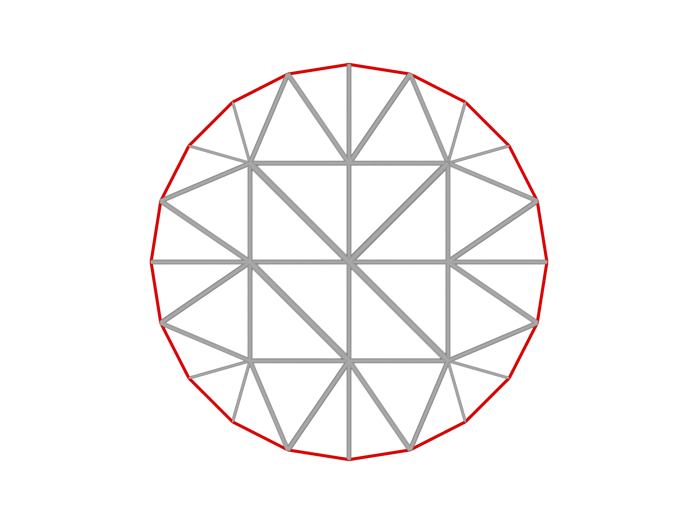
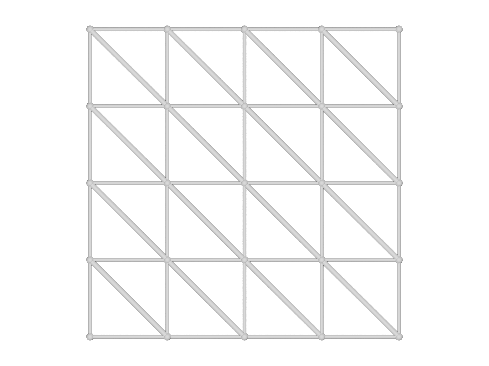
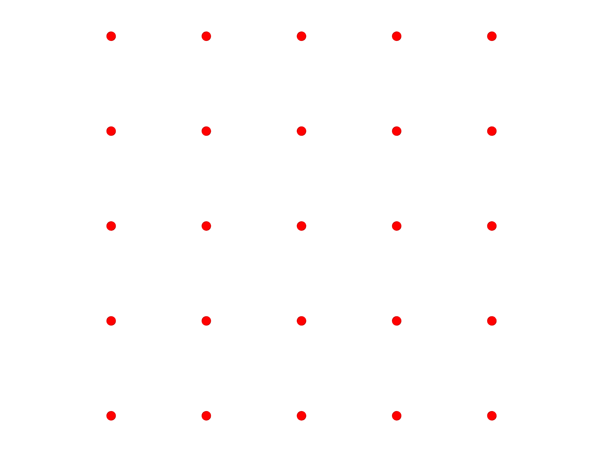
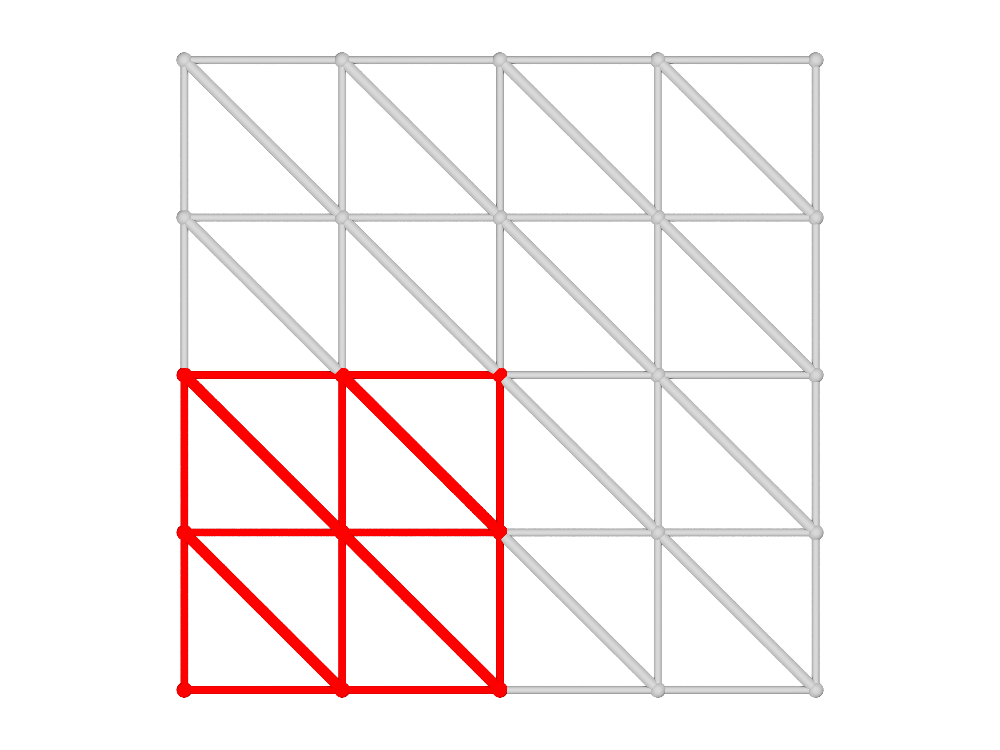
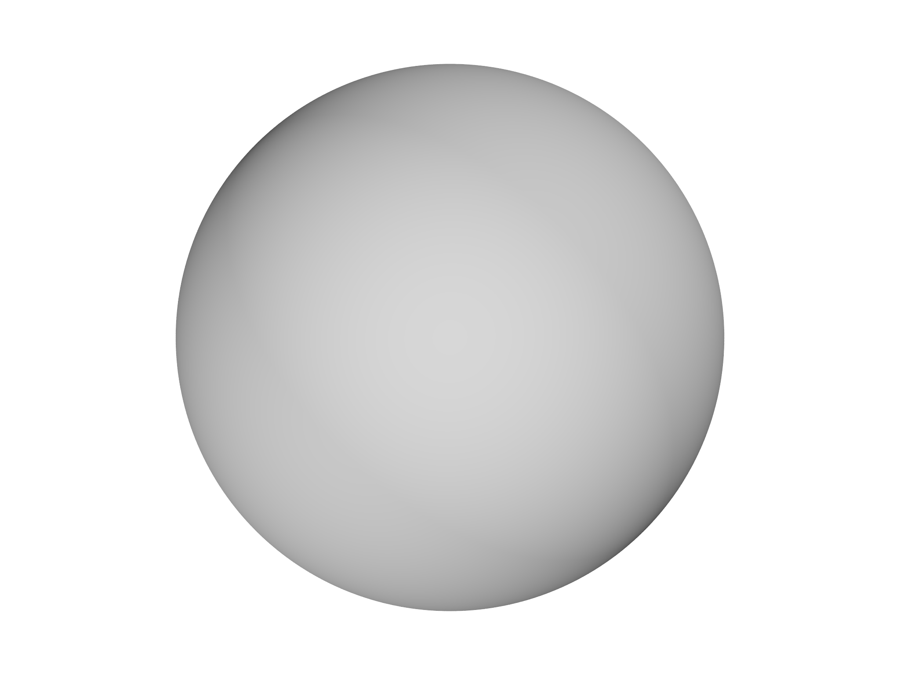
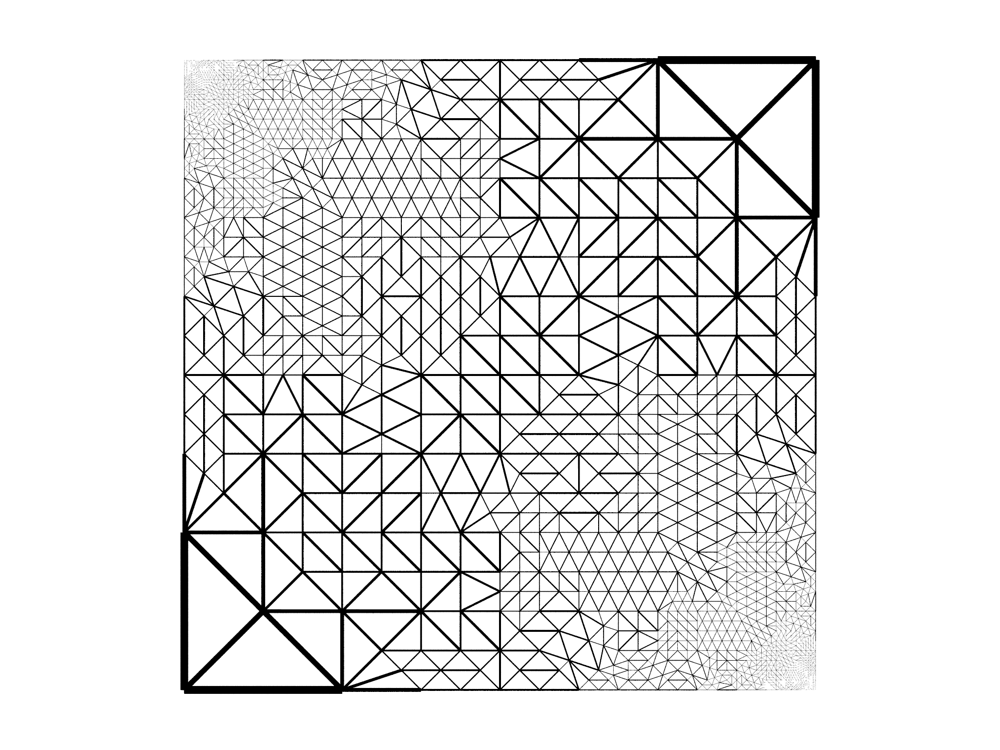
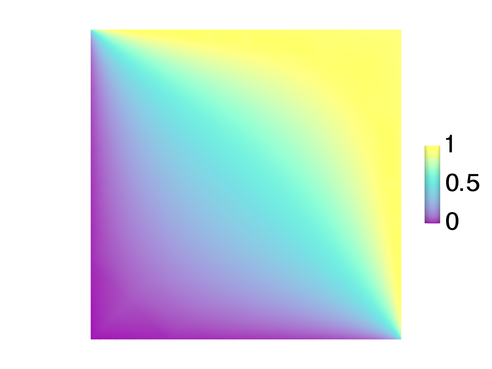

Versión 0.6.0
In nova fert animus mutatas dicere formas
corpora; di, coeptis (nam vos mutastis et illas)
adspirate meis primaque ab origine mundi
ad mea perpetuum deducite tempora carmen!
--- Ovid, Metamorphoses
Agradecimientos
El arquitecto principal de morpho, T J Atherton, desea agradecer a las muchas personas que han utilizado varias versiones del programa o han contribuido al proyecto:
| Andrew DeBenedictis | Danny Goldstein |
| Ian Cazador | Chaitanya Joshi |
| Cole Wennerholm | Eoghan Downey |
| Allison Culbert | Abigail Wilson |
| Zhaoyu Xie | Matthew Peterson |
| Chris Burke | Badel Mbanga |
| Anca Andrei | Mateo Giso |
| Sam Hocking | Emmett Hamilton |
| Hudson Ramírez | Paco Navarro |
| Emmanuel Flores |
Este material se basa en el trabajo apoyado por la Fundación Nacional de Ciencias bajo las subvenciones DMR-1654283 y OAC-2003820.
Descripción general
Morpho tiene como objetivo resolver la siguiente clase de problemas. Considere un funcional, $$F=\int_{C}f(q,\nabla q,\nabla^{2}q,...) d^{n}x+\int_{\partial C}g(q,\nabla q,\nabla^{2}q,...) d^{n-1}x,$$ donde \(q\) representa un conjunto de campos definidos en una variedad \(C\), la cual podría incluir escalares, vectores, tensores u otras cantidades y sus derivadas \(\nabla^{n}q\). El funcional incluye términos en el interior y en la frontera \(\partial C\) y también puede incluir propiedades geométricas de la variedad, como curvaturas locales. Este funcional debe minimizarse a partir de una valor inicial propuesto \( \{ C_{0},q_{0} \}\) con respecto a los campos \(q\) y la forma de la variedad \(C\). Se pueden imponer restricciones globales y locales tanto en \(C\) como en \(q\).
Morpho es un entorno orientado a objetos: todos los componentes del problema, incluyendo el dominio computacional, los campos, los funcionales, etc., se representan como objetos que interactúan entre sí. Gran parte del esfuerzo en la escritura de un programa en morpho implica la creación y manipulación de estos objetos. El entorno es flexible, modular y los usuarios pueden crear fácilmente nuevos tipos de objetos o cambiar por completo el funcionamiento de morpho.
Este manual tiene como objetivo ayudar a los usuarios a aprender a usar morpho. Proporciona instrucciones de instalación en Capítulo 2, información sobre cómo ejecutar el programa en Capítulo 3. En el Capítulo 4 se proporciona un tutorial detallado que muestra cómo configurar y resolver un problema de ejemplo. Capítulo 5 proporciona información sobre cómo trabajar con mallas y Capítulo 6 describe cómo visualizar los resultados de su cálculo con morpho. Los ejemplos proporcionados con morpho se describen en el Capítulo 7. Los capítulos restantes, que comprenden la segunda parte del manual, proporcionan una guía de referencia para todas las áreas de la funcionalidad de morpho.
Instalación de Morpho
Morpho está alojado en un repositorio de github disponible públicamente https://github.com/Morpho-lang/morpho. Morpho también requiere dos programas subsidiarios, una aplicación de terminal alojada en https://github.com/Morpho-lang/morpho-cli y una aplicación de visualización https://github.com/Morpho-lang/morpho-morphoview. Morpho es extensible, y los paquetes que proporcionan funcionalidad adicional se alojan en repositorios de git.
Para esta versión, morpho se puede instalar en todas las plataformas compatibles utilizando el administrador de paquetes homebrew. Alternativamente, el programa se puede instalar desde la fuente como se describe a continuación. Estamos trabajando continuamente para mejorar la instalación de morpho y esperamos proporcionar mecanismos adicionales para la instalación en las próximas versiones.
Instalación via homebrew
La forma más sencilla de instalar morpho es a través del administrador de paquetes homebrew. Para ello:
-
Si aún no está instalado, instale homebrew en su máquina como se describe en el sitio web de homebrew.
-
Abra un terminal y escriba:
brew update brew tap morpho-lang/morpho brew install morpho
Si necesita desinstalar morpho, simplemente abra una terminal y escriba brew uninstall morpho. Es muy importante desinstalar el homebrew morpho de esta manera antes de intentar instalarlo desde la fuente como se muestra a continuación.
Instalación desde el código fuente
La segunda forma de instalar morpho es compilando el código fuente directamente. Morpho ahora aprovecha el sistema de compilación CMake, que permite compilaciones independientes de la plataforma.
Manera en la que la instalación de código fuente morpho pone las cosas
Una instalación morpho incluye archivos de ayuda, módulos y otros recursos. De forma predeterminada, se instalan en la estructura de archivos /usr/local/ de la siguiente manera:
/usr/local/bin : Aquí se colocan los ejecutables morpho y morphoview.
/usr/local/share/morpho : Aquí se almacenan los archivos y módulos de ayuda.
/usr/local/include/morpho : Archivos de cabecera de Morpho para construir extensiones.
/usr/local/lib/morpho : Extensiones de Morpho.
Recopilación de dependencias
Morpho requiere algunas bibliotecas para proporcionar cierta funcionalidad:
blas/lapack : se utilizan para cálculos demandantes de álgebra lineal.
suitesparse : se utiliza para álgebra lineal dispersa.
Consulte https://people.engr.tamu.edu/davis/suitesparse.html y publicaciones para obtener más detalles
povray : es un trazador de rayos que se utiliza para gráficos con calidad de publicación (solo requerido por el módulo 'Povray').
La aplicación de terminal utiliza
libgrapheme o,
libunistring: para soporte de grafemas Unicode.
Morphoview requiere adicionalmente
glfw : para proporcionar la funcionalidad de la interfaz gráfica de usuario.
freetype : Proporciona visualización de texto.
Cada una de estas dependencias se puede instalar utilizando cualquier administrador de paquetes adecuado.
-
Homebrew (preferido en macOS):
brew update brew install glfw suite-sparse freetype povray libgrapheme -
Apt (preferido en Ubuntu):
sudo apt update sudo apt upgrade sudo apt install build-essential sudo apt install libglfw3-dev libsuitesparse-dev liblapacke-dev povray libfreetype6-dev libunistring-dev
Compilar la biblioteca compartida morpho
La pieza central de morpho es una biblioteca compartida, que luego puede ser utilizada por múltiples aplicaciones. Para construirla,
-
Obtenga el código fuente clonando el repositorio público de github:
git clone https://github.com/Morpho-lang/morpho.git -
Navegue a la carpeta 'morpho' y construya la biblioteca:
cd morpho mkdir build cd build cmake -DCMAKE_BUILD_TYPE=Release .. sudo make install -
Vuelva a salir de la carpeta morpho:
cd ../../
Compilar la aplicación de terminal morpho
La aplicación de terminal proporciona una interfaz interactiva para morpho y también puede ejecutar archivos morpho.
-
Obtenga el código fuente clonando el repositorio público de github:
git clone https://github.com/Morpho-lang/morpho-cli.git -
Vaya a la carpeta 'morpho-cli' y construya la biblioteca:
cd morpho-cli mkdir build cd build cmake -DCMAKE_BUILD_TYPE=Release .. sudo make install -
Comprueba que funciona escribiendo:
morpho6 -
Suponiendo que la aplicación de terminal morpho se inicia correctamente, escriba
quitpara volver al shell y luegocd ../../para volver a salir de la carpeta morpho-cli.
Compilar la aplicación de visor morphoview
Morphoview es una sencilla aplicación de visualización para visualizar los resultados de morpho.
-
Obtenga el código fuente clonando el repositorio público de github:
git clone https://github.com/Morpho-lang/morpho-morphoview.git -
Vaya a la carpeta 'morpho-cli' y construya la biblioteca:
cd morpho-morphoview mkdir build cd build cmake -DCMAKE_BUILD_TYPE=Release .. sudo make install -
Comprueba que funciona escribiendo:
morphoviewque simplemente debería ejecutarse y salir normalmente. A continuación, puede escribir
cd ../../para volver a salir de la carpeta morpho-morphoview.
Windows a través del subsistema de Windows para Linux (WSL)
La compatibilidad con Windows se proporciona a través del Subsistema de Windows para Linux (WSL), que es un entorno que permite a Windows ejecutar aplicaciones de Linux. Se recomienda encarecidamente usar WSL2, que es la versión más reciente y proporciona una mejor compatibilidad con las aplicaciones GUI; a continuación se proporcionan algunas instrucciones para WSL1.
-
Comience instalando la Aplicación Ubuntu desde la tienda de Microsoft. Siga todos los pasos de este enlace para asegurarse de que los gráficos funcionan.
-
Una vez que el terminal de Ubuntu esté funcionando en Windows, puede instalar morpho a través de homebrew o construyendo desde el código fuente.
Gráficos en WSL1
Si, en cambio, está trabajando en WSL1, debe seguir estas instrucciones para que se ejecuten los gráficos. A menos que se indique lo contrario, todos los comandos a continuación se ejecutan en la terminal de Ubuntu.
-
Se debe instalar un administrador de ventanas para que WSL pueda crear ventanas. En Windows, instale VcXsrv. Aparece como XLaunch en el menú de inicio de Windows.
-
Ejecute Xlaunch. Entonces,
-
elija
Múltiples ventanas, establezca el número de pantalla en 0 y presioneSiguiente -
elija
no iniciar ningún clientey presioneSiguiente -
Anule la selección de
opengl nativoy pulseSiguiente -
Clic "Finalizar"
-
-
En Ubuntu, descargue un paquete que contiene un conjunto completo de utilidades de escritorio que permite el uso de Windows.
sudo apt install ubuntu-desktop mesa-utilsDígale a ubuntu qué pantalla usar
export DISPLAY=localhost:0Para establecer la variable DISPLAY en el tipo de inicio de sesión
echo export DISPLAY=localhost:0 >> ~/.bashrc[Tenga en cuenta que esto supone que está usando bash como su terminal; puede ajustar esta línea para otros terminales].
-
Pruebe que el sistema de ventanas funciona ejecutando
glxgearsque debería abrir una ventana con algunos engranajes.
Actualización de morpho
A medida que se publiquen nuevas versiones de morpho, es probable que desee actualizar a la última versión. Desde la terminal:
-
Si usaste homebrew para instalar morpho, simplemente escribe,
brew upgrade morpho -
Si usted instaló morpho manualmente, y todavía tienes la carpeta del repositorio git en tu computadora, navega hasta ella con
cdy escribe,git pullque descarga las actualizaciones. A continuación, puede seguir las instrucciones anteriores para volver a compilar morpho. No es necesario reinstalar las dependencias, pero tenga en cuenta que algunas nuevas versiones de morpho pueden requerir dependencias adicionales.
-
Si ya no tiene la carpeta original del repositorio git morpho desde la que instaló morpho, simplemente vuelva a ejecutar la instalación desde cero como se indicó anteriormente. No debería ser necesario volver a instalar las dependencias.
Desinstalación de morpho
Si desea desinstalar morpho, puede hacerlo simplemente desde la aplicación de terminal.
-
Si usaste homebrew para instalar morpho, simplemente escribe
brew uninstall morpho -
Alternativamente, si compiló morpho desde el código fuente, puede eliminar todo con
rm /usr/local/bin/morpho6 rm /usr/local/bin/morphoview rm /usr/local/lib/libmorpho* rm -r /usr/local/share/morpho rm -r /usr/local/lib/morphoEs posible que tengas que anteponerles el prefijo
sudo.
Uso de Morpho
Morpho es una aplicación de línea de comandos, como python o lua. Se puede utilizar para ejecutar scripts o programas, a los que generalmente se les da la extensión de archivo .morpho, o ejecutarse de forma interactiva respondiendo a los comandos del usuario.
Ejecución de un programa
Para ejecutar un programa, simplemente ejecute morpho con el nombre del archivo,
morpho6 script.morpho
Morpho soporta una serie de banderas:
-w : Ejecuta morpho con más de un hilo de trabajo, por ejemplo, -w 4 ejecuta morpho con 4 hilos.
-D: Muestra el desmontaje del programa sin ejecutarlo. [Ver guía para desarrolladores]
-d : Modo de depuración. Morpho se detendrá y entrará en el depurador cada vez que se encuentre una @ en el código fuente. [Ver guía para desarrolladores]
-p : Perfila la ejecución del programa. Útil para identificar cuellos de botella en el rendimiento. [Ver guía para desarrolladores]
Modo interactivo
Para usar morpho de forma interactiva, simplemente cargue la aplicación Terminal (o equivalente en su sistema) y escriba
morpho6
Interfaz de línea de comandos para Morpho
![Interfaz de línea de comandos para Morpho] (./Figuras/commandline.jpg)
Como se muestra en la figura anterior, serás recibido con una breve bienvenida y un mensaje > que te invitará a ingresar comandos morpho. Por ahora, pruebe un clásico:
print "Hola Mundo"
que mostrará 'Hola Mundo' como salida. Se proporciona más información sobre el lenguaje morpho en la sección de referencias, especialmente en el capítulo Lenguaje si está familiarizado con lenguajes similares a C como C, C++, Java, Javascript, etc., las cosas deberían ser bastante familiares.
Para ayudar al usuario, el contenido del manual de referencia está disponible para el usuario en modo interactivo como ayuda en línea. Para obtener ayuda, simplemente escriba:
help
o aún más brevemente,
?
para ver la lista de temas principales. Para encontrar ayuda sobre un tema en particular, por ejemplo, ciclos for, simplemente escriba el nombre del tema después:
? for
Una vez que hayas terminado de usar morpho, simplemente escriba
quit
para salir del programa y volver al shell.
El entorno interactivo tiene algunas otras características útiles para ayudar al usuario:
-
Autocompletar. A medida que escribes, morpho te mostrará los comandos sugeridos que cree que estás intentando ingresar. Por ejemplo, si escribe
v, la línea de comandos mostrará la palabra clavevar. Para aceptar la sugerencia, presione la tecla de tabulación. Es posible que haya varias sugerencias disponibles; Utilice las teclas de flecha hacia arriba y hacia abajo para rotar a través de ellos. -
Historial de comandos. Utilice las teclas de flecha para recuperar los comandos introducidos anteriormente. A continuación, puede editarlos antes de ejecutarlos.
-
Edición de líneas. Mientras escribes un comando, usa las flechas izquierda y derecha para mover el cursor; Puede insertar nuevos caracteres en el cursor simplemente escribiéndolos o eliminar caracteres con la tecla
delete. Mantenga presionada la teclashiftmientras usa las teclas de flecha izquierda y derecha para seleccionar texto; luego puede usar 'Ctrl-C' para copiar yCtrl-Vpara pegar.Ctrl-Ase mueve al principio de la línea yCtrl-Eal final.
Tutorial
Para ilustrar cómo usar morpho, resolveremos un problema que involucra cristales líquidos nemáticos (NLC), fluidos compuestos por moléculas largas y rígidas que poseen una orientación molecular promedio local descrita por un campo vectorial unitario \(\mathbf{n}\). Las gotas de NLC sumergidas en un fluido isótropo huésped como el agua se denominan tactoides, y, a diferencia de las gotas de, por ejemplo, aceite en el agua que forman esferas, los tactoides pueden adoptar formas alargadas.
La funcional a minimizar, esto es, la energía libre del sistema, es bastante compleja,
$$ \begin{equation} F= \underbrace{\frac{1}{2}\int_{C}K_{11}\left(\nabla\cdot\mathbf{n}\right)^{2}+K_{22}(\mathbf{n}\cdot\nabla\times\mathbf{n})^{2}+K_{33}\left|\mathbf{n}\times\nabla\times\mathbf{n}\right|^{2}dA}_\text{elasticidad de cristal líquido}\label{eq:free} \end{equation} $$
$$ \begin{equation*} \quad + \underbrace{ \sigma\int dl }_\text{t.s.} \end{equation*} $$
$$ \begin{equation*} \quad + \underbrace{\frac{W}{2}\int\left(\mathbf{n}\cdot\mathbf{t}\right)^{2}dl}_\text{anclaje} \end{equation*} $$
donde los tres términos incluyen elasticidad de cristal líquido que impulsa el alargamiento de la gota, tensión superficial (s.t.) que se opone al alargamiento del límite y un término de anclaje que impone una orientación preferida en el límite. Necesitamos una restricción local, \(\mathbf{n}\cdot\mathbf{n}=1\), y también impondrá una restricción en el volumen de la gota. Para simplificar, resolveremos este problema en 2D. El código completo de este ejemplo de tutorial se encuentra en la carpeta 'examples/tactoid' del repositorio.
Importación de módulos
Morpho es un sistema modular y, por lo tanto, normalmente comenzamos nuestro programa diciéndole a morpho los módulos que necesitamos para que estén disponibles. Para ello, utilizamos la palabra clave import seguida del nombre del módulo:
import meshtools
import optimize
import plot
También podemos usar la palabra clave import para importar archivos de programa adicionales para ayudar a modularizar programas grandes. Estos son los módulos que usaremos para este ejemplo:
| Módulo | Finalidad |
|---|---|
meshtools | Código de utilidad para crear y refinar mallas |
optimize | Realizar la optimización |
plot | Visualiza los resultados |
El lenguaje Morpho
El lenguaje morpho es simple pero expresivo. Si estás familiarizado con los lenguajes tipo C (C, C++, Java, Javascript) te resultará muy natural. Una descripción mucho más detallada se proporciona en el Capítulo [Idioma](.. /reference/language.md), pero en la figura anterior se proporciona un breve resumen y proporcionamos una descripción general de las ideas clave para ayudarlo a seguir el tutorial:
-
Comentarios. Cualquier texto después de
//o rodeado por/``*y*``/es un comentario y no es procesado por morpho:Este es un comentario /* ¡Esto también! */ -
Variables. Para crear una variable, utilice la palabra clave
var; A continuación, puede asignar y utilizar la variable arbitrariamente:var a = 1 print a -
Funciones. Las funciones pueden tomar parámetros, y se les llama así:
print sin(x)y decláralos así:
fn f(x,y) { return x^2+y^2 }Algunas funciones toman argumentos opcionales, que se ven así:
var a = foo(quiet=true) -
Objetos. Morpho está profundamente orientado a objetos. La mayoría de las cosas en morpho se representan como objetos, que proporcionan métodos que puedes usar para controlarlos. Los objetos están formados por funciones constructoras que comienzan con una letra mayúscula (y pueden tomar argumentos):
var a = Object()Las llamadas a métodos tienen el siguiente aspecto:
a.foo() -
Colecciones. Morpho proporciona una serie de tipos de colecciones, todos los cuales son objetos, incluidas listas,
var a = [1,2,3]y Diccionarios:
var b = { "Massachusetts": "Boston", "California": "Sacramento" }y Rangos (a menudo utilizados en ciclos):
var a = 0..10:2 # all even numbers 0-10 inclusiveHay muchas otras, incluyendo Matrices, Matrices dispersas, etc.
Creación de la malla inicial


Las mallas son regiones discretizadas del espacio. La región más simple que podemos imaginar es un punto o vértice descrito por un conjunto de coordenadas \((x_{1},x_{2},....,x_{D})\) donde el número de coordenadas \(D\) define la dimensionalidad del espacio en el que se dice que la variedad está incrustada. A partir de más de un punto, podemos empezar a construir regiones más complejas. En primer lugar, entre dos puntos podemos imaginar que fijamos una regla imaginaria y dibujamos una línea recta o borde entre ellos. Tres puntos definen un plano, y también un triángulo; Por lo tanto, podemos identificar el área bidimensional del plano delimitada por el triángulo como una cara, como en la cara de un poliedro. Usando cuatro puntos, podemos definir el volumen delimitado por un tetraedro. Cada uno de estos elementos tiene una dimensionalidad diferente llamada _grado_and una Malla completa puede contener elementos de muchos grados diferentes, como se muestra en la Fig. 4.2.
Morpho proporciona varias formas de crear una malla. Se puede cargar una malla a partir de un archivo, construir una manualmente a partir de un conjunto de puntos, crear una a partir de un poliedro o a partir del conjunto de niveles (curvas de nivel) de una función.
Para este ejemplo, usaremos un archivo de malla predefinido disk.mesh. Para crear un objeto Mesh a partir de este archivo, llamamos a la función Mesh con el nombre del archivo:
var m = Mesh(“disk.mesh”)
Aquí, la palabra clave var le dice a morpho que cree una nueva variable m, que ahora se refiere al objeto Mesh recién creado.

disk.mesh.La malla inicial se muestra en la Fig. [4.3](#fig:Malla inicial); proporcionaremos el código para realizar la visualización en la sección Visualización de los resultados.
Si abres el archivo disk.mesh, que puedes encontrar en la misma carpeta que tactoid.morpho, verás que tiene un formato simple legible por humanos:
vertices
1 -1. 0. 0
2 -0.951057 -0.309017 0
...
edges
1 8 2
2 2 4
...
faces
1 8 2 4
2 8 4 6
...
El archivo se divide en secciones, cada una de las cuales describe elementos de un grado diferente. Cada línea comienza con un delimitador de sección como vertices, edges o faces, o con un id. Los vértices se definen entonces por un conjunto de coordenadas; Las aristas y las caras se definen proporcionando los respectivos identificadores de vértice.
Selecciones
A veces, queremos referirnos a partes específicas de un objeto 'Mesh': elementos que coinciden con algún criterio, por ejemplo. Los objetos de 'selección' nos permiten hacer esto. Debido a que la selección del límite es una actividad muy común, la función constructora 'Selection' toma un argumento opcional para hacer esto:
var bnd=Selection(m, boundary=true)
De forma predeterminada, solo los elementos de límite se incluyen en la Selección. Para una malla con un máximo de elementos de grado 2 (facets), los límites son elementos de grado 1 (líneas); Para una malla con elementos de grado 3 (volúmenes), los límites son elementos de grado 2 (facets). Muy a menudo también queremos los vértices en sí, por lo que podemos llamar a un método para lograrlo:
bnd.addgrade(0)
Una vez que se ha creado una Selección, puede ser útil visualizarla para asegurarse de que se seleccionan los elementos correctos. Hablaremos más sobre la visualización en la sección Visualización de resultados, pero por ahora la línea
Show(plotselection(m, bnd, grade=1))
muestra una visualización de la malla con los elementos de grado 1 seleccionados sombreados en rojo como se muestra en la Fig. 4.4.
 Seleccionando la frontera del la malla
Campos
Habiendo creado nuestro dominio computacional inicial, ahora creamos un objeto Field (Campo) que representa el campo director \(\mathbf{n}\):
var nn = Field(m, Matrix([1,0,0]))
Al igual que con el objeto Mesh anteriormente, declaramos una variable, nn, para hacer referencia al objeto Field. Tenemos que proporcionar dos argumentos a Field: el objeto Mesh en el que se define el Field, y algo para inicializarlo. Aquí, queremos que el director inicial tenga un valor espacialmente uniforme, por lo que podemos proporcionar a Field un objeto Matrix constante. De forma predeterminada, morpho almacena una copia de esta matriz en cada vértice de la malla; Sin embargo, los campos pueden almacenar información sobre elementos de cualquier grado (y almacenar más de una cantidad por grado e información sobre varios grados al mismo tiempo).
Es posible inicializar un Field con valores que varían espacialmente proporcionando una función anónima a Field como esta:
var phi = Field(m, fn (x,y,z) x^2+y^2)
Aquí, phi es un campo escalar que toma el valor \(x^{2}+y^{2}\). La palabra clave fn se utiliza para definir funciones.
Definición del problema
Pasamos ahora a plantear el problema. Cada término en el funcional energético (1) está representado por un objeto functional correspondiente, que actúa sobre una Mesh (Malla) (y posiblemente un Mesh (Campo) para calcular una cantidad integral como una energía; Los objetos funcionales también son responsables de calcular gradientes de la energía con respecto a las posiciones de los vértices y los componentes de los campos.
Tomemos los términos de (1) uno por uno: Para representar la elasticidad nemática creamos un objeto Nematic :
var lf=Nematic(nn)
El término de tensión superficial implica la longitud del límite, por lo que necesitamos un o~bjeto Length:
var lt=Length()
El término de anclaje no tiene un tipo de objeto integrado simple, pero podemos usar un objeto general LineIntegral` para lograr el resultado correcto.
var la=LineIntegral(fn (x, n) n.inner(tangent())^2, nn)
Tenga en cuenta que tenemos que proporcionar una función la integrando y que será llamada por LineIntegral cuando evalúe la integral. Las funciones integrando se llaman primero con las coordenadas locales (como un objeto Matrix que representa un vector columna) y luego el valor interpolado local de cualquier número de Campos. También hacemos uso de la función especial tangent() que devuelve localmente una tangente local a la recta.
También tenemos que imponer limitaciones. Cualquier objeto funcional se puede usar igualmente bien como una energía o una restricción, y por lo tanto creamos un objeto NormSq (norm-squared) que se usará para implementar la restricción de vector unitario local en el campo director:
var ln=NormSq(nn)
y un objeto Area para la restricción global. Esto es realmente una restricción que fija el volumen de fluido en la gota, pero como estamos en 2D, eso se convierte en una restricción en el área de la malla:
var laa=Area()
Ahora tenemos una colección de objetos funcionales que podemos usar para definir el problema. Hasta ahora, no hemos especificado qué funcionales son energías y cuáles son restricciones; Tampoco hemos especificado sobre qué partes de la malla se evaluarán los funcionales. Toda esa información se recopila en un objeto OptimizationProblem, que ahora crearemos:
// Configurar el problema de optimización
var W = 1
var sigma = 1
var problema = OptimizationProblem(m)
problema.addenergy(lf)
problem.addenergy(la, selection=bnd, prefactor=-W/2)
problem.addenergy(lt, selection=bnd, prefactor=sigma)
problem.addconstraint(laa)
problem.addlocalconstraint(ln, field=nn, target=1)
Tenga en cuenta que algunas de estas funciones solo actúan sobre una selección, como el límite, y por lo tanto usamos el parámetro opcional selection para especificarlo. También podemos especificar el prefactor del funcional.
Realizando la optimización
Ahora estamos listos para realizar la optimización, para lo cual necesitamos un objeto Optimizer. Estos vienen en dos sabores: un ShapeOptimizer y un FieldOptimizer que actúan respectivamente sobre la forma y un campo. Los creamos con el problema y la cantidad sobre la que se supone que deben actuar:
// Crear optimizadores de formas y campos
var sopt = ShapeOptimizer(problem, m)
var fopt = FieldOptimizer(problem, nn)
Una vez creados estos, podemos realizar la optimización llamando al método linesearch con un número específico de iteraciones para cada uno:
// Bucle de optimización
for (i in 1..100) {
fopt.linesearch(20)
sopt.linesearch(20)
}
Cada iteración de linesearch hace evolucionar el campo (o forma) hacia abajo en el gradiente del funcional de destino, sujeto a restricciones, y encuentra un tamaño de paso óptimo para reducir el valor del funcional. Aquí, alternamos entre optimizar el campo y optimizar la forma, realizando veinte iteraciones de cada uno, y en general hacemos esto cien veces. Estos números han sido elegidos de forma bastante arbitraria, y si nos fijamos en el resultado nos daremos cuenta de que morpho no siempre ejecuta veinte iteraciones de cada uno. Más bien, en cada iteración comprueba si el cambio en la energía satisface, $$|E|<\epsilon,$$ o, $$\left|\frac{\Delta E}{E}\right|<\epsilon$$ donde el valor de \(\epsilon\), la tolerancia de convergencia se puede cambiar estableciendo la propiedad etol del objeto Optimizer:
sopt.etol = 1e-7 // el valor predeterminado es 1E-8
Algunas otras propiedades de un Optimizador que pueden ser útiles para que el usuario las ajuste son las siguientes:
| Propiedad | Valor predeterminado | Finalidad |
|---|---|---|
etol | \(1\times10^{-8}\) | Tolerancia en la energía (error relativo) |
ctol | \(1\times10^{-10}\) | Tolerancia a restricciones (qué tan bien se satisfacen las restricciones) |
stepsize | 0.1 | Tamaño de paso para relax (cambiado por búsqueda de líneas) |
steplimit | 0.5 | El tamaño de paso más grande que puede tomar una linesearch |
maxconstraintsteps | `20 | Número de pasos que el optimizador puede realizar para garantizar que se satisfagan las restricciones |
quiet | false | Si se imprime la salida a medida que se produce la optimización |
Visualización de resultados
Morpho proporciona un sistema de gráficos altamente flexible, con una aplicación de visualización externa morphoview, para permitir visualizaciones enriquecidas de los resultados. Las visualizaciones suelen implicar uno o más objetos Gráphics, que actúan como contenedor para que se muestren los elementos gráficos. Se pueden agregar varios graphics primitives, como esferas, cilindros, flechas, tubos, etc. a un objeto Gráphics para hacer un dibujo.
Ahora estamos listos para visualizar los resultados de la optimización. Primero, dibujaremos la malla. Debido a que estamos interesados en ver la estructura de la malla, dibujaremos los bordes (es decir, los elementos de grado 1). La función para hacer esto se proporciona como parte del módulo plot que importamos en la sección Importación de módulos:
var g=plotmesh(m, grade=1)
A continuación, crearemos un objeto Graphics separado que contenga al director. Dado que el director \(\mathbf{n}\) es un campo vectorial unitario, y el signo no es significativo (la energía elástica nemática es en realidad invariante bajo \(\mathbf{n}\to-\mathbf{n}\)), una forma apropiada de mostrar un solo director es como un cilindro orientado a lo largo de \(\mathbf{n}\). Por lo tanto, crearemos una función auxiliar que cree un objeto 'Graphics' y dibuje un cilindro de este tipo en cada punto de malla:
// Función para visualizar un campo de director
// m - la malla
// nn - el Campo del director a visualizar
// dl - Escalar el director
fn visualize(m, nn, dl) {
var v = m.vertexmatrix()
var nv = m.count() // Número de vértices
var g = Graphics() // Creación de un objeto gráfico
for (i in 0...nv) {
var x = v.column(i) // Obtener el i-ésimo vértice
// Dibuja un cilindro alineado con nn en este vértice
g.display(Cylinder(x-nn[i]*dl, x+nn[i]*dl, aspectratio=0.3))
}
return g
}
Una vez que hemos definido esta función, podemos usarla:
var gnn=visualize(m, nn, 0.2)
Las variables \(g\) y \(gnn\) ahora se refieren a dos objetos Graphics separados. Podemos combinarlos usando el operador \(+\) y mostrarlos así:
var gdisp = g+gnn
Show(gdisp)

La visualización resultante se muestra en la Fig. 4.5.
Refinamiento
Ahora hemos resuelto nuestro primer problema de optimización de formas, y el script completo del problema se proporciona en la carpeta examples/tutorial dentro del repositorio de git como tutorial.morpho. El resultado que hemos obtenido en la Fig. 4.5 es, sin embargo, una solución muy gruesa y de baja resolución que comprende solo un número relativamente pequeño de elementos. Para obtener una solución mejorada, necesitamos refinar nuestra malla. Debido a que la modificación de la malla también requiere que actualicemos otras estructuras de datos como campos y selecciones, se utiliza un objeto especial MeshRefiner para realizar el refinamiento.
Para llevar a cabo el refinamiento:
-
Cree un objeto
MeshRefiner, proporcionándole una lista de todos los objetosMesh,FieldySelection(es decir, la malla y los objetos que dependen directamente de él) que deben actualizarse:var mr = MeshRefiner([m, nn, bnd]); // Configurar el refinador -
Llame al método 'refine' en el objeto
MeshRefinerpara realizar realmente el refinamiento. Este método devuelve un objetoDictionaryque asigna los objetos antiguos a los potencialmente recién creados.var refmap = mr.refine(); // Realizar el refinamiento -
Dígale a cualquier otro objeto que haga referencia a la malla, campos o selecciones que actualice sus referencias usando
refmap. Por ejemplo, los objetosOptimizationProblemyOptimizernormalmente se actualizan en este paso.for (el in [problem, sopt, fopt]) el.update(refmap); // Actualizar el problema -
Actualizar nuestras propias referencias
m = refmap[m]; nn = refmap[nn]; bnd = refmap[bnd]; // Actualizar variables


Insertamos este código después de nuestra sección de optimización, lo que hace que morpho se optimice y refine sucesivamente.
El código completo, incluido el refinamiento, se encuentra en la carpeta
examples/tutorialdentro del repositorio git comotutorial2.morpho
Las formas optimizadas resultantes se muestran en la Fig. 4.6.
// Bucle de optimización
var refmax = 3
for (refiter in 1..refmax) {
print "===Nivel de refinamiento ${refiter}==="
for (i en 1..100) {
fopt.linesearch(20)
sopt.linesearch(20)
}
if (refiter==refmax) rompe
Refinamiento
var mr=MeshRefiner([m, nn, bnd]) // Configurar el refinador
var refmap=mr.refine() // Realizar el refinamiento
for (el in [problem, sopt, fopt]) el.update(refmap) // Actualiza el problema
m=refmap[m]; nn=refmap[nn]; bnd=refmap[bnd] // Actualizar variables
}
Siguientes pasos
Una vez completado este tutorial, es posible que desee explorar el efecto de cambiar algunos de los parámetros del archivo. ¿Qué pasa si cambias sigma y W, los coeficientes delante de los términos de la energía? ¿Qué pasa si das un número diferente de pasos? ¿O cambiar las propiedades de los optimizadores como stepsize y steplimit?
Deberías mirar otros archivos de ejemplo proporcionados en la carpeta examples del repositorio de git. El resto del manual comprende capítulos que exploran ciertos conceptos de morpho con más detalle, seguidos de un manual de referencia detallado para la funcionalidad de morpho y una descripción completa del lenguaje de scripting.
Trabajando con mallas
Este capítulo explica varias formas en que el usuario puede crear y manipular objetos Mesh en morpho. La forma más sencilla de crear una malla para un dominio deseado es utilizar el módulo meshgen, que proporciona una interfaz conveniente y de muy alto nivel. El módulo meshtools proporciona operaciones de creación de mallas de bajo nivel y una serie de rutinas útiles para manipular mallas. El módulo implicitmesh produce superficies a partir de funciones implícitas. Por último, puede utilizar un programa externo para crear una malla que exporte los datos en formato vtk utilizando el módulo vtk.
La creación de mallas sigue dos patrones. Algunos métodos utilizan un patrón constructor en el que se llama a una sola función que crea la malla, p. ej.
var mesh = LineMesh(fn (t) [t,0], -1..1:0.1)
Otros enfoques siguen un patrón builder, en el que primero se crea un objeto auxiliar especial,
var mb = MeshBuilder()
y manipularlo, por ejemplo, añadiendo elementos u opciones de configuración. A continuación, se crea la malla llamando al método de compilación:
var mesh = mb.build()
El módulo meshgen
El módulo meshgen produce convenientemente mallas de alta calidad para muchos tipos de dominio. Sigue el patrón del generador con un objeto auxiliar MeshGen que realiza la construcción. Para usar meshgen, el usuario debe proporcionar una función escalar que sea positiva en todos los lugares en los que desea que se malla.
Nota Un ejemplo se conoce en la literatura como una function_ de distancia _con signo, que es la distancia euclidiana de un punto dado \(x\) al límite de un conjunto \(\Omega\) con el signo positivo si \(x\) está en el interior de \(\Omega\). MeshGen no requiere funciones de distancia con signo, pero acepta cualquier función continua y razonablemente suave.
Por ejemplo, el interior del disco unitario en dos dimensiones, se describe mediante la función $$f(x,y)=1-(x^{2}+y^{2}).$$ Para crear la malla correspondiente, primero debemos especificar una función morpho adecuada que describa el dominio. Esta función será llamada repetidamente por MeshGen, que le pasará un vector de posición x. Por lo tanto, se debe acceder a los componentes \((x,y)\) desde el argumento x indexando:
fn disk(x) {
return 1-(x[0]^2+x[1]^2)
}
Ahora que se especifica la función, podemos crear un objeto MeshGen:
var mg = MeshGen(disk, [-1..1:0.2, -1..1:0.2])
El segundo parámetro es una lista de rangos que proporcionan límites generales en el dominio que se va a mallar. Aquí usaremos \(x,y\in[-1,1]\). Al establecer el tamaño del paso, el usuario puede proporcionar a MeshGen una sugerencia general de la resolución.
Por último, creamos el Mesh llamando al método build:
var m = mg.build();
La malla resultante se muestra en la Fig. 5.1, panel izquierdo. Se puede generar una malla de mayor resolución cambiando los objetos Range pasados a MeshGen:
var mg = MeshGen(disk, [-1..1:0.1, -1..1:0.1])
Esto genera una malla de resolución mucho mayor, con aproximadamente cuatro veces el número de vértices como se muestra en la Fig. 5.1, panel derecho.


MeshGen también puede mallar dominios más complicados. Para facilitar esto, proporciona una clase Domain que acepta una función escalar en su constructor. Por ejemplo, este código crea una elipse como se muestra en la Fig. 5.2, panel izquierdo:
var e0 = Domain(fn (x) -((x[0]/2)^2+x[1]^2-1))
var mg = MeshGen(e0, [-2..2:0.2, -1..1:0.2])
var m = mg.build()
La ventaja de esto es que los objetos de dominio se pueden combinar utilizando los métodos de operación de conjunto union, intersección y diferencia. Para ilustrar las posibilidades con esto, usamos un constructor especial para crear tres dominios correspondientes a discos,
var a = CircularDomain(Matrix([-0.5,0]), 1)
var b = CircularDomain(Matrix([0.5,0]), 1)
var c = CircularDomain(Matrix([0,0]), 0.3)
luego combínalos,
var dom = a.union(b).difference(c)
y la malla el dominio resultante,
var mg = MeshGen(dom, [-2..2:0.1, -1..1:0.1], quiet=false)
var m = mg.build()
con el resultado que se muestra en la Fig. 5.2, panel derecho.


Las mallas tridimensionales se crean de manera muy similar. Aquí creamos una malla esférica, que se muestra en la Fig. 5.3
var dh = 0.2
var dom = Domain(fn (x) -(x[0]^2+x[1]^2+x[2]^2-1))
var mg = MeshGen(dom, [-1..1:dh, -1..1:dh, -1..1:dh])
var m = mg.build()

El módulo meshtools
Meshtools proporciona muchas funciones útiles para trabajar con mallas, incluidos constructores para crear ciertos tipos de mallas y también clases para refinar, desengrasar y fusionar mallas.
LineMesh
La función LineMesh es una forma conveniente de crear una malla a partir de una función paramétrica de un parámetro. Debe especificar la función que se va a utilizar y un rango de puntos que se va a generar. A continuación, LineMesh evalúa cada punto del rango y los une con un elemento de línea.
Esto es útil para generar mallas como una línea recta simple (Fig. 5.4, panel izquierdo):
var m = LineMesh(fn (t) [t,0], -1..1:0.1)
También puede solicitar que los extremos de la malla se unan para formar un bucle especificando closed. Este código genera un círculo (Fig. [5.4](#fig: LineMesh), panel central):
var m = LineMesh(fn (t) [cos(t),sin(t)], -Pi...Pi:2*Pi/10, closed=true)
Puede aumentar la resolución del círculo cambiando el tamaño del paso en el Rango, por ejemplo a 2``*``Pi/20 para duplicar el número de puntos. Tenga en cuenta el uso del operador exclusivo Range aquí, …, en lugar de .. para evitar la duplicación del punto en (1,0).
La malla de salida puede ser de cualquier dimensión, como esta hélice en 3D (Fig. 5.4, panel derecho). Tenga en cuenta que aquí usamos una función regular en lugar de una función anónima:
fn helix(t) {
return [cos(2*Pi*t),t/2,sin(2*Pi*t)]
}
var m = LineMesh(helix, -2..2:1/20)

AreaMesh
AreaMesh es similar a la función LineMesh que crea una malla a partir de una función paramétrica, que ahora toma dos parámetros. Para crear un cuadrado,
var m = AreaMesh(fn (u,v) [u,v,0], -1..1:0.2, -1..1:0.2)
donde observe que se requiere un rango separado para \(u\) y \(v\). De forma predeterminada, la salida de AreaMesh solo contiene elementos de grado 0 y grado 2, es decir, vértices y facetas, como se puede ver en la Fig. 5.5 (izquierda). Para agregar elementos de grado 1 si es necesario, llame al método addgrade en la malla:
m.addgrade(1)
Esto da el resultado que se muestra en la Fig. 5.5 (derecha).

addgrade.Al igual que con LineMesh, las mallas se pueden cerrar en una o ambas direcciones, lo que permite la creación de un cilindro,
m = AreaMesh(fn (u, v) [v, cos(u), sin(u)],
-Pi...Pi:Pi/16,
-2..2:0.1, closed=[true, false])
y un toroide,
var c=1, a=0.5 m = AreaMesh(fn (u, v) [(c + a*cos(v))*cos(u),
(c + a*cos(v))*sin(u),
a*sin(v)],
0...2*Pi:Pi/16,
0...2*Pi:Pi/8, closed=true)
Los resultados de estos se muestran en la Fig. 5.6. Tenga en cuenta que las mallas generadas por más módulos que incorporan algún grado de control de calidad, por ejemplo, implicitmesh o meshgen, son generalmente mejores y deben usarse con preferencia a las creadas por AreaMesh.


PolyhedronMesh


PolyhedronMesh ayuda a crear mallas correspondientes a poliedros. Para hacer un cubo, por ejemplo, especificamos los ocho vértices (ver Fig. 5.7, izquierda),
var vertices = [[-0.5, -0.5, -0.5],
[ 0.5, -0.5, -0.5],
[-0.5, 0.5, -0.5],
[ 0.5, 0.5, -0.5],
[-0.5, -0.5, 0.5],
[ 0.5, -0.5, 0.5],
[-0.5, 0.5, 0.5],
[ 0.5, 0.5, 0.5]]
y las seis caras,
var faces = [ [0,1,3,2], [4,5,7,6],
[0,1,5,4], [3,2,6,7],
[0,2,6,4], [1,3,7,5] ]
Tenga en cuenta que los identificadores de vértices deben proporcionarse en orden de dar la vuelta a cada cara (ver Fig. 5.7, centro). Una vez especificadas las caras, podemos crear la malla,
var m = PolyhedronMesh(vertices, faces)
m.addgrade(1)
Tenga en cuenta que PolyhedronMesh crea automáticamente vértices adicionales y genera triángulos para completar la malla (ver Fig. 5.7, derecha). A continuación, añadimos elementos de línea (grado 1), ya que no son creados automáticamente por PolyhedronMesh.
DelaunayMesh

La función constructora DelaunayMesh realiza una "triangulación" delaunay de un conjunto de puntos. Por ejemplo, la creación de una nube aleatoria de puntos (Fig. 5.8, panel izquierdo):
var pts = []
for (i in 0...100) pts.append(Matrix([2*random()-1, 2*random()-1, 2*random()-1]))
entonces podemos llamar a DelaunayMesh para construir una tetraedralización. DelaunayMesh solo genera elementos de la más alta calidad (en 2D, elementos de área, en elementos de volumen 3D), por lo que si se necesitan bordes, estos se pueden agregar con 'addgrade'.
var m=DelaunayMesh(pts)
m.addgrade(1)
La tetraedralización resultante se muestra en la Fig. 5.8, panel derecho.
ChangeMeshDimension
De vez en cuando, uno desea tomar una malla incrustada en un espacio, digamos dos dimensiones, e incrustarla en un espacio de diferente dimensionalidad. Por ejemplo, es posible que desee utilizar una malla 2D generada con MeshGen en el espacio 3D. La función ChangeMeshDimension proporciona una forma cómoda de hacerlo:
var new = ChangeMeshDimension(mesh, dim)
donde dim es la dimensión de destino de la nueva malla.
MeshBuilder
La clase MeshBuilder facilita la construcción manual de un objeto Mesh. Está destinado principalmente a ser utilizado por otros algoritmos de construcción de mallas, pero ocasionalmente es útil. Para empezar, cree un objeto MeshBuilder:
var mb = MeshBuilder()
A continuación, puede agregar vértices y otros elementos uno por uno llamando a los métodos adecuados. Construyamos un tetraedro añadiendo primero los vértices:
mb.addvertex([0, 0, 0.612372])
mb.addvertex([-0.288675, -0.5, -0.204124])
mb.addvertex([-0.288675, 0.5, -0.204124])
mb.addvertex([0.57735, 0, -0.204124])
A continuación, tenemos que añadir aristas que conecten estos vértices, y también caras. Podríamos hacer esto uno por uno, dando una lista de identificadores de vértices para cada elemento a su vez,
mb.addedge([0,1])
mb.addedge([0,2])
// ... etc.
pero hay una forma más inteligente para este caso. Observe que los identificadores de vértices correspondientes a las aristas del tetraedro corresponden a los conjuntos de tamaño 2 generados a partir de la lista [``0,1,2,3``] como se puede ver ejecutando este código:
var vids = [0,1,2,3]
for (s in vids.sets(2)) print s
Por lo tanto, podemos generar las aristas automáticamente,
var vids = [0,1,2,3]
for (s in vids.sets(2)) mb.addedge(s)
y las caras también, que son los conjuntos de tamaño 3,
for (s in vids.sets(3)) mb.addface(s)
Podemos terminar añadiendo un único elemento de grado 3 correspondiente al volumen:
mb.addvolume(vids)
Una vez que se hayan agregado todos estos, llame al método build para crear un objeto Mesh:
var m = mb.build()
y la malla resultante se muestra en la Fig. 5.9.

El módulo vtk
El módulo vtk proporciona facilidades de importación y exportación para el popular formato de archivo VTK, que es utilizado por muchos otros programas como paraview. A diferencia de los archivos morpho .mesh, los archivos VTK pueden incluir datos de malla y de campo. Para cargar una malla desde un archivo VTK, use un objeto VTKImporter:
Import vtk
var mv = VTKImporter("archivo.vtk")
var m = mv.mesh()
Los campos se pueden cargar de manera similar. Cada campo del archivo VTK tiene un identificador, que se pasa al método field como una cadena.
var f = mv.field("F")
var g = mv.field("G")
La exportación requiere una clase VTKExporter,
import meshtools
import vtk
var m1 = LineMesh(fn (t) [t,0,0], -1..1:2)
var g1 = Field(m1, fn(x,y,z) Matrix([x,2*x,3*x]))
var vtkE = VTKExporter(g1, fieldname=“g”)
vtkE.export(“data.vtk”)
Uniendo mallas
Una estrategia potencial para crear mallas para dominios complicados es comenzar creando varias mallas más simples y luego fusionarlas en una malla más grande. La clase MeshMerge en el paquete meshtools nos permite hacer esto. Para usarlo, creamos un objeto MeshMerge con una lista de mallas que deseamos fusionar
var mrg = MeshMerge([m1, m2, m3, ... ])
y, a continuación, llame al método merge para realizar la combinación y devolver la malla resultante:
var newmesh = mrg.merge()
Como ejemplo de esto, construiremos una malla que podría ser una suposición inicial para una membrana sostenida entre dos límites fijos cuadrados. Para ello, crearemos un octante y luego lo reflejaremos a lo largo de diferentes ejes. La unidad básica está construida con PolyhedronMesh, como se muestra en la Fig. 5.11:
var a = 0.5 // Vertical separation
var r = 0.5 // Size of hole
var L = 1 // Size of box
// One octant of the mesh
var vertices = [ [r,0,a], [L,0,a], [L,r,a], [L,L,a],
[r,L,a], [0,L,a], [0,r,a], [r,r,a],
[r,0,0], [r,r,0], [0,r,0] ]
var faces = [ [0,1,2,7], [2,3,4,7], [7,4,5,6], [0,8,9,7], [6,7,9,10] ]
var m1 = PolyhedronMesh(vertices, faces)
m1.addgrade(1)
Ahora necesitamos crear código que refleje una malla sobre uno o más ejes. Hay más de una forma de hacerlo, pero aquí crearemos una clase MeshReflector que siga el patrón del constructor:
class MeshReflector {
init(mesh) {
self.mesh = mesh
self.dim = mesh.vertexmatrix().dimensions()[0] // Get Mesh dimension
}
// Construct a matrix that reflects about one or more axes
_reflectionmatrix(axis) {
var rmat = Matrix(self.dim,self.dim)
for (i in 0...self.dim) rmat[i,i]=1
if (isint(axis)) rmat[axis,axis]*=-1
else if (isobject(axis)) for (i in axis) rmat[i,i]*=-1
return rmat
}
reflect(axis) { // Reflect the mesh about the given axis or axes
var rmat = self._reflectionmatrix(axis)
// Clone and transform the mesh
var m = self.mesh.clone()
for (vid in 0…m.count()) {
m.setvertexposition(vid, rmat * m.vertexposition(vid))
}
return m
}
}
Una vez definida esta clase, creamos un MeshReflector y lo usamos para construir siete copias reflejadas:
var mr = MeshReflector(m1)
// Merge reflected meshed together
var merge = MeshMerge([ m1,
mr.reflect(0),
mr.reflect(1),
mr.reflect(2),
mr.reflect([0,1]),
mr.reflect([1,2]),
mr.reflect([2,0]),
mr.reflect([0,1,2])
])
var m = merge.merge()
La malla resultante se muestra en la Fig. 5.11, panel derecho. Tenga en cuenta que MeshMerge elimina automáticamente los elementos duplicados a medida que se realiza la combinación, de modo que
print m1.count(1)
informa que había 35 elementos de línea en la malla original, mientras que
print m.count(1)
produce \(256=8\times(35-6/2)\) elementos de línea, porque hay 6 aristas compartidas para cada copia.

Seleccionando mallas
El módulo meshslice está diseñado para ayudar a visualizar un "corte" a través de la malla y los campos asociados, lo que a menudo es útil cuando se trabaja con mallas tridimensionales o superiores. Para ilustrar su uso, reutilizaremos la malla esférica creada con MeshGen en la Meshgen Section anterior (ver Fig. 5.3). Asegúrese de que la malla tenga elementos de grado 2 presentes con addgrade si es necesario. También crearemos un campo escalar simple:
var u = Field(m, fn (x,y,z) x*y)
Para tomar un slice, primero crea un objeto MeshSlicer con la malla que queremos cortar:
var ms=MeshSlicer(m)
A continuación, llame al método slice, que requiere que especifiquemos un plano de corte. Los planos se definen mediante un punto \((x,y,z)\) y un vector normal \((n_{x},n_{y},n_{z})\), que se pasan como argumentos:
var slc=ms.slice([0,0,0],[0,0,1]) // position, normal
Después de tomar un slice, también podemos cortar cualquier número de objetos Field:
var uslc=ms.slicefield(u)
Un solo MeshSlicer puede tomar cualquier número de sectores de la misma malla; slicefield siempre utiliza el segmento más reciente tomado. Los resultados del ejemplo se muestran en la Fig. 5.12. Como se puede ver, los resultados de cortar una malla suelen producir mallas que son irregulares, con triángulos estrechos y elementos de tamaño desigual. Por lo tanto, estas mallas están pensadas principalmente para fines de visualización en lugar de su uso en cálculos.

Visualización
En este capítulo se describen las formas de utilizar morpho para visualizar la salida. Las funciones fáciles de usar para visualizar objetos geométricos se encuentran en el módulo plot, mientras que puede dibujar objetos arbitrarios usando el módulo gráficos. La calidad de la publicación se puede generar cómodamente utilizando el módulo povray.
El módulo de visualización
ABC
grade option. C The color of the mesh can
be chosen with the color option.El módulo plot ofrece una forma conveniente de visualizar mallas, campos y selecciones. Para ilustrar su uso, crearemos una malla simple,
import meshtools
var m = AreaMesh(fn (u,v) [u, v, 0], -1..1:0.2, -1..1:0.2)
m.addgrade(1)
y un campo escalar asociado,
var f = Field(m, fn (x,y) x*y)
Meshes (Mallas)
Para visualizar la malla, use la función plotmesh
var g = plotmesh(m)
que genera un objeto Graphics, que describiremos con más detalle en la Sección de gráficos a continuación. De forma predeterminada, plotmesh muestra solo el elemento de grado más alto presente aquí grado 2 o facetas como se muestra en la 6.1A. Para mostrar otras calificaciones, use la opción grade:
var g = plotmesh(m, grade=[0,1])
que muestra puntos y aristas como se muestra en la Fig. [6.1] (#fig:PlotMesh)B.
Puede controlar el color de la malla con la opción color como se muestra en la Fig. [6.1] (#fig:TramaMesh) C:
var g = plotmesh(m, grade=0, color=Red)
Para mostrar elementos seleccionados particulares de una malla, puede usar el argumento opcional selection y proporcionar un objeto Selection.
var sel = Selection(m, fn (x,y,z) x^2+y^2<1)
sel.addgrade(2)
var g = plotmesh(m, grade=[0,2], selection=sel)
Etiquetas de malla
A B
B
A veces es útil poder identificar el identificador de un elemento determinado en una malla, especialmente con fines de depuración. La función plotmeshlabels está diseñada para facilitar esto, como se muestra en la Fig. 6.2. Puede seleccionar el grado para el que desea dibujar los identificadores y especificar su color, tamaño y dirección de dibujo. También es posible dar un desplazamiento, que puede ser una lista, una matriz o incluso una función, que ajuste la ubicación de las etiquetas en relación con el centro del elemento. Aquí los desplazamos un poco más arriba y a la derecha:
var glabel = plotmeshlabels(m, grade=0, color=Black, offset=[0.025,0.025,0])
La función plotmeshlabels solo dibuja etiquetas, no la malla en sí, por lo que normalmente la combinamos con plotmesh y mostramos ambas:
var gmesh = plotmesh(m, grade=[0,1])
var g = gmesh+glabel
Para mostrar los identificadores de los elementos de grado 1, por ejemplo, podríamos usar:
var glabel = plotmeshlabels(m, grade=1, color=Red, offset=[-0.05,-0.05,-0.03])
Selecciones
AB
Al configurar un problema en morpho, es muy común usar objetos de selección para aplicar funcionales a partes limitadas de una malla. Es esencial comprobar que las selecciones son correctas, y la 'selección de parcelas' proporciona una manera fácil de hacerlo. Para ilustrar esto, seleccionemos los elementos de la parte inferior derecha de la malla,
var s = Selection(m, fn (x,y,z) x<=0 && y<=0)
s.addgrade(1)
y visualice la selección como se muestra en la Fig. 6.3 Un:
var g = plotselection(m, s, grade=[0,1])
Del mismo modo, podemos seleccionar la frontera,
var bnd = Selection(m, boundary=true)
y visualice la selección como se muestra en la 6.3B:
var gbnd = plotselection(m, bnd, grade=[0,1])
Campos
Otro uso importante del módulo plot es visualizar objetos escalares de campo. Para ilustrar esto, crearemos un AreaMesh que tenga más puntos,
var m = AreaMesh(fn (u,v) [u, v, 0], -1..1:0.1, -1..1:0.1)
y un objeto Field correspondiente:
var f = Field(m, fn (x,y,z) sin(Pi*x)*sin(Pi*y))
En realidad, es el tercer modo propio de energía más baja de un tambor cuadrado, o equivalentemente el estado \((1,1)\) de un pozo cuadrado infinito 2D en mecánica cuántica.
De forma predeterminada, plotfield dibuja los puntos en los que se define el campo y los colorea por el valor como se muestra en la Fig. 6.4A:
var g = plotfield(f)
Alternativamente, plotfield puede dibujar elementos de orden superior e interpolar el color si selecciona la opción de estilo apropiadamente como se muestra en la Fig. 6.4B:
var g = plotfield(f, style=“interpolate”)
Para facilitar la interpretación de estos gráficos, es habitual mostrar un objeto ScaleBar junto al gráfico. Estos tienen bastantes opciones, incluida la posición y el tamaño, así como el número de ticks y el diseño del texto.
var sb = ScaleBar(posn=[1.2,0,0], length=1, textcolor=Black)
La barra de escala es el argumento opcional de plotfield. Aquí, también usamos un objeto de mapa de colores diferente:
var g = plotfield(f, style=“interpolate”, scalebar=sb, colormap=PlasmaMap())
El módulo color proporciona una serie de mapas de colores que puede probar: ViridisMap se usa de forma predeterminada, pero también se recomiendan PlasmaMap, MagmaMap e InfernoMap y han sido especialmente formulados para ser accesibles a usuarios con percepción limitada del color.
Las versiones morpho son adaptaciones de Simon Garnier, Noam Ross, Robert Rudis, Antônio P. Camargo, Marco Sciaini, and Cédric Scherer (2021). viridis(Lite) - Colorblind-Friendly Color Maps for R. viridis package version 0.6.2.
GrayMap y HueMap también están disponibles.
A B
B C
C
El módulo de gráficos
El soporte para gráficos de bajo nivel es proporcionado por el módulo graphics, que puede usar para crear visualizaciones personalizadas y generar otros tipos de salida gráfica. Estos se pueden combinar fácilmente con la salida del módulo plot, que utiliza 'gráficos' internamente.
Comenzamos creando un objeto Graphics, que representa una escena o una colección de cosas que se mostrarán.
var g = Graphics()
Una vez creado el objeto Graphics, podemos añadir display elements, objetos que especifican lo que se va a dibujar, a la escena a su vez.
A veces se denominan gráficos ’primitivos’.
El módulo de gráficos admite los siguientes tipos de elementos:
-
Cilindro especificado por dos puntos en cada extremo del cilindro sobre su eje. También puede especificar la relación de aspecto, es decir, la relación entre el radio del cilindro y su longitud, y el número de puntos a dibujar.
Cylinder([-1/2,-1/2,-1/2], [1/2,1/2,1/2], aspectratio=0.2, n=10) -
Arrow especificada de la misma manera que un Cilindro, p.ej.
Arrow([-1/2,-1/2,-1/2], [1/2,1/2,1/2], aspectratio=0.2, n=10) -
Sphere especificada por el centro y el radio, p. ej.
Sphere([0,0,0], 0.8) -
Text especificado por el texto que se va a mostrar y la ubicación en la que se va a mostrar. Se pueden proporcionar muchas opciones, incluida la dirección de dibujo y la dirección vertical, el tamaño en puntos (1 unidad gráfica = 72 puntos) y la fuente.
Text(“Hello World!”, [-0.75,0,0], size=24, color=Black) -
Tube especificado por una secuencia de puntos y un radio. También puede especificar si el tubo está cerrado o no.
var pts = [] for (phi in -Pi..Pi:Pi/32) { pts.append([0.5*(1+0.3*sin(4*phi))*cos(phi), 0.5*(1+0.3*sin(4*phi))*sin(phi), 0]) } g.display(Tube(pts, 0.05, color=Blue, closed=true)) -
TriangleComplex describe una colección de triángulos, que se pueden usar para mostrar poliedros y otros objetos complejos. Estos elementos son de bajo nivel, y hay más información disponible en la sección de referencia.
La mayoría de estos elementos aceptan ciertos argumentos opcionales:
-
color para especificar el color.
-
transmit especifica la transparencia del elemento, que por defecto es 0.
-
Filter Forma alternativa de especificar la transparencia para su uso con el módulo Povray.
Una vez que se han creado los elementos apropiados, podemos mostrar el objeto Graphics con morphoview usando Show.
Show(g)
ABC
DEF
Ejemplo: Visualización de un campo eléctrico

Como ilustración de lo que es posible usando directamente el módulo graphics, crearemos una visualización del campo eléctrico debido a dos cargas puntuales Fig. 6.6. Comience estableciendo algunas constantes y creando el objeto Graphics:
var L = 2 // Size of domain to draw
var R = 1 // Separation of the charges
var dx = 0.125 // Spacing of points to draw
var eps = 1e-10 // Check for zero separation
var g = Graphics()
Ahora definiremos las cargas creando dos objetos List: uno contiene la fuerza de cada carga y el segundo almacena sus posiciones:
// Electric field due to a system of point charges
var qq = [1,-1]
var xq = [ Matrix([-R/2, 0, 0]), Matrix([R/2, 0, 0])]
También definiremos una distancia de corte alrededor de cada carga por debajo de la cual no dibujaremos el campo eléctrico (¡recuerde que crece \(\to\infty\) a medida que nos acercamos!):
var cutoff = 0.2
A continuación, necesitamos una función que calcule el campo eléctrico en un punto arbitrario. Hacemos esto sumando los campos eléctricos debidos a cada carga usando la ley de Coulomb:
fn efield(x) {
var e = 0
for (q, k in qq) {
var r=x-xq[k]
if (r.norm()<cutoff) return nil
e+=q*r/(r.norm()^3) // = 1/r^2 * \hat{r}
}
return e
}
Para dibujar el campo eléctrico, creamos una cuadrícula rectangular de puntos, calculamos el campo eléctrico en cada punto y dibujamos una flecha a lo largo de la orientación.
var lambda = dx/10
for (x in -L..L:dx) for (y in -L..L:dx) {
var x0 = Matrix([x,y,0])
var E = efield(x0)
if (isnil(E)) continue
if (E.norm()>eps) g.display(Arrow(x0-lambda*E,x0+lambda*E))
}
Ahora dibujamos las cargas, coloreándolas por su signo:
for (q,k in qq) {
var col = Red
if (q<0) col = Blue
g.display(Sphere(xq[k],dx/4,color=col))
}
Por último, mostramos la escena:
Show(g)
El módulo povray
Todas las figuras de este manual han sido exportadas directamente desde los programas morpho que las crearon utilizando la persistencia del trazador de rayos de visión o povray. Un trazador de rayos es un programa que toma una descripción de la escena y renderiza una salida gráfica trazando la trayectoria de los rayos de luz individuales. Debido a que el modelo de propagación de la luz y la formación de imágenes está motivado físicamente, el resultado es de muy alta calidad. Por el contrario, morphoview y la mayoría de los programas gráficos utilizan técnicas de renderizado aproximado simplificadas que permiten la salida interactiva en tiempo real. En el momento de escribir este artículo, el trazado de rayos está ganando popularidad como técnica, y algunas tarjetas gráficas de alto rendimiento ahora tienen capacidad de trazado de rayos en tiempo real. Povray es un programa muy bien establecido que está ampliamente disponible y es multiplataforma.
Para usar el módulo povray, debe crear un objeto POVRaytracer e inicializarlo con el objeto graphics
import povray
var pov = POVRaytracer(g)
Puede elegir las características de los gráficos estableciendo las propiedades de este objeto, por ejemplo:
pov.viewpoint = Matrix([5,5,6]) // Sets where the camera is located
pov.viewangle = 18 // Controls the angular size of the view
pov.background = White // Sets the background for rendering
pov.light=[Matrix([10,10,10]), Matrix([0,0,10]), Matrix([-10,-10,10])] // Places light point sources at several positions
Debido a que la lista de propiedades puede resultar bastante engorrosa, es posible especificarlas a través de un objeto Camera independiente e inicializar el trazador de rayos para usar la Camera:
var pov = POVRaytracer(g, camera=cam)
Consulte la sección Referencia para obtener más detalles.
Para producir resultados, llame al método render para crear un archivo .pov y ejecute povray:
pov.render(“graphic.pov”)
De forma predeterminada, se abre el archivo .png resultante. Puede detener esto llamando a render con display establecido en false:
pov.render(“graphic.pov”, display=false)
Si simplemente desea crear un archivo .pov sin ejecutar povray, use el método write:
pov.write(“graphic.pov”)
Una de las principales ventajas del trazado de rayos es el soporte natural para los efectos de transparencia. Aquí generamos 50 esferas de colocación, tamaño y transparencia aleatorias configurando la opción transmitir. La salida renderizada se muestra en la Fig. 6.7.
fn randompt(R) {
return R*Matrix([random()-1/2, random()-1/2, random()-1/2])
}
for (i in 1..50) {
g.display(Sphere(randompt(1.5), random()/5, transmit=random()))
}
Ejemplos
En este capítulo se analizan los programas de ejemplo proporcionados para ilustrar varias características de morpho. Estos se pueden encontrar en la carpeta examples del repositorio git de morpho y se enumeran aquí en orden alfabético. Algunos se relacionan estrechamente con el material presentado en otros capítulos para los que se proporcionan referencias cruzadas.
Catenoide
Una película de jabón sostenida entre dos anillos circulares concéntricos paralelos adopta la forma de una superficie mínima llamada catenoid. Este es un problema de optimización relativamente simple y, por lo tanto, es un buen ejemplo para que los principiantes morpho.
La malla inicial se crea usando AreaMesh en el módulo meshtools:
var r = 1.0 // radius
var ratio = 0.4 // Separation to diameter ratio
var L = 2*r*ratio // Separation
// Generate a tube / cylindrical mesh
var mesh = AreaMesh(fn (u, v) [r*cos(u), v, r*sin(u)],
-Pi…Pi:Pi/10,
-L/2..L/2:L/5,
closed=[true,false] )
mesh.addgrade(1)
El límite de la malla debe fijarse en su lugar. Podemos hacer esto creando una selección y visualizándola como se muestra en la Fig. 7.1, panel izquierdo:
// Select the boundary
var bnd = Selection(mesh, boundary=true)
var g = plotselection(mesh, bnd, grade=1)
El problema de optimización simplemente requiere que especifiquemos el área como la cantidad a minimizar:
// Define the optimizataion problem
var problem = OptimizationProblem(mesh)
// Add the area energy using the built-in Area functional
var area = Area()
problem.addenergy(area)
A continuación, creamos un ShapeOptimizer para realizar la optimización,
var opt = ShapeOptimizer(problem, mesh)
arreglar los elementos de frontera usando el objeto de selección que creamos,
opt.fix(bnd)
y realizar la optimización. El gradiente conjugado funciona bien para este problema y converge en unas pocas iteraciones. La forma final optimizada se muestra en la Fig. 7.1, panel derecho.
opt.conjugategradient(1000)
Colestérico
Un cristal líquido colestérico, en contraste con un cristal líquido nemático como se consideró en el tutorial del Capítulo X, favorece un estado retorcido. La energía elástica del cristal líquido se modifica para incluir un vector de onda quiral preferido \(q_{0}\), $$ \begin{equation} F=\frac{1}{2}\int_{C}K_{11}\left(\nabla\cdot\mathbf{n}\right)^{2}+K_{22}(\mathbf{n}\cdot\nabla\times\mathbf{n}-q_{0})^{2}+K_{33}\left|\mathbf{n}\times\nabla\times\mathbf{n}\right|^{2}dA.\label{eq:CholestericFreeEnergy} \end{equation} $$ El ejemplo colestérico minimiza la ecuación anterior en un dominio cuadrado \((x, y)\in[-L,L]\), con \(L=1/2\), junto con una energía de anclaje, $$W\int(\mathbf{n}\cdot\mathbf{\hat{y}})^{2}dl,$$ impuesta en los límites superior e inferior para promover una alineación planar degenerada, es decir, \(\mathbf{n}\) prefiere situarse en cualquier dirección en el plano \(x-z\). La estructura optimizada con \(q_{0}=\pi/2\) se muestra en la Fig. (7.2).

Cubo

En este ejemplo se encuentra una superficie mínima con un volumen cerrado fijo, es decir, una esfera. Es muy similar a un ejemplo similar de Surface Evolver y, por lo tanto, puede ayudar a aquellos familiarizados con ese programa a aprender a usar morpho. A partir de un cubo inicial, que se muestra en la Fig. (7.3), y creado de la siguiente manera:
// Create an initial cube
var m = PolyhedronMesh([ [-0.5, -0.5, -0.5],
[ 0.5, -0.5, -0.5],
[-0.5, 0.5, -0.5],
[ 0.5, 0.5, -0.5],
[-0.5, -0.5, 0.5],
[ 0.5, -0.5, 0.5],
[-0.5, 0.5, 0.5],
[ 0.5, 0.5, 0.5]],
[ [0,1,3,2], [4,5,7,6],
[0,1,5,4], [3,2,6,7],
[0,2,6,4], [1,3,7,5] ])
El problema y el optimizador están configurados:
var problem = OptimizationProblem(m)
var la = Area()
problem.addenergy(la)
var lv = VolumeEnclosed()
problem.addconstraint(lv)
var opt = ShapeOptimizer(problem, m)
La malla se optimiza, luego se refina y luego se vuelve a optimizar:
var Nlevels = 4 // Levels of refinement
var Nsteps = 1000 // Maximum number of steps per refinement level
for (i in 1..Nlevels) {
opt.conjugategradient(Nsteps)
if (i==Nlevels) break
// Refine
var mr=MeshRefiner([m])
var refmap = mr.refine()
for (el in [problem, opt]) el.update(refmap)
m = refmap[m]
}
Y finalmente se compara el área resultante con el área real de una esfera al mismo volumen:
var V0=lv.total(m)
var Af=la.total(m)
var R=(V0/(4/3*Pi))^(1/3)
var area = 4*Pi*R^2
print “Final area: ${Af} True area: ${area} diff: ${abs(Af-area)}”
Delaunay

En este ejemplo se muestra el uso del módulo delaunay para crear una triangulación de Delaunay a partir de una nube de puntos. La triangulación generada se comprueba explícitamente para la propiedad de que ningún otro punto que no sean los vértices se encuentra dentro de la circunesfera de cada triángulo.
DLA

La agregación limitada por difusión es un proceso que describe la formación de agregados de partículas pegajosas. Una partícula inicial de radio \(r\) se coloca en \( x_0=(0,0,0) \). Las partículas subsiguientes se agregan una por una a partir de los puntos aleatorios iniciales \(\mathbf{x}_{i}^{0}=R\mathbf{\xi}/|\mathbf{\xi}|\) donde \(\xi\) es un punto aleatorio normalmente distribuido en cada eje; La construcción \(\mathbf{\xi}/|\mathbf{\xi}|\) genera un punto aleatorio en la esfera unitaria. En morpho, esto se ve así
fn randompt() {
var x = Matrix([randomnormal(), randomnormal(), randomnormal()])
return R*x/x.norm()
}
La partícula móvil se mueve difusivamente, de acuerdo con
$$ x_i^{n+1}=x_i^{n}+\delta\xi$$
donde \(\delta\) es un número pequeño. A medida que la partícula se mueve, comprobamos si ha colisionado con alguna otra partícula, $$\left|x_{i}-x_{j}\right|<2r,\forall i\neq j,\label{eq:collisioncheck}$$ o si se ha salido de los límites, $$\left|x_{i}\right|>2R.$$ Si una partícula ha colisionado con otra partícula, queda fija en su lugar y se une al agregado. A medida que se agregan partículas, el agregado desarrolla una morfología fractalina característica, como se muestra en la Fig. 7.5. El cuerpo del programa es un bucle doble:
for (n in 1..Np) { // Add particles one-by-one
var x = randompt()
while (true) {
// Move current particle
x+=Matrix([delta*randomnormal(), delta*randomnormal(), delta*randomnormal()])
// Check for collisions
/* … */
// Catch if it wandered out of the boundary
if (x.norm()>2*R) x = randompt()
}
}
Para realizar la comprobación de colisiones, el ejemplo utiliza una estructura de datos llamada árbol \(k\)-dimensional, que se proporciona en el módulo 'kdtree'. Un árbol \(k\)-dimensional proporciona una búsqueda de vecino más cercano con \(O(\log N)\) complejidad en lugar de \(O(N)\) complejidad como se requeriría buscando todos los puntos directamente. El código de comprobación de colisión tiene el siguiente aspecto:
if ((tree.nearest(x).location-x).norm()<2*r) {
tree.insert(x)
pts.append(x)
if (x.norm()>R/2) R = 2*x.norm()
break // Move to next particle
}
Observe que expandimos gradualmente \(R\) a medida que crece el agregado. Idealmente, cada punto debería comenzar muy lejos, realmente en el infinito, pero esto sería muy costoso en términos del número de pasos de difusión. Un valor de \(R\) el doble de la mayor extensión del agregado es un buen compromiso entre la velocidad y una aproximación razonable de la agregación limitada por difusión.
En este ejemplo también se muestra cómo crear una visualización personalizada sencilla directamente mediante el módulo graphics. Las partículas se dibujan como esferas y se muestran con el siguiente código. En la Fig. 7.5.
var col = Gray(0.5)
var g = Graphics()
g.background = White
for (x in pts) g.display(Sphere(x, r, color=col))
Show(g)
Electrostática
Este ejemplo muestra cómo resolver un problema electrostático simple con refinamiento adaptativo y proporciona un ejemplo útil de cómo convertir un problema que normalmente se considera como la resolución de un PDE como un problema de optimización.
Supongamos que queremos resolver la ecuación de Laplace,
$$\nabla^{2}\phi=0$$
en un dominio cuadrado \(C\) definido por \(-L/2\leq x\leq L/2\) y \(-L/2\leq y\leq L/2\). Una formulación equivalente adecuada para morpho es minimizar,
$$ \begin{equation} \int_{C}\left|\nabla\phi\right|^{2}dA \label{eq:el1} \end{equation} $$
con respecto a \(\phi\).
Podemos demostrar que los dos son equivalentes aplicando el cálculo de variaciones a la \eqref{eq:el1},
$$ \delta\int*{C}\left|\nabla\phi\right|^{2}dA =\int*{C}\delta\left|\nabla\phi\right|^{2}dA $$ $$ =\int_{C}\frac{\partial}{\partial\nabla\phi}\left|\nabla\phi\right|^{2}\cdot\delta\nabla\phi dA,$$
e integrando por partes,
$$ \begin{align} \int_{C}\frac{\partial}{\partial\nabla\phi}\left|\nabla\phi\right|^{2}\cdot\delta\nabla\phi dA & =\int_{\partial C}\nabla\phi\cdot\hat{\mathbf{s}}\delta\phi dl-\int_{C}\nabla\cdot\frac{\partial}{\partial\nabla\phi}\left|\nabla\phi\right|^{2}\delta\phi dA\nonumber \\ & =\int_{\partial C}\nabla\phi\cdot\hat{\mathbf{s}}\delta\phi dl-\int_{C}\nabla^{2}\phi\delta\phi dA,\label{eq:bulkvariations} \end{align} $$
Nota Si no estás familiarizado con el cálculo de variaciones, siéntete libre de omitir los párrafos que se refieren a "variaciones". El cálculo de variaciones generaliza el cálculo de la diferenciación con respecto a las variables a la diferenciación con respecto a las funciones.
donde \(\hat{\mathbf{s}}\) es la normal externa. Por lo tanto, permitiendo variaciones arbitrarias \(\delta\phi\), para que el integrando masivo desaparezca, la ecuación de Laplace \(\nabla^{2}\phi=0\) debe ser satisfecha. De manera similar, al requerir que el integrando de frontera desaparezca, se obtiene la condición de contorno "natural" \(\nabla\phi\cdot\hat{\mathbf{s}}=0\), conocida como la condición de contorno de Neumann. En ausencia de energías límite, la resolución de \(\nabla^{2}\phi=0\) en \(C\) sujeta a \(\nabla\phi\cdot\hat{\mathbf{s}}=0\) en \(\partial C\) produce la familia de soluciones constantes uniformes \(\phi=\text{const}.\)
Para imponer datos de límites, complementaremos \eqref{eq:el1} con la funcionalidad adicional,
$$ \begin{equation} \lambda\int_{\partial C}\left[\phi-\phi_{0}(\mathbf{x})\right]^{2}dl\label{eq:anchoring} \end{equation} $$
donde la función \(\phi_{0}\) representa algún potencial límite impuesto. Tomando variaciones de este funcional,
$$ \begin{align} \delta\lambda\int_{\partial C}\left[\phi-\phi_{0}(\mathbf{x})\right]^{2}dl & =\lambda\int_{\partial C}\frac{\partial}{\partial\phi}\left[\phi-\phi_{0}(\mathbf{x})\right]^{2}\delta\phi dl\nonumber \\ & =\lambda\int_{\partial C}2\left[\phi-\phi_{0}(\mathbf{x})\right]\delta\phi dl\label{eq:boundary} \end{align} $$
Recopilando los términos de frontera de \eqref{eq:bulkvariations} y \eqref{eq:boundary}, obtenemos la condición de frontera equivalente en \(\phi\), $$\nabla\phi\cdot\hat{\mathbf{s}}+2\lambda(\phi-\phi_{0})=0,$$ que se conoce como condición de límite de Robin. Como \(\lambda\to\infty\), \(\phi\to\phi_0\) en el límite, recuperando un límite fijo o condición de Dirichlet, mientras que como \(\lambda\to0\), recuperamos las condiciones de Neumann discutidas anteriormente.
En el ejemplo, estableceremos \(\phi_0=0\) en el límite izquierdo e inferior y \(\phi_0=1\) en el límite derecho y superior, y usaremos \(\lambda=100\).
El código ilustra algunos trucos de morpho. En primer lugar, se utiliza el siguiente código para seleccionar los lados izquierdo/inferior y superior/derecho de la malla:
var bnd = Selection(mesh, boundary=true)
var bnd1 = Selection(mesh, fn (x,y,z) abs(x+L/2)<0.01 || abs(y+L/2)<0.01)
var bnd2 = Selection(mesh, fn (x,y,z) abs(x-L/2)<0.01 || abs(y-L/2)<0.01)
for (b in [bnd1, bnd2]) b.addgrade(1)
bnd1=bnd.intersection(bnd1)
bnd2=bnd.intersection(bnd2)
Lo que sucede aquí es que seleccionamos todo el límite en la primera línea y luego seleccionamos los vértices relevantes en las dos líneas siguientes. A continuación, los bordes se añaden a la selección con addgrade, pero esto también selecciona algunos bordes interiores. Para asegurarnos de que solo tenemos bordes de límite en nuestras selecciones, encontramos la intersección de bnd1 y bnd, y de manera similar para bnd2.
La configuración del problema implica sumar la energía electrostática Eq.\eqref{eq:el1} usando GradSq y los términos de frontera Eq.\eqref{eq:anchoring} como 'LineIntegral's.
var problem = OptimizationProblem(mesh)
var le = GradSq(phi)
problem.addenergy(le)
var v1 = 0, v2 = 1
var lt1 = LineIntegral(fn (x, v) (v-v1)^2, phi)
problem.addenergy(lt1, selection=bnd1, prefactor=100)
var lt2 = LineIntegral(fn (x, v) (v-v2)^2, phi)
problem.addenergy(lt2, selection=bnd2, prefactor=100)
La optimización se realiza con un FieldOptimizer:
var opt = FieldOptimizer(problem, phi)
opt.conjugategradient(100)
El problema, tal como se plantea, requiere que \(\phi\) cambie muy bruscamente en las córneas superior izquierda e inferior derecha a medida que los cambios potenciales impuestos, pero lejos de estos \(\phi\) cambia mucho más lentamente. Por lo tanto, nos gustaría realizar un refinamiento adaptativo, refinando la malla solo en lugares donde \(\phi\) está cambiando rápidamente y usando elementos gruesos en otros lugares.
Para identificar los elementos que se van a refinar, calculamos la energía electrostática en cada elemento, usaremos esto como una medida heurística de la rapidez con la que \(\phi\) está cambiando y encontraremos la energía media por elemento. A continuación, creamos una selección y seleccionamos manualmente los elementos que tienen una energía electrostática superior a \(1,5\times\) la media.
// Select elements that have an above average contribution to the energy
var en = le.integrand(phi) // energy in each element
var mean = en.sum()/en.count() // mean energy per element
var srefine = Selection(mesh)
for (id in 0…en.count()) if (en[0,id]>1.5*mean) srefine[2,id]=true
// identify large contributions
A continuación, el refinamiento se realiza con un objeto MeshRefiner del módulo meshtools, que creamos con una lista tanto de la malla para refinar y todas las cantidades que hacen referencia a la malla:
var ref = MeshRefiner([mesh, phi, bnd, bnd1, bnd2])
El refinamiento se realiza utilizando la selección srefine que se acaba de crear
var refmap = ref.refine(selection=srefine)
que devuelve un diccionario que asigna las cantidades antiguas a las nuevas refinadas. Usamos este diccionario para actualizar OptimizationProblem y FieldOptimizer,
for (el in [problem, opt]) el.update(refmap)
y finalmente actualizar nuestras variables
mesh = refmap[mesh]
phi = refmap[phi]
bnd = refmap[bnd]
bnd1 = refmap[bnd1]
bnd2 = refmap[bnd2]
Por último, equiangulamos la malla para ayudar a evitar elementos estrechos,
equiangulate(mesh)
Una vez que se completa el refinamiento, se puede producir una mayor optimización en la malla recién refinada
opt.conjugategradient(1000)
El proceso de refinamiento y optimización que acabamos de describir tiene lugar en un bucle. La malla resultante después de 10 iteraciones se muestra en la Fig. 7.6, junto con la solución \(\phi\). El código se ejecuta en unos pocos segundos, lo que proporciona una aceleración considerable en comparación con la optimización en una cuadrícula fina para obtener una precisión comparable.

Implicitmesh
Estos ejemplos ilustran cómo utilizar el módulo implicitmesh para generar superficies descritas como el conjunto cero de una función escalar. Los ejemplos de sphere.morpho y torus.morpho se describen con más detalle en el Capítulo X, Sección Y. El threesurface.morpho restante crea una triangulación de una superficie con tres controladores, $$r_{z}^{4}z^{2}-\left(1-\left(\frac{x}{r_{x}}\right)^{2}-\left(\frac{y}{r_{y}}\right)^{2}\right)\left((x-x_{1})^{2}+y^{2}-r_{1}^{2}\right)\left((x+x_{1})^{2}+y^{2}-r_{1}^{2}\right)\left(x^{2}+y^{2}-r_{1}^{2}\right)=0,$$ donde \(r_{x}\), \(r_{y}\), \(r_{z}\), \(r_{1}\) y \(x_{1}\) son parámetros. La superficie resultante se muestra en la Fig. 7.7.
implicitmesh
module.Meshgen
Los ejemplos de esta carpeta ilustran varias técnicas para crear mallas con el módulo meshgen. En la Fig. 7.8; los de 3D se muestran en la Fig. 7.9. Véase también la Sección Meshgen del Capítulo Trabajar con Mallas para una discusión adicional del módulo meshgen.
AB
CD
EF
meshgen
module. A disk.morpho,
B ellipse.morpho, C
halfdisk.morpho, D
overlappingdisks.morpho, E
superellipse.morpho, F
weighted.morphoAB
C
meshgen
module. A sphere.morpho,
B ellipsoidsection.morpho,
C superellipsoid.morpho.Meshslice

En este ejemplo se muestra cómo utilizar el módulo meshslice para crear un sector a través de una malla con fines de visualización. El programa utiliza una malla esférica,
var m = Mesh(“sphere.mesh”)
m.addgrade(1)
m.addgrade(2)
y crea un par de campos de ejemplo, un escalar,
var phi = Field(m, fn (x,y,z) x+y+z)
y un vector,
var nn = Field(m, fn (x,y,z) Matrix([x,y,z])/sqrt(x^2+y^2+z^2))
Se crea un MeshSlicer para realizar el corte,
var slice = MeshSlicer(m)
var slc = slice.slice([0,0,0], [1,0,0])
y luego también se crean campos interpolados a lo largo de esta rebanada,
var sphi = slice.slicefield(phi)
var snn = slice.slicefield(nn)
Los elementos de grado 1 (bordes) de la malla original, junto con el campo phi interpolado en tres cortes diferentes, se muestran en la Fig. 7.10. El programa de ejemplo ilustra algunas otras posibilidades diferentes.
Plot
Este ejemplo ilustra el dibujo de mallas, el trazado de campos, etc. Véase el Capítulo de visualización para obtener más detalles.
Povray
Los ejemplos de esta carpeta ilustran el uso del módulo povray utilizado para producir representaciones de calidad de publicación desde dentro de los programas morpho. Todas las figuras de este libro se generaron utilizando este módulo.
Qtensor

Este ejemplo demuestra el uso de la formulación alternativa del tensor Q de la teoría nemática del cristal líquido. Presentamos brevemente la teoría necesaria en dos subsecciones a continuación, luego describimos la implementación en morpho.
El tensor Q
En 2D, para un nemático uniaxial, podemos definir un tensor Q: $$Q_{ij}=S(n_{i}n_{j}-1/2\delta_{ij})$$ Aquí, el \(-1/2\delta_{ij}\) se agrega por conveniencia, para hacer que la matriz no tenga traza: $$\text{Tr}(\mathbf{Q})=Q_{ii}=S(n_{i}n_{i}-1/2\delta_{ii})=S(1-1/2(2))=0$$ Ahora, el tensor Q también es simétrico por definición: $$Q_{ij}=Q_{ji}$$ Debido a estas dos razones, podemos escribir el tensor Q como una función solo de \(Q_{xx}\) y \(Q_{xy}\):
$$ \mathbf{Q}= \begin{bmatrix} Q_{xx} & Q_{xy} \\ Q_{xy} & -Q_{xx} \end{bmatrix}. $$
Energía elástica y anclaje
La energía libre de equilibrio de Landau-de Gennes para un cristal líquido nemático se puede escribir en términos del tensor Q:
$$ F_{LDG}= \int_{\Omega}d^{2}{\bf x}\ \left(\frac{a_{2}}{2}\text{Tr}(\mathbf{Q}^{2})+\frac{a_{4}}{4}(\text{Tr}\mathbf{Q}^{2})^{2}+\frac{K}{2}(\nabla\mathbf{Q})^{2}\right) $$ $$ +\oint_{\partial\Omega}d{\bf x}\frac{1}{2}E_{A}\text{Tr}[(\mathbf{Q}-\mathbf{W})^{2}] $$
donde \(a_{2}=(\rho-1)\) y \(a_{4}=(\rho+1)/\rho^{2}\) establecen la transición isotrópica a nemática siendo \(\rho\) la densidad no dimensional. El sistema está en el estado isótropo para \(\rho<1\) y en la fase nemática cuando \(\rho>1\). En la fase nemática, \(\ell_{n}=\sqrt{K/a_{2}}\) establece la longitud de la coherencia nemática. Ahora,
$$\mathbf{Q}^{2}=\begin{bmatrix}Q_{xx} & Q_{xy} \\ Q_{xy} & -Q_{xx} \end{bmatrix}\begin{bmatrix}Q_{xx} & Q_{xy} \\ Q_{xy} & -Q_{xx} \end{bmatrix}=(Q_{xx}^{2}+Q_{xy}^{2})\begin{bmatrix}1 & 0 \\\ 0 & 1 \end{bmatrix}$$ Por lo tanto, $$\text{Tr}(\mathbf{Q}^{2})=2(Q_{xx}^{2}+Q_{xy}^{2})$$ De manera similar, $$(\nabla\mathbf{Q})^{2}=\partial_{i}Q_{kj}\partial_{i}Q_{kj}=2{(\partial_{x}Q_{xx})^{2}+(\partial_{x} Q_{xy})^{2}+(\partial_{y}Q_{xx})^{2}+(\partial_{y}Q_{xy})^{2}}$$ Ahora, el segundo término es una integral de límite, siendo \(E_{A}\) la fuerza de anclaje. \(\mathbf{W}\) es el tensor correspondiente a la condición de contorno. Por ejemplo, para el anclaje paralelo, $$W_{ij}=(t_{i}t_{j}-1/2\delta_{ij})$$ donde \(t_{i}\) es un componente del vector tangente en el límite. \(\mathbf{W}\) es también un tensor simétrico sin trazas con dos componentes independientes \(W_{xx}\) y \(W_{xy}\). El término límite se convierte en: $$\text{Tr}[(\mathbf{Q}-\mathbf{W})^{2}]=2{Q_{xx}^{2}+Q_{xy}^{2}-2(Q_{xx}W_{xx}+Q_{xy}W_{xy})+W_{xx}^{2}+W_{xy}^{2}}$$
Problema de optimización
Podemos formular todas las expresiones anteriores en términos de cantidades vectoriales: $$\vec{q}\equiv \{ Q_{xx},Q_{xy} \} $$ $$\vec{w}\equiv \{w_{xx},w_{xy} \}$$ Así, $$\text{Tr}(\mathbf{Q}^{2})=2||\vec{q}||^{2}$$
$$(\nabla\mathbf{Q})^{2}=2||\nabla\vec{q}||^{2}$$
$$\text{Tr}[(\mathbf{Q}-\mathbf{W})^{2}]=2||\vec{q}-\vec{w}||^{2}$$ Con estos, queremos minimizar la integral de área de $$F=\int_{\Omega}d^{2}{\bf x}\ \left(a_{2}||\vec{q}||^{2}+a_{4}||\vec{q}||^{4}+K||\nabla\vec{q}||^{2}\right)$$ junto con la energía integral de línea $$\oint_{\partial\Omega}d{\bf x}\ E_{A}||\vec{q}-\vec{w}||^{2}$$
Implementación
Esta energía libre se establece fácilmente en morpho. Para este ejemplo, consideramos una geometría de disco 2D con radio unitario. Usamos \(\rho=1.3\), de modo que estamos en lo profundo del régimen nemático. Corregimos \(E_{\text{A}}=3\), que establece un fuerte anclaje en el límite. Con este fuerte anclaje tangencial, obtenemos una carga topológica de \(+1\) en el límite, y esto actúa como una restricción. Cuando la longitud de la coherencia nemática es comparable al diámetro del disco (\(\ell_{n}\sim R\)), la carga \(+1\) penetra en todo el disco, mientras que si (\(\ell_{n}\ll R\)), entonces una formación con 2 \(+1/2\) defectos es más estable. Para probar esto, usamos dos valores diferentes de \(K\):, 0.01 y 1.0.
Primero definimos todos nuestros parámetros e importamos \(\texttt{disk.mesh}\) desde el ejemplo del tactoide:
var rho = 1.3 // Deep in the nematic phase
var EA = 3 // Anchoring strength
var K = 0.01 // Bending modulus
var a2 = (1-rho)
var a4 = (1+rho)/rho^2
var m = Mesh(“disk.mesh”)
var m = refinemesh(m) // Refining for a better result
var bnd = Selection(m, boundary=true)
bnd.addgrade(0) // add point elements
Definimos el tensor Q en su forma vectorial como se discutió anteriormente, inicializándolo en pequeños valores aleatorios:
var q_tensor = Field(m, fn(x,y,z)
Matrix([0.01*random(1), 0.01*random(1)]))
Nótese que esto, incidentalmente, hace que el director sea paralelo a una línea de 45 grados. Ahora definimos la energía a granel, la energía de anclaje y la energía libre de distorsión de la siguiente manera:
// Define bulk free energy
fn landau(x, q) {
var qt = q.norm()
var qt2=qt*qt
return a2*qt2 + a4*qt2*qt2
}
// Define anchoring energy at the boundary
fn anchoring(x, q) {
var t = tangent()
var wxx = t[0]*t[0]-0.5
var wxy = t[0]*t[1]
return (q[0]-wxx)^2+(q[1]-wxy)^2
}
var bulk = AreaIntegral(landau, q_tensor)
var anchor = LineIntegral(anchoring, q_tensor)
var elastic = GradSq(q_tensor)
Equipados con las energías, definimos el Problema de Optimización:
var problem = OptimizationProblem(m)
problem.addenergy(bulk)
problem.addenergy(elastic, prefactor = K)
problem.addenergy(anchor, selection=bnd, prefactor=EA)
Para minimizar la energía con respecto al campo, definimos el FieldOptimizer y realizamos una búsqueda de líneas:
var opt = FieldOptimizer(problem, q_tensor)
opt.linesearch(500)
Visualización
Para visualizar la configuración final, usamos el mismo fragmento de código que usamos para el ejemplo del tactoide, y definimos algunas funciones auxiliares adicionales para extraer el director y el orden del tensor Q:
fn qtodirector(q) {
var S = 2*q.norm()
var Q = q/S
var nx = sqrt(Q[0]+0.5)
var ny = abs(Q[1]/nx)
nx*=sign(Q[1])
return Matrix([nx,ny,0])
}
fn qtoorder(q) {
var S = 2*q.norm()
return S
}
Los usamos para crear campos a partir de q_tensor.
// Convert the q-tensor to the director and order
var nn = Field(m, Matrix([1,0,0]))
for (i in 0…m.count()) nn[i]=qtodirector(q_tensor[i])
var S = Field(m, 0)
for (i in 0…m.count()) S[i]=qtoorder(q_tensor[i])
y mostrarlos, reutilizando la función visualizar del ejemplo del tutorial de Tactoid.
var splot = plotfield(S, style=“interpolate”)
var gnn=visualize(m, nn, 0.05)
var gdisp = splot+gnn
Show(gdisp)
Esto crea hermosos gráficos del nemático, que se muestran en la Fig. 7.11. Al igual que en el ejemplo del tactoide, también podemos hacer un refinamiento adaptativo de la malla basado en la densidad de energía elástica.
Thomson
Considere \(N\) cargas \(q\) con posiciones \(x_i\) que están confinadas a estar en la esfera unitaria de modo que \(\left| x_i\right|=1 \) que se repelen electrostáticamente y, por lo tanto, cuya configuración minimiza la energía, $$\frac{k}{2}\sum_{i\neq j}\frac{q^{2}}{\left|x_{i}-x_{j}\right|}$$ El problema fue planteado por el físico J. J. Thomson en 1904, en el contexto de un modelo temprano para la estructura de un átomo.
Para configurar esto en morpho, comenzamos creando una malla a partir de una secuencia de puntos aleatorios usando un objeto MeshBuilder del módulo meshtools. Tenga en cuenta que esta es una malla bastante inusual; consiste en \(N\) puntos no conectados sin información de conectividad.
var build = MeshBuilder()
for (i in 1..Np) {
var x = Matrix([2*random()-1, 2*random()-1, 2*random()-1])
x/=x.norm() // Project onto unit sphere
build.addvertex(x)
}
var mesh = build.build()
A continuación, se especifica el problema de optimización. Usamos el funcional PairwisePotential del módulo functionals y suministramos el potencial de Coulomb \(1/r\), junto con su derivada \(-1/r^{2}\) como funciones anónimas:
var problem = OptimizationProblem(mesh)
var lv = PairwisePotential(fn (r) 1/r, fn (r) -1/r^2)
problem.addenergy(lv)
La restricción de las partículas a una esfera se implementa como una restricción de conjunto de niveles: Usamos el funcional ScalarPotential como una restricción local para asegurarnos de que cada partícula se encuentra en el contorno cero de la función escalar \(x^{2}+y^{2}+z^{2}-1\), que define la esfera unitaria.
var lsph = ScalarPotential(fn (x,y,z) x^2+y^2+z^2-1) problem.addlocalconstraint(lsph)
A continuación, se realiza la optimización:
var opt = ShapeOptimizer(problem, mesh)
opt.stepsize=0.01/sqrt(Np)
opt.relax(5)
opt.conjugategradient(1000)
Observe que estimamos el tamaño del paso inicial a partir del número de partículas. Dado que cada partícula adoptará una fracción \(1/N\) del área, el tamaño del paso es \(\propto1/\sqrt{N}\). En la práctica, encontramos que dar unos pocos pasos de descenso de gradiente con relajación ayuda a acondicionar el problema al separar cualquier partícula de la distribución inicialmente aleatoria que se colocó muy cerca una de la otra. Después de esto, gradiente conjugado funciona bien y, por lo general, converge en alrededor de \(100\) iteraciones.
Una última característica interesante de este ejemplo es el uso de una visualización personalizada. Dibujamos una esfera con un centro de masa en la ubicación de cada partícula:
var g = Graphics()
for (i in 0...mesh.count()) {
g.display(Sphere(mesh.vertexposition(i),1/sqrt(Np)))
}
g.display(Sphere([0,0,0],1))
Show(g)
Una configuración típica resultante de esto se muestra en la Fig. 7.12. Tenga en cuenta que hicimos que la esfera grande fuera transparente para renderizar con el módulo povray; esto se logró agregando el argumento opcional transmit=0.3 a la llamada a Sphere.
Envolver

En el ejemplo de ajuste se encuentra una superficie mínima restringida para que se encuentre fuera de dos elipsoides. La solución, que se muestra en la Fig. 7.13 podría representar, por ejemplo, una posible configuración para un puente de fluido que conecte dos partículas elipsoidales.
La idea básica de este código es "envolver" los elipsoides, comenzando con una malla inicial es un cubo que los encierra por completo. Esto se crea con PolyhedronMesh desde el módulo meshtools:
// Create a initial cube
var L = 2
var cube = [[-L, -L, -L], [-L, -L, L], [-L, L, -L],
[-L, L, L], [L, -L, -L], [L, -L, L],
[L, L, -L], [L, L, L]]
var faces = [[7, 3, 1, 5], [7, 5, 4, 6], [7, 6, 2, 3], [3, 2, 0, 1], [0, 2, 6, 4], [1, 0, 4, 5]]
var m=PolyhedronMesh(cube, faces)
m=refinemesh(m)
Las partículas se implementan como restricciones de conjunto de niveles. Se define una clase Ellipsoid conveniente para ayudar a crear las restricciones adecuadas,
class Ellipsoid { // Construct with Ellipsoid(origin, principalradii)
init(x, r) {
self.origin = x
self.principalradii = r
}
// Returns a level set function for this Ellipsoid
levelset() {
fn phi (x,y,z) {
var x0 = self.origin, rr = self.principalradii
return ((x-x0[0])/rr[0])^2 + ((y-x0[1])/rr[1])^2 + ((z-x0[2])/rr[2])^2 - 1
}
return phi
}
/* Analogous code for gradient() … */
}
El método levelset fabrica una función escalar que representa el elipsoide y es adecuada para su uso con el funcional ScalarPotential. Un segundo método, gradient, devuelve el gradiente de esa función.
A continuación, se crean los dos elipsoides de interés de la siguiente manera:
var ell1 = Ellipsoid([0,1/2,0],[1/2,1/2,1])
var ell2 = Ellipsoid([0,-1/2,0],[1,1/2,1/2])
El problema de optimización se configura para incluir el área de superficie sujeta al cumplimiento de las restricciones establecidas por el nivel; Estos se anotan como unilaterales, es decir, satisfechos si la malla se encuentra en cualquier punto fuera de la región de restricción.
// We want to minimize the area
var la = Area() // Subject to level set constraints
var ls1 = ScalarPotential( ell1.levelset(), ell1.gradient() )
var ls2 = ScalarPotential( ell2.levelset(), ell2.gradient() )
var leq = EquiElement()
var problem = OptimizationProblem(m)
problem.addenergy(la)
problem.addlocalconstraint(ls1, onesided=true)
problem.addlocalconstraint(ls2, onesided=true)
```blem.addlocalconstraint(ls2, onesided=true)
Para promover la calidad de la malla, se establece un segundo problema de regularización:
var reg = OptimizationProblem(m)
reg.addenergy(leq)
reg.addlocalconstraint(ls1, onesided=true)
reg.addlocalconstraint(ls2, onesided=true)
La optimización y el refinamiento se realizan de forma iterativa:
sopt.stepsize=0.025
sopt.steplimit=0.1
ropt.stepsize=0.01
ropt.steplimit=0.2
for (refine in 1..3) {
for (i in 1..100) {
sopt.relax(5)
ropt.conjugategradient(1)
equiangulate(m)
}
var mr=MeshRefiner([m])
var refmap = mr.refine()
for (el in [problem, reg, sopt, ropt]) el.update(refmap)
m = refmap[m]
}
Tenga en cuenta que establecemos stepsize y steplimit en cada optimizador; Estos valores se encontraron por ensayo y error. La forma inicial es bastante extrema, por lo que usamos relax para el problema de optimización principal, que es muy robusto. Llamar "equiangulado" ayuda a mantener la calidad de la malla.
Referencias
Este capítulo refleja la documentación de todo lo que se envía con la distribución principal de Morpho. La documentación está organizada en los siguientes apartados:
La sección Idioma proporciona una descripción detallada del lenguaje Morpho, incluyendo la sintaxis y la semántica del lenguaje.
La sección Tipos de datos describe los distintos tipos de datos como Lista, objetos Matriz, etc.
La sección Geometría Computacional proporciona la documentación de mallas, selecciones, campos y funcionales.
La sección I/O proporciona la documentación para el objeto File.
La sección Módulos proporciona la documentación de los distintos módulos estándar enviados con Morpho.
Idioma
Esta sección proporciona una descripción detallada del lenguaje Morpho, incluyendo la sintaxis y la semántica del lenguaje.
Sintaxis
Morpho proporciona un lenguaje orientado a objetos flexible similar a otros lenguajes de la familia C (como C++, Java y Javascript) con una sintaxis simplificada.
Los programas de Morpho se almacenan como texto plano con la extensión de archivo .morpho. Un programa se puede ejecutar desde la línea de comandos escribiendo
morpho5 program.morpho
Comentarios
Hay dos tipos de comentarios disponibles. El primer tipo se denomina "comentario de línea" por el cual el texto después de // en la misma línea es ignorado por el intérprete.
a.dosomething() // Un comentario
Se pueden crear comentarios de 'bloque' más largos colocando texto entre /* y */. Se ignoran las nuevas líneas
/*Éste
es
Un comentario más largo */
A diferencia de C, estos comentarios se pueden anidar
/* Un comentario /*anidado */ */
permitiendo al programador comentar rápidamente una sección de código.
Símbolos
Los símbolos se utilizan para referirse a entidades con nombre, incluidas variables, clases, funciones, etc. Los símbolos deben comenzar con una letra o guión bajo _ como primer carácter y pueden incluir letras o números como el resto. Los símbolos distinguen entre mayúsculas y minúsculas.
asymbol
_alsoasymbol
another_symbol
EvenThis123
YET_ANOTHER_SYMBOL
Por lo general, las clases reciben nombres con una letra mayúscula inicial. Los nombres de las variables suelen estar todos en minúsculas.
Saltos
Estrictamente, morpho termina las declaraciones con punto y coma como C, pero en la práctica estos suelen ser opcionales y puede comenzar una nueva línea en su lugar. Por ejemplo, en lugar de
var a = 1; // El ; es opcional
simplemente puede usar
var a = 1
Si desea poner varias instrucciones en la misma línea, puede separarlas con punto y coma:
var a = 1; print a
Hay algunos casos extremos a tener en cuenta: El analizador de morpho funciona aceptando una nueva línea en cualquier lugar donde espere encontrar un punto y coma. Para dividir una instrucción en varias líneas, indique a morpho que planea continuar dejando la instrucción sin terminar. Por lo tanto, haga esto:
print a +
1
en lugar de esto:
print a // < Morpho cree que esta es una declaración completa
+ 1 // < y por lo tanto esta línea causará un error de sintaxis
Booleanos
Las operaciones de comparación como ==, < y >= devuelven verdadero o falso dependiendo del resultado de la comparación. Por ejemplo,
print 1==2
imprime false. Las constantes true o false se proporcionan para que las use en su propio código:
return true
Nil
La palabra clave nil se utiliza para representar la ausencia de un objeto o valor.
Tenga en cuenta que en las instrucciones if, un valor de nil se trata como false.
if (nil) {
// Nunca se ejecuta.
}
Bloques
El código se divide en bloques, que están delimitados por llaves como esta:
{
var a = "Hola"
print a
}
Esta sintaxis se utiliza en declaraciones de funciones, bucles e instrucciones condicionales.
Cualquier variable declarada dentro de un bloque se convierte en local para ese bloque y no se puede ver fuera de él. Por ejemplo,
var a = "Foo"
{
var a = "Bar"
print a
}
print a
imprimiría "Bar" y luego "Foo"; Se dice que la versión de a dentro del bloque de código sombra de la versión externa.
Precedencia
La precedencia se refiere al orden en el que morpho evalúa las operaciones. Por ejemplo,
print 1+2*3
imprime 7 porque 2*3 se evalúa antes de la suma; Se dice que el operador '*' tiene mayor prioridad que +.
Siempre puede modificar el orden de evaluación mediante paréntesis:
print (1+2)*3 // imprime 9
Imprimir
La palabra print se utiliza para imprimir información en la consola. Puede ir seguido de cualquier valor, p. ej.
print 1
print true
print a
print "Hola"
Valores
Los valores son la unidad básica de información en morpho: Todas las funciones en morpho aceptan valores como argumentos y devuelven valores.
Int
Morpho proporciona números enteros, que funcionan como cabría esperar en otros idiomas, aunque rara vez es necesario preocuparse por la distinción entre números flotantes y enteros.
Convierta un número de coma flotante en un número entero:
print Int(1.3) // esperado: 1
Convierta una cuerda en un entero:
print Int("10")+1 // esperado: 11
Flotar
Morpho proporciona números de coma flotante de doble precisión.
Convierta una cadena en un número de coma flotante:
print Float("1.2e2")+1 // esperado: 121
Ceil
Devuelve el entero más pequeño mayor o igual que su argumento:
print ceil(1.3) // esperado: 2
Floor
Devuelve el entero más grande menor o igual que su argumento:
print floor(1.3) // esperado: 1
Formato
El método format convierte un número en un String utilizando un especificador de formato dado:
print (1/3).format("%4.2g") // Salidas: 0.33
El especificador debe comenzar con % y puede incluir:
- Un ancho mínimo, dado como un número entero.
- Número de decimales que se mostrarán, con '.' delante.
- Una opción de formato, ya sea 'f' o 'g' donde:
- 'f' displays the number in decimal form, e.g. 0.01
- 'g' uses scientific notation, e.g. 1e-2
La sintaxis de la cadena de formato es similar a la utilizada en C y Python.
Variables
Las variables se definen utilizando la palabra clave var seguida del nombre de la variable:
var a
Opcionalmente, se puede dar una tarea inicial:
var a = 1
Las variables definidas en un bloque de código solo son visibles dentro de ese bloque, por lo que
var greeting = "Hola"
{
var greeting = “Adios”
print greeting
}
print greeting
imprimirá
Adios Hola
Se pueden definir varias variables a la vez separándolas con comas
var a, b=2, c[2]=[1,2]
donde cada uno puede tener su propio inicializador (o no).
Indexación
Morpho proporciona una serie de objetos de colección, como List, Range, Array, Dictionary, Matrix y Sparse, que pueden contener más de un valor. La notación de índice (a veces llamada notación de subíndice) se utiliza para acceder a los elementos de estos objetos.
Para recuperar un elemento de una colección, use los corchetes [ y ] de la siguiente manera:
var a = List("Manzana", "Bolsa", "Gato")
print a[0]
que imprime Apple. Tenga en cuenta que se accede al primer elemento con 0, no con 1.
Del mismo modo, para establecer una entrada en una colección, use:
a[0]="Víbora"
que reemplazaría el primer elemento de a por ’’Adder’’.
Algunos objetos de colección necesitan más de un índice,
var a = Matrix([[1,0],[0,1]])
print a[0,0]
y otros como Dictionary utilizan índices no numéricos,
var b = Dictionary()
b["Massachusetts"]="Boston"
b["California"]="Sacramento"
como en este diccionario de capitales de estado.
Flujo de control
Las instrucciones de flujo de control se utilizan para determinar si se ejecuta un fragmento de código seleccionado y cuántas veces. Entre ellas se encuentran:
if- ejecuta selectivamente un fragmento de código si se cumple una condición.else- ejecuta un bloque de código diferente si se produce un error en la prueba de una instrucción 'if'.for- ejecuta repetidamente una sección de código con un contadorwhile- ejecuta repetidamente una sección de código mientras se cumple una condición.
If
If le permite ejecutar selectivamente una sección de código dependiendo de si se cumple una condición. La versión más simple se ve así:
if (x<1) print x
donde el cuerpo del bucle, print x, solo se ejecuta si x es menor que 1. El cuerpo puede ser un bloque de código para dar cabida a secciones de código más largas:
if (x<1) {
... // haz algo
}
Si quieres elegir entre dos alternativas, usa else:
if (a==b) {
// haz algo
} else {
Este código solo se ejecuta si la condición es falsa
}
Incluso puede encadenar varias pruebas de la siguiente manera:
if (a==b) {
// opción 1
} else if (a==c) {
// opción 2
} else {
// algo más
}
While
Los bucles while repiten una sección de código mientras una condición es verdadera. Por ejemplo,
var k=1
while (k <= 4) { print k; k+=1 }
^cond ^body
imprime los números del 1 al 4. El bucle tiene dos secciones: cond es la condición que se va a ejecutar y body es la sección de código que se va a repetir.
Los bucles simples como el ejemplo anterior, especialmente aquellos que implican contar una secuencia de números, se escriben más convenientemente usando un ciclo for,
for (k in 1..4) print k
Donde los ciclos while pueden ser muy útiles es cuando se cambia el estado de un objeto en el ciclo, p. ej.
var a = List(1,2,3,4)
while (a.count()>0) print a.pop()
que imprime 4,3,2,1.
Do
Un ciclo do…while repite el código mientras una condición es verdadera---similar a un bucle while—pero la prueba ocurre al final:
var k=1
do {
print k;
k+=1
} while (k<5)
que imprime 1,2,3,4
Por lo tanto, este tipo de bucle ejecuta al menos una interacción
For
Los ciclos For permiten ejecutar repetidamente una sección de código. Vienen en dos versiones: la versión más simple se ve así,
for (var i in 1..5) print i
que imprime los números del 1 al 5 a su vez. La variable i es la loop variable, que adquiere un valor diferente en cada iteración. 1..5 es un rango, que denota una secuencia de números. El body del bucle, print i, es el código que se ejecutará repetidamente.
Morpho insertará implícitamente una var antes de la variable de bucle si falta, por lo que esto también funciona:
for (i in 1..5) print i
Si desea que la variable de bucle cuente en incrementos distintos de 1, puede especificar un tamaño de paso en el rango:
for (i in 1..5:2) print i
^step
No es necesario que los rangos sean enteros:
for (i in 0.1..0.5:0.1) print i
También puede reemplazar el intervalo por otros tipos de objetos de colección para recorrer su contenido:
var a = Matrix([1,2,3,4])
for (x in a) print x
Morpho itera sobre el objeto de colección usando una variable contador entero que normalmente está oculto. Si desea conocer el valor actual del contador (por ejemplo, para obtener el índice de un elemento, así como su valor), puede utilizar lo siguiente:
var a = [1, 2, 3]
for (x, i in a) print "${i}: ${x}"
Morpho también proporciona una segunda forma de bucle for similar a la de C:
for (var i=0; i<5; i+=1) { print i }
^start ^test ^inc. ^body
que se ejecuta de la siguiente manera: start: la variable i se declara y se establece inicialmente en cero. Prueba: Antes de cada iteración, se evalúa la prueba. Si la prueba es false, el bucle termina. body: se ejecuta el cuerpo del bucle. INC: la variable i se incrementa en 1.
Puedes incluir cualquier código que desees en cada una de las secciones.
Break
Break se usa dentro de los ciclos para terminarlos antes de tiempo. Por ejemplo
for (i in 1..5) {
if (i>3) break // --.
print i // | (Una vez i>3)
} // |
... // <-'
solo imprimiría 1, 2 y 3. Una vez que la condición i>3 es verdadera, la instrucción break hace que la ejecución continúe después del cuerpo del bucle.
Tanto los bucles for como while admiten break.
Continue
Continue se usa dentro de bucles para omitir el resto de una iteración. Por ejemplo
for (i in 1..5) { // <-.
print "Hola" |
if (i>3) continue // --'
print i
}
imprime "Hola" cinco veces, pero solo imprime 1, 2 y 3. Una vez que la condición i>3 es verdadera, la instrucción continue hace que la ejecución se transfiera al inicio del cuerpo del bucle.
Los ciclos for tradicionales también admiten continue:
// incremento de v
for (var i=0; i<5; i+=1) {
if (i==2) continue
print i
}
Dado que continue hace que el control se transfiera to el incremento section en este tipo de bucle, aquí el programa imprime 0..4 pero se omite el número 2.
El uso de bucles 'continue' con 'while' es posible, pero no se recomienda, ya que puede producir fácilmente un bucle infinito!
var i=0
while (i<5) {
if (i==2) continue
print i
i+=1
}
En este ejemplo, cuando la condición i==2 es true, la ejecución salta al principio, pero i no es incrementada. El ciclo se atasca en la iteración i==2.
Try
Una instrucción try y catch le permite controlar los errores. Por ejemplo
try {
// haz algo
} catch {
“Tag” : // controlar el error
}
Código dentro del bloque después de que se ejecute la palabra clave try. Si se genera un error, Morpho busca si la etiqueta asociada con el error coincide con alguna de las etiquetas en el bloque catch. Si es así, se ejecuta el código después de la etiqueta coincidente. Si no se produce ningún error, el bloque catch se omite por completo.
Funciones
Una función en morpho se define con la palabra clave fn, seguida del nombre de la función, una lista de parámetros entre paréntesis y el cuerpo de la función entre llaves. En este ejemplo se calcula el cuadrado de un número:
fn sqr(x) {
return x*x
}
Una vez que se ha definido una función, puede evaluarla como cualquier otra función morpho.
print sqr(2)
Variadic
Además de los parámetros regulares, las funciones también se pueden definir con parámetros variadic:
fn func(x, ...v) {
for (a in v) print a
}
A continuación, se puede llamar a esta función con 1 o más argumentos:
func(1)
func(1, 2)
func(1, 2, 3) // Todo válido
El parámetro variádico v captura todos los argumentos adicionales proporcionados. Las funciones no se pueden definir con más de un parámetro variádico.
Puede mezclar parámetros regulares, variádicos y opcionales. Los parámetros variádicos van antes que los parámetros opcionales:
fn func(x, ...v, optional=true) {
//
}
Optional
Las funciones también se pueden definir con parámetros opcionales:
fn func(a=1) {
print a
}
Cada parámetro opcional debe definirse con un valor predeterminado (aquí 1). A continuación, se puede llamar a la función con o sin el parámetro opcional:
func() // a == 1 debido al valor predeterminado
func(a=2) // a == 2 suministrado por el usuario
Return
La palabra clave return se utiliza para salir de una función, pasando opcionalmente un valor dado de vuelta a la persona que llama. return se puede usar en cualquier lugar dentro de una función. El siguiente ejemplo calcula el n ésimo número de Fibonacci,
fn fib(n) {
if (n<2) return n
return fib(n-1) + fib(n-2)
}
devolviendo antes de tiempo si n<2, de lo contrario devolviendo el resultado llamándose a sí mismo de forma recursiva.
Closures
Las funciones en morpho pueden formar closures, es decir, pueden encerrar información de su contexto local. En este ejemplo,
fn foo(a) {
fn g() { return a }
return g
}
la función foo devuelve una función que captura el valor de a. Si ahora intentamos llamar a foo y luego llamamos a las funciones devueltas,
var p=foo(1), q=foo(2)
print p() // espera: 1
print q() // esperado: 2
podemos ver que p y q parecen contener diferentes copias de g que encapsulan el valor con el que se llamó a foo.
Morpho insinúa que una función devuelta es en realidad un cierre mostrándola con corchetes dobles:
print foo(1) // se espera: <<fn g>>
Clases
Las clases se definen utilizando la palabra clave class seguida del nombre de la clase. La definición incluye métodos a los que responde la clase. El método especial init se llama cada vez que se crea un objeto.
class Cake {
init(type) {
self.type = type
}
eat() {
print "Un delicioso "+self.type+“pastel"
}
}
Los objetos se crean llamando a la clase como si fuera una función:
var c = Cake("zanahoria")
Tenga en cuenta que todos los objetos en Morpho heredan de una clase base Object, que proporciona un conjunto de métodos estándar.
Véase también Objeto.
Is
La palabra clave is se utiliza para especificar la superclase de una clase:
class A is B {
}
Todos los métodos definidos por la superclase B se copian en la nueva clase A, antes de cualquier método especificado en la definición de clase. Por lo tanto, puede reemplazar métodos de la superclase simplemente definiendo un método con el mismo nombre.
With
La palabra clave with se usa junto con 'is' para insertar métodos adicionales en una definición de clase sin convertirlos en la superclase. A menudo se denominan "mixins". Estos métodos se insertan después de los métodos de la superclase. Se pueden especificar varias clases después de with; se agregan en el orden especificado.
class A is B with C, D {
}
Aquí B es la superclase de A, pero los métodos definidos por C y D también están disponibles para A. Si B, C y D definen métodos con el mismo nombre, los de C tienen prioridad sobre cualquiera de B y los de D tienen prioridad sobre B y C.
Self
La palabra clave self se utiliza para acceder a las propiedades y métodos de un objeto desde su definición.
class Vehicle {
init (type) { self.type = type }
drive () { print “Manejando mi ${self.type}.” }
}
Super
La palabra clave super le permite acceder a los métodos proporcionados por la superclase de un objeto en lugar de la suya propia. Esto es particularmente útil cuando el programador quiere que una clase amplíe la funcionalidad de una clase principal, pero necesita asegurarse de que el comportamiento anterior aún se mantiene.
Por ejemplo, considere el siguiente par de clases:
class Lunch {
init(type) { self.type=type }
}
class Soup is Lunch {
init(type) {
print "¡Deliciosa sopa!"
super.init(type)
}
}
La subclase Soup usa super para llamar al inicializador original.
Objects
Los objetos en Morpho se crean llamando a una función constructora, que generalmente tiene el mismo nombre que la clase del objeto:
var a = Color(0.5,0.5,0.5) // 50% gris
Puede almacenar información en un objeto asignando a sus propiedades:
a.prop = "Foo"
y puedes leer de ellos de manera similar:
print a.prop
La clase de un objeto determina los métodos que se pueden usar en el objeto. Los llamas usando el archivo . operador:
print a.clone()
Véase también clase.
Has
El método has se utiliza para probar si un objeto tiene una propiedad particular:
print a.has(“foo”)
Si llamas a has sin parámetros,
print a.has()
devuelve una lista de todas las etiquetas de propiedad que tiene un objeto.
Respondsto
El método respondsto se utiliza para probar si un objeto proporciona un método en particular:
print a.respondsto(“foo”)
Si llamas a respondsto sin parámetros,
print a.respondsto()
devuelve una lista de todos los métodos que un objeto tiene disponibles.
Invoke
El método invoke se utiliza para invocar un método desde su etiqueta y una lista de parámetros:
print a.invoke(“has”, “foo”)
es equivalente a:
print a.has(“foo”)
Clss
El método clss se utiliza para obtener la clase a la que pertenece un objeto.
print a.clss()
Módulos
Morpho es extensible y proporciona un sistema de módulos conveniente que funciona como bibliotecas estándar en otros lenguajes. Los módulos pueden definir variables, funciones y clases útiles, y pueden estar disponibles utilizando la palabra clave 'import'. Por ejemplo,
import color
carga el módulo color que proporciona funcionalidad relacionada con el color.
Puede crear sus propios módulos; Son solo archivos morpho normales que se almacenan en un lugar estándar. En plataformas UNIX, esto es /usr/local/share/morpho/modules.
Import
Import proporciona acceso al sistema de módulos e incluye código de varios archivos de origen.
Para importar código de otro archivo, use import con el nombre de archivo:
import "archivo.morfo"
que incluye inmediatamente todo el contenido de ”file.morpho”. Ahora se pueden usar todas las clases, funciones o variables definidas en ese archivo, lo que le permite dividir su programa en varios archivos fuente.
Morpho proporciona una serie de módulos incorporados, y puede escribir los suyos propios, que se pueden cargar de la siguiente manera:
import color
que importa el módulo color.
Puede importar símbolos de forma selectiva de un módulo utilizando la palabra clave for:
import color for HueMap, Red
que importa solo la clase HueMap y la variable Red.
También puede importar un módulo utilizando la palabra clave as para colocar los símbolos en un espacio de nombres especificado:
import color as col
A continuación, puede usar símbolos específicos como este:
print col.Red
(Consulte el tema de ayuda ‘namespaces’ para obtener más información.)
Namespaces
Un namespace es una colección de símbolos que se importa desde un módulo. Identifica un espacio de nombres utilizando la palabra clave 'as' al importar el módulo de la siguiente manera:
import color as col // ‘col’ es el namespace
Todo lo definido por el módulo con un símbolo único, incluidas las clases, las funciones y las variables globales, se puede identificar utilizando el namespace, p. ej.
print col.Red
Dado que los símbolos solo se definen en el namespace en el que los importó, no puede hacer referencia a ellos directamente:
print Red
Se recomienda el uso de namespaces, ya que ayuda a evitar conflictos entre módulos.
Ayuda
Morpho proporciona un sistema de ayuda en línea. Para obtener ayuda sobre un tema llamado topicname, escriba
help topicname
A continuación se proporciona una lista de temas disponibles e incluye palabras clave de idioma como class, fn y for, clases integradas como Matrix y File o información sobre funciones como exp y random.
Algunos temas tienen subtemas adicionales: para acceder a estos tipos
help topic subtopic
Por ejemplo, para obtener ayuda sobre un método para una clase determinada, puede escribir
help Classname.methodname
Tenga en cuenta que help ignora todos los signos de puntuación.
También puede usar ? como sinónimo abreviado de ayuda
? topic
Una característica útil es que, si se produce un error, simplemente escriba ayuda para obtener más información sobre el error.
Quit
El comando CLI quit sale de la ejecución morpho en modo interactivo y vuelve al shell.
Errores
Cuando se produce un error al ejecutar un programa morpho, se muestra un mensaje de error junto con una explicación de en qué parte del programa se produjo el error.
Puede crear sus propios errores personalizados utilizando la clase Error:
var myerr = Error(“Tag”, "Un mensaje")
Utilice el método throw para generar el error, interrumpiendo la ejecución a menos que se detecte el error:
myerr.throw()
o
myerr.throw("Un mensaje personalizado")
También puede utilizar el método de advertencia para alertar al usuario de un problema potencial que no necesita que se interrumpa el programa.
myerr.warning()
Asignación
Este error puede producirse al crear nuevos objetos o cambiar su tamaño. Por lo general, indica que la computadora está bajo presión de memoria.
Intrnl
Este error indica un problema interno con morpho. Póngase en contacto con los desarrolladores para obtener asistencia.
InvldOp
Este error se produce cuando a un operador como + o - se le asignan operandos que no entiende. Por ejemplo,
print "Hola" * "Adiós" // Causa 'InvldOp'
este error se debe a que el operador de multiplicación no sabe cómo multiplicar cadenas.
Si los operandos son objetos, esto significa que los objetos no proporcionan un método para la operación solicitada, por ejemplo, para
print object1 / object2
object1 necesitaría proporcionar un método div() que pueda manejar con éxito object2.
CnctFld
Este error se produce cuando se produce un error en la concatenación de cadenas u otros objetos, normalmente debido a una memoria baja.
Uncallable
Este error se produce cuando se intenta llamar a algo que no es un método o una función. Aquí, inicializamos una variable con una cadena y la llamamos:
var f = "No es una función"
f() // Causa ‘Uncallable’
GlblRtrn
Este error se produce cuando morpho encuentra una palabra clave return fuera de una definición de función o método.
InstFail
Este error se produce cuando morpho intenta crear un nuevo objeto, pero algo sale mal.
NotAnObj
Este error se produce si intenta acceder a una propiedad de algo que no es un objeto:
var a = 1
a.size = 5
ObjLcksPrp
Este error se produce si intenta acceder a una propiedad o método que no se ha definido para un objeto:
var a = Object()
print a.pifflepaffle
o
print a.foo()
NoInit
Este error puede ocurrir si intentas crear un nuevo objeto a partir de una clase que no tiene un método init:
class Foo { }
var a = Foo(0.3)
Aquí, el argumento Foo provoca el error NoInit porque no hay ningún método init disponible para procesarlo.
NotAnInst
Este error se produce si intenta invocar un método en algo que no es un objeto:
var a = 4
print a.foo()
ClssLcksMthd
Este error se produce si intenta invocar un método en una clase que no existe:
class Foo { }
print Foo.foo()
InvldArgs
Este error se produce si se llama a una función con un número incorrecto de argumentos:
fn f(x) { return x }
f(1,2)
NotIndxbl
Este error se produce si intenta indexar algo que no es una colección:
var a = 0.3
print a[1]
IndxBnds
Este error puede producirse al seleccionar una entrada de un objeto de colección (como una lista) si el índice proporcionado es mayor que el número de entradas:
var a = [1,2,3]
print a[10]
NonNmIndx
Este error se produce si intenta indexar una matriz con un índice no numérico:
var a[2,2]
print a[“foo”,"bar"]
ArrayDim
[tagarraydim]: # arraydim
Este error se produce si intenta indexar una matriz con un número incorrecto de índices:
var a[2,2]
print a[1]
DbgQuit
Esta notificación se genera después de seleccionar Quit en el depurador. La ejecución del programa se detiene y el control vuelve al usuario.
SymblUndf
Este error se produce si hace referencia a algo que no se ha declarado previamente, por ejemplo, al intentar usar una variable de llamada a una función que no existe. Es posible que el símbolo esté mal escrito o que las mayúsculas no coincidan con la definición (los símbolos morpho distinguen entre mayúsculas y minúsculas).
Un problema común es intentar asignar a una variable que aún no se ha declarado:
a = 5
Para solucionar esto, prefije con var:
var a = 5
MtrxIncmptbl
Este error se produce cuando se realiza una operación aritmética en dos matrices "incompatibles". Por ejemplo, dos matrices deben tener las mismas dimensiones, es decir, el mismo número de filas y columnas, para sumar o restar,
var a = Matrix([[1,2],[3,4]])
var b = Matrix([[1]])
print a+b // genera un error 'MtrxIncmptbl'.
O para multiplicarse, el número de columnas de la matriz de la izquierda debe ser igual al número de filas de la matriz de la derecha.
var a = Matrix([[1,2],[3,4]])
var b = Matrix([1,2])
print a*b // ok
print b*a // genera un error 'MtrxIncmptbl'.
Funciones integradas
Morpho proporciona una serie de funciones integradas.
Aleatorio
La función random genera un número aleatorio a partir de una distribución uniforme en el intervalo [0,1].
print random()
Véase también randomnormal y randomint.
Randomnormal
La función randomnormal genera un número aleatorio a partir de una distribución normal (gaussiana) con varianza unitaria y desplazamiento cero.
print randomnormal()
Véase también random y randomint.
Randomint
La función randomint genera un entero aleatorio con un valor máximo especificado.
print randomint(10) // Genera un entero aleatorio [0,10]
isnil
Devuelve true si un valor es nil o false en caso contrario.
isint
Devuelve true si un valor es un entero o false en caso contrario.
isfloat
Devuelve true si un valor es un número de coma flotante o false en caso contrario.
isbool
Devuelve true si un valor es booleano o false en caso contrario.
isobject
Devuelve true si un valor es un objeto o false en caso contrario.
isstring
Devuelve true si un valor es una cadena o false en caso contrario.
isclass
Devuelve true si un valor es una clase o false en caso contrario.
isrange
Devuelve true si un valor es un rango o false en caso contrario.
isdictionary
Devuelve true si un valor es un diccionario o false en caso contrario.
islist
Devuelve true si un valor es una lista o false en caso contrario.
isarray
Devuelve true si un valor es una matriz o false en caso contrario.
ismatrix
Devuelve true si un valor es una matriz o false en caso contrario.
issparse
Devuelve true si un valor es una matriz dispersa o false en caso contrario.
isinf
Devuelve true si un valor es infinito o false en caso contrario.
isnan
Devuelve true si un valor no es un número o false en caso contrario.
iscallable
Devuelve true si un valor es invocable o false en caso contrario.
isfinite
Devuelve true si un valor es finito o false en caso contrario.
print isfinite(1) // esperado: true
print isfinite(1/0) // esperado: false
isnumber
Devuelve true si un valor es un número real, o false en caso contrario.
print isnumber(1) // esperado: true
print isnumber(Object()) // esperarado: false
ismesh
Devuelve true si un valor es una Malla, o false en caso contrario.
isselection
Devuelve true si un valor es una Selección, o false en caso contrario.
isfield
Devuelve true si un valor es un Field, o false en caso contrario.
Apply
Apply llama a una función con los argumentos proporcionados como una lista:
apply(f, [0.5, 0.5]) // llama f(0.5, 0.5)
A menudo es útil cuando una función o método y/o el número de parámetros no se conoce de antemano. El primer parámetro que se aplica puede ser cualquier objeto invocable, incluida una invocación de método o un cierre.
También puede omitir la lista y usar apply con varios argumentos:
apply(f, 0.5, 0.5) // llama f(0.5, 0.5)
Hay un caso extremo que se produce cuando se desea llamar a una función que acepta una sola lista como parámetro. En este caso, incluya la lista en otra lista:
apply(f, [[1,2]]) // equivalente a f([1,2])
Abs
Devuelve el valor absoluto de un número:
print abs(-10) // imprime 10
Sign
Da el signo de un número:
print sign(4) // esperado: 1
print sign(-10.0) // esperado: -1
print sign(0) // esperado: 0
Arctan
Devuelve el arcotangente de un valor de entrada que se encuentra entre -Inf e Inf. Puedes usar un argumento:
print arctan(0) // esperado: 0
o use dos argumentos para devolver el ángulo en el cuadrante correcto:
print arctan(x, y)
Tenga en cuenta que el orden x, y difiere de algunos otros idiomas.
Exp
Función exponencial e^x. Inverso de log.
print exp(0) // espera: 1
print exp(Pi*im) // espera: -1 + 0IM
Log
Función logaritmo natural. Inverso de exp.
print log(1) // esperado: 0
Log10
Función logarítmica de base 10.
print log10(10) // esperado: 1
Sin
Función trigonométrica seno.
print sin(0) // esperado: 0
Sinh
Función trigonométrica sinusoidal hiperbólica.
print sinh(0) // esperado: 0
Cos
Función trigonométrica del coseno.
print cos(0) // esperado: 1
Cosh
Función trigonométrica del coseno hiperbólico.
print cosh(0) // esperado: 1
Tan
Función trigonométrica tangente.
print tan(0) // esperado: 0
Tanh
Función trigonométrica tangente hiperbólica.
print tanh(0) // esperado: 0
Asin
Función trigonométrica sinusoidal inversa. Devuelve un valor en el intervalo '[-Pi/2,Pi/2]'.
print asin(0) // esperado: 0
Acos
Función trigonométrica del coseno inverso. Devuelve un valor en el intervalo '[-Pi/2,Pi/2]'.
print acos(1) // esperado: 0
Sqrt
Función de raíz cuadrada.
print sqrt(4) // esperado: 2
Min
Busca el valor mínimo de sus argumentos. Si alguno de los argumentos son objetos y son enumerables (por ejemplo, una lista), min buscará dentro de ellos un valor mínimo. Acepta cualquier número de argumentos.
print min(3,2,1) // espera: 1
print min([3,2,1]) // espera: 1
print min([3,2,1],[0,-1,2]) // esperado: -2
Max
Busca el valor máximo de sus argumentos. Si alguno de los argumentos son objetos y son enumerables (por ejemplo, una Lista), max buscará dentro de ellos un valor máximo. Acepta cualquier número de argumentos.
print min(3,2,1) // esperado: 3
print min([3,2,1]) // esperaso: 3
print min([3,2,1],[0,-1,2]) // esperado: 3
Bounds
Devuelve los resultados de 'min' y 'max' como una lista, proporcionando un conjunto de límites para sus argumentos y cualquier objeto enumerable dentro de ellos.
print bounds(1,2,3) // esperado: [1,3]
print bounds([3,2,1],[0,-1,2]) // esperado: [-1,3]
Tipos de datos
Esta sección describe los diversos tipos de datos como Lista, objetos Matriz, etc.
Array
Las matrices son objetos de colección que pueden tener cualquier número de índices. Su tamaño se establece cuando se crean:
var a[5]
var b[2,2]
var c[nv,nv,nv]
Los valores se pueden recuperar con los índices adecuados:
print a[0,0]
Las matrices se pueden indexar con segmentos:
print a[[0,2,4],2]
print a[1,0..2]
Cualquier valor morpho se puede almacenar en un elemento de matriz
a[0,0] = [1,2,3]
Dimensions
Obtenga las dimensiones de un objeto Array:
var a[2,2]
print a.dimensions() // esperado: [ 2, 2 ]
Complejo
Morpho proporciona números complejos. La palabra clave im se utiliza para denotar la parte imaginaria de un número complejo:
var a=1+5im
print a*a
Imprima valores en el círculo unitario en el plano complejo:
import constants
for (phi in 0..Pi:Pi/5) print exp(im*phi)
Obtén las partes real e imaginaria de un número complejo:
print real(a)
print imag(a)
o alternativamente:
print a.real()
print a.imag()
[showsuptopics]: # subtopics
Angle
Devuelve el ángulo phi asociado a la representación polar de un número complejo r*exp(im*phi):
print z.angle()
Conj
Devuelve el conjugado complejo de un número:
print z.conj()
Lista
Las listas son objetos de colección que contienen una secuencia de valores, cada uno asociado a un índice entero.
Crea una lista como esta:
var list = [1, 2, 3]
Busque valores mediante notación de índice:
list[0]
La indexación también se puede realizar con segmentos: list[0..2] list[[0,1,3]]
Puede cambiar las entradas de la lista de la siguiente manera:
list[0] = "Hola"
Crea una lista vacía:
var list = []
Recorrer en bucle los elementos de una lista:
for (i in list) print i
Append
Agrega un elemento al final de una lista:
var list = []
list.append("Foo")
Insert
Inserta un elemento en una lista en un índice especificado:
var list = [1,2,3]
list.insert(1, "Foo")
print list // imprime [ 1, Foo, 2, 3 ]
Pop
Elimine el último elemento de una lista, devolviendo el elemento eliminado:
print list.pop()
Si se proporciona un argumento entero, devuelve y elimina ese elemento:
var a = [1,2,3]
print a.pop(1) // imprime '2'
print a // imprime [ 1, 3 ]
Sort
Ordena el contenido de una lista en orden ascendente:
list.sort()
Tenga en cuenta que esto ordena la lista "in situ" (es decir, modifica el orden de la lista en la que se invoca) y, por lo tanto, devuelve nil.
Puede proporcionar su propia función para compararla en la lista
list.sort(fn (a, b) a-b)
Esta función debe devolver un valor negativo si a<b, un valor positivo si a>b y 0 si a y b son iguales.
Order
Devuelve una lista de índices que, si se usaran en orden, ordenarían una lista. Por ejemplo
var list = [2,3,1]
print list.order() // esperado: [2,0,1]
produciría [2,0,1]
Remove
Elimine cualquier aparición de un valor de una lista:
var list = [1,2,3]
list.remove(1)
ismember
Comprueba si un valor es miembro de una lista:
var list = [1,2,3]
print list.ismember(1) // esperado: true
Add
Une dos listas:
var l1 = [1,2,3], l2 = [4, 5, 6]
print l1+l2 // esperado: [1,2,3,4,5,6]
Tuples
Genere todas las 2 tuplas posibles a partir de una lista:
var t = [ 1, 2, 3].tuples(2)
produce [ [ 1, 1 ], [ 1, 2 ], [ 1, 3 ] ... ] .
Sets
Genere todos los conjuntos posibles de orden 2 a partir de una lista.
var t = [ 1, 2, 3 ].sets(2)
produce [ [ 1, 2 ], [ 1, 3 ], [ 2, 3 ] ].
Tenga en cuenta que los conjuntos incluyen solo elementos distintos de la lista (no se repite ningún elemento) y el orden no es importante, por lo tanto, solo se devuelve uno de [ 1, 2 ] y [ 2, 1 ].
Matriz
La clase Matrix proporciona compatibilidad con matrices. Una matriz se puede inicializar con un tamaño dado,
var a = Matrix(nrows,ncols)
donde todos los elementos se establecen inicialmente en cero. Alternativamente, se puede crear una matriz a partir de una matriz,
var a = Matrix([[1,2], [3,4]])
o una matriz dispersa,
var a = Sparse([[0,0,1],[1,1,1],[2,2,1]])
var b = Matrix(a)
Puedes crear un vector columna como este,
var v = Matrix([1,2])
Finalmente, puede crear una matriz ensamblando otras matrices como esta,
var a = Matrix([[0,1],[1,0]])
var b = Matrix([[a,0],[0,a]]) // produce una matriz de 4x4
Una vez creada una matriz, se pueden utilizar todos los operadores aritméticos regulares con operandos de matriz, p. ej.
a+b
a*b
Puede recuperar entradas de matriz individuales con índices especificados:
print a[0,0]
o cree una submatriz usando sectores:
print a[0..1,0..1]
El operador de división se utiliza para resolver un sistema lineal, p. ej.
var a = Matrix([[1,2],[3,4]])
var b = Matrix([1,2])
print b/a
da como resultado la solución del sistema a*x = b.
Assign
Copia el contenido de la matriz B en la matriz A:
A.assign(B)
Las dos matrices deben tener las mismas dimensiones.
Dimensions
Devuelve las dimensiones de una matriz:
var A = Matrix([1,2,3]) // Crear una matriz de columnas
print A.dimensions() // esperado: [ 3, 1 ]
Eigenvalues
Devuelve una lista de valores propios de una matriz:
var A = Matrix([[0,1],[1,0]])
print A.eigenvalues() // esperado: [1,-1]
Eigensystem
Devuelve los valores propios y los vectores propios de una matriz:
var A = Matrix([[0,1],[1,0]])
print A.eigensystem()
Eigensystem devuelve una lista de dos elementos: El primer elemento es una lista de valores propios. El segundo elemento es una matriz que contiene los vectores propios correspondientes como sus columnas:
print A.eigensystem()[0]
// [ 1, -1 ]
print A.eigensystem()[1]
// [ 0.707107 -0.707107 ]
// [ 0.707107 0.707107 ]
Inner
Calcula el producto interno de Frobenius entre dos matrices:
var prod = A.inner(B)
Outer
Calcula el producto externo entre dos vectores:
var prod = A.outer(B)
Tenga en cuenta que outer siempre trata ambos vectores como vectores columna.
Inverse
Devuelve el inverso de una matriz si es invertible. Genera un error MtrxSnglr si la matriz es singular. P. ej..
var m = Matrix([[1,2],[3,4]])
var mi = m.inverse()
produce la inversa de la matriz m, tal que mi*m es la matriz identidad.
Norm
Devuelve una norma de matriz. De forma predeterminada, se devuelve la norma L2:
var a = Matrix([1,2,3,4])
print a.norm() // esperado: sqrt(30) = 5.47723...
Puede seleccionar una norma diferente proporcionando un argumento:
import constants
print a.norm(1) // experado: 10 (la norma L1 es la suma de valores absolutos)
print a.norm(3) // experado: 4.64159 (Una elección inusual de norma)
print a.norm(Inf) // esperado: 4 (La norma Inf corresponde al valor absoluto máximo)
Reshape
Cambia las dimensiones de una matriz de modo que el número total de elementos permanezca constante:
var A = Matrix([[1,3],[2,4]])
A.reshape(1,4) // 1 fila, 4 columnas
print A // esperado: [ 1, 2, 3, 4 ]
Tenga en cuenta que los elementos se almacenan en orden principal de columna.
Sum
Devuelve la suma de todas las entradas de una matriz:
var sum = A.sum()
Traspose
Devuelve la transpuesta de una matriz:
var At = A.transpose()
Trace
Calcula la traza (la suma de los elementos diagonales) de una matriz cuadrada:
var tr = A.trace()
Roll
Rota los valores de una matriz alrededor de un eje determinado en un desplazamiento determinado:
var r = A.roll(shift, axis)
Los elementos que ruedan más allá de la última posición se vuelven a introducir en la primera.
IdentityMatrix
Construye una matriz de identidad de un tamaño especificado:
var a = IdentityMatrix(size)
Rango
Los rangos representan una secuencia de valores numéricos. Hay dos formas de crearlos en función de si se incluye el valor superior o no:
var a = 1..5 // versión inclusiva, es decir, [1,2,3,4,5]
var b = 1...5 // versión exclusiva, es decir, [1,2,3,4]
De forma predeterminada, el incremento entre valores es 1, pero puede usar un valor diferente como este:
var a = 1..5:0.5 // 1 - 5 con un incremento de 0,5.
También puede crear objetos Range mediante la función constructora adecuada:
var a = Range(1,5,0.5)
Los rangos son particularmente útiles en la escritura de bucles:
for (i in 1..5) print i
Se pueden convertir fácilmente en una lista de valores:
var c = List(1..5)
Para encontrar el número de elementos en un rango, use el método count
print (1..5).count()
Sparse
La clase Sparse proporciona compatibilidad con matrices dispersas. Una matriz dispersa vacía se puede inicializar con un tamaño dado,
var a = Sparse(nrows,ncols)
Alternativamente, se puede crear una matriz a partir de una matriz de tripletes,
var a = Sparse([[row, col, value] ...])
Por ejemplo,
var a = Sparse([[0,0,2], [1,1,-2]])
crea la matriz
[ 2 0 ]
[ 0 -2 ]
Una vez que se crea una matriz dispersa, puede usar todos los operadores aritméticos regulares con operandos de matriz, p. ej.
a+b
a*b
Cuerda (String)
Las cadenas representan información textual. Están escritas en Morpho así:
var a = “hola mundo"
Se admiten caracteres Unicode, incluidos los emojis.
También puede crear cadenas utilizando la función constructora String, que toma cualquier número de parámetros:
var a = String("Hola", "Mundo")
Una característica muy útil, llamada string interpolation, permite que los resultados de cualquier expresión morpho se puedan interpolar en una cadena. Aquí, los valores de i y func(i) se insertarán en la cadena a medida que se crea:
print “${i}: ${func(i)}”
Para obtener un carácter individual, utilice la notación de índice
print “morpho”[0]
Puede recorrer cada carácter de la siguiente manera:
for (c in “morpho”) print c
Tenga en cuenta que las cadenas son inmutables y, por lo tanto
var a = “morpho”
a[0] = 4
genera un error.
split
El método split divide una cadena en una lista de subcadenas. Se necesita un argumento, que es una cadena de caracteres que se usará para dividir la cadena:
print "1,2,3".split(",")
da
[ 1, 2, 3 ]
Tupla
Las tuplas son objetos de colección que contienen una secuencia de valores, cada uno asociado a un índice entero. A diferencia de las listas, no se pueden cambiar después de la creación.
Crea una tupla como esta:
var tuple = (1, 2, 3)
Busque valores mediante notación de índice:
tuple[0]
La indexación también se puede realizar con segmentos:
tuple[0..2]
Bucle sobre los elementos de una tupla:
for (i in tuple) print i
ismember
Comprueba si un valor es miembro de una tupla:
var tuple = (1,2,3)
print tuple.ismember(1) // esperado: true
Join
Une dos listas:
var t1 = (1,2,3), t2 = (4, 5, 6)
print t1.join(t2) // esperado: (1,2,3,4,5,6)
Geometría Computacional
En esta sección se proporciona la documentación de mallas, selecciones, campos y funcionalidades.
Campo
Los campos se utilizan para almacenar información, incluidos números o matrices, asociados con los elementos de un objeto Mesh.
Puede crear un Campo aplicando una función a cada uno de los vértices,
var f = Field(mesh, fn (x, y, z) x+y+z)
o suministrando un único valor constante,
var f = Field(mesh, Matrix([1,0,0]))
A continuación, se pueden añadir y restar campos utilizando los operadores + y -.
Para acceder a los elementos de un Campo, utilice la notación de índice:
print f[grade, element, index]
dónde
gradees el grado que se va a seleccionarelementes el ID del elementoindexes el índice del elemento
Como abreviatura, es posible omitir el grado y el índice; A continuación, se supone que ambos son 0:
print f[2]
Malla
Devuelve la malla asociada a un objeto Field:
var f.mesh()
Grade
Para crear campos que incluyan grados que no sean solo vértices, use la opción grade para Field. Esto puede ser solo un índice de calificación,
var f = Field(mesh, 0, grade=2)
que crea un campo vacío con 0 para cada una de las facetas de la malla mall.
Puede almacenar más de un elemento por elemento proporcionando una lista a la opción grade que indique cuántos elementos desea almacenar en cada grado. Por ejemplo,
var f = Field(mesh, 1.0, grade=[0,2,1])
almacena dos números en los elementos Line (Grado 1) y un número en los elementos Facetas (Grado 2). Cada número del campo se inicializa con el valor 1.0.
Shape
El método shape devuelve una lista que indica el número de elementos almacenados en cada elemento de un grado en particular. Tiene el mismo formato que la lista que se proporciona a la opción 'grade' del constructor 'Field'. Por ejemplo,
[1,0,2]
indicaría un elemento almacenado en cada vértice y dos elementos almacenados en cada faceta.
Op
El método op aplica una función a cada elemento almacenado en un Campo, devolviendo el resultado como elementos de un nuevo objeto Campo. Por ejemplo,
f.op(fn (x) x.norm())
llama al método norm en cada elemento almacenado en f.
Se pueden proporcionar objetos Field adicionales como argumentos adicionales a op. Estos deben tener la misma forma (el mismo número de elementos almacenados en cada grado). La función suministrada a 'op' ahora se llamará con el elemento correspondiente de cada campo como argumentos. Por ejemplo,
f.op(fn (x,y) x.inner(y), g)
calcula un producto interno elemental entre los elementos de los campos f y g.
Funcionales
Una serie de funcionals están disponibles en Morpho. Cada uno de ellos representa una integral sobre algunos objetos Mesh y Field (en una Selection particular) y se utilizan para definir energías y restricciones en un OptimizationProblem proporcionado por el módulo optimize.
Muchas funciones están integradas. Las funcionalidades adicionales están disponibles importando el módulo funcionals:
import functionals
Los funcionales proporcionan una serie de métodos estándar:
total(mesh) - devuelve el valor de la integral con una malla, selección y campos proporcionadosintegrand(mesh) - devuelve la contribución a la integral de cada elementogradiente(malla) - devuelve el gradiente del funcional con respecto a los movimientos de los vértices.fieldgradient(malla, campo): devuelve el gradiente del funcional con respecto a los componentes del campo
Cada uno de ellos puede llamarse con una malla, un campo y una selección.
Lenght
Un funcional Lenght calcula la longitud de un elemento de línea en una malla.
Evalúe la longitud de un bucle circular:
import constants
import meshtools
var m = LineMesh(fn (t) [cos(t), sin(t), 0], 0...2*Pi:Pi/20, closed=true)
var le = Length()
print le.total(m)
AreaEnclosed
Un funcional AreaEnclosed calcula el área delimitada por un bucle de elementos de línea.
var la = AreaEnclosed()
Area
Un funcional Area calcula el área de los elementos de área en una malla:
var la = Area()
print la.total(mesh)
VolumeEnclosed
Un funcional VolumeEnclosed se usa para calcular el volumen encerrado por una superficie. Tenga en cuenta que esta estimación puede resultar inexacta para superficies muy deformadas.
var lv = VolumeEnclosed()
Volume
Un funcional Volume calcula el volumen de los elementos de volumen.
var lv = Volume()
ScalarPotential
La función ScalarPotential se aplica a elementos puntuales.
var ls = ScalarPotential(potential)
Debe proporcionar una función (que puede ser anónima) que devuelva el potencial. Opcionalmente, puede proporcionar una función que devuelva el gradiente también en la inicialización:
var ls = ScalarPotential(potential, gradient)
Esta función se utiliza a menudo para restringir la malla al conjunto de niveles de una función. Por ejemplo, para confinar un conjunto de puntos a una esfera:
import optimize
fn sphere(x,y,z) { return x^2+y^2+z^2-1 }
fn grad(x,y,z) { return Matrix([2*x, 2*y, 2*z]) }
var lsph = ScalarPotential(sphere, grad)
problem.addlocalconstraint(lsph)
Vea el ejemplo de Thomson para el uso de esta técnica.
LinearElasticity
El funcional LinearElasticity mide la energía elástica lineal lejos de un estado de referencia.
Debe inicializar con una malla de referencia:
var le = LinearElasticity(mref)
Configure manualmente la relación de Poisson y el grado en el que operar:
le.poissonratio = 0.2
le.grade = 2
EquiElement
El funcional EquiElement mide la discrepancia entre el tamaño de los elementos adyacentes a cada vértice. Se puede utilizar para igualar elementos con fines de regularización.
LineCurvatureSq
El funcional LineCurvatureSq mide la curvatura integrada al cuadrado de una secuencia de elementos de línea.
LineTorsionSq
El funcional LineTorsionSq mide la torsión integrada al cuadrado de una secuencia de elementos de línea.
MeanCurvatureSq
El funcional MeanCurvatureSq calcula la curvatura media integrada sobre una superficie.
GaussCurvature
La GaussCurvature calcula la curvatura gaussiana integrada sobre una superficie.
Tenga en cuenta que para las superficies con un contorno, el integrando es correcto solo para los puntos interiores. Para calcular la curvatura geodésica del límite en ese caso, puede establecer la bandera opcional geodesic en true y calcular el total en la selección del límite. A continuación se muestra un ejemplo de una malla de disco 2D.
var mesh = Mesh(“disk.mesh”)
mesh.addgrade(1)
var whole = Selection(mesh, fn(x,y,z) true)
var bnd = Selection(mesh, boundary=true)
var interior = whole.difference(bnd)
var gauss = GaussCurvature()
print gauss.total(mesh, selection=interior) // esperado: 0
gauss.geodesic = true
print gauss.total(mesh, selection=bnd) // esperado: 2*Pi
GradSq
El funcional GradSq mide la integral del gradiente al cuadrado de un campo. El campo puede ser una función escalar, vectorial o matricial.
Inicialice con el campo obligatorio:
var le=GradSq(phi)
Nematic
El funcional Nematic mide la energía elástica de un cristal líquido nemático.
var lf=Nematic(nn)
Hay una serie de parámetros opcionales que se pueden utilizar para establecer las constantes de separación, torsión y plegado:
var lf=Nematic(nn, ksplay=1, ktwist=0.5, kbend=1.5, pitch=0.1)
Estos se almacenan como propiedades del objeto y se pueden recuperar de la siguiente manera:
print lf.ksplay
NematicElectric
El funcional NematicElectric mide la integral de un término de acoplamiento nemático y eléctrico integral((n.E)^2) donde el campo eléctrico E puede calcularse a partir de un potencial escalar o suministrarse como un vector.
Inicialice con un campo de director nn y un potencial escalar phi:
var lne = NematicElectric(nn, phi)
NormSq
El funcional NormSq mide la norma L2 al cuadrado de un campo.
LineIntegral
El funcional LineIntegral calcula la integral de línea de una función. Se proporciona una función integrando que toma una matriz de posición como argumento.
Para calcular ‘ntegral(x^2+y^2) sobre un elemento de línea:
var la=LineIntegral(fn (x) x[0]^2+x[1]^2)
La función tangent() devuelve un vector unitario tangente al elemento actual:
var la=LineIntegral(fn (x) x.inner(tangent()))
También puede integrar funciones que impliquen campos:
var la=LineIntegral(fn (x, n) n.inner(tangent()), n)
donde n es un campo vectorial. El valor interpolado local de este campo se pasa a la función integrando. Se puede utilizar más de un campo; se pasan como argumentos a la función integrando en el orden en que se proporcionan a LineIntegral.
El gradiente de un campo está disponible dentro de una función integrando usando la función gradient().
AreaIntegral
El funcional AreaIntegral calcula la integral de área de una función. Se proporciona una función integrando que toma una matriz de posición como argumento.
Para calcular la integral(x*y) sobre un elemento de área:
var la=AreaIntegral(fn (x) x[0]*x[1])
También puede integrar funciones que impliquen campos:
var la=AreaIntegral(fn (x, phi) phi^2, phi)
Se puede acceder a la faceta normal local en un integrando usando la función normal():
var la=AreaIntegral(fn (x) x.inner(normal())^2)
Se puede utilizar más de un campo; se pasan como argumentos a la función integrando en el orden en que se proporcionan a AreaIntegral.
El gradiente de un campo está disponible dentro de una función integrando usando la función gradient().
VolumeIntegral
El funcional VolumeIntegral calcula la integral de volumen de una función. Se proporciona una función integrando que toma una matriz de posición como argumento.
Para calcular integral(x_y_z) sobre un elemento de volumen:
var la=VolumeIntegral(fn (x) x[0]*x[1]*x[2])
También puede integrar funciones que impliquen campos:
var la=VolumeIntegral(fn (x, phi) phi^2, phi)
Se puede utilizar más de un campo; se pasan como argumentos a la función integrando en el orden en que se proporcionan a VolumeIntegral.
El gradiente de un campo está disponible dentro de una función integrando usando la función gradient().
Hydrogel
El funcional Hydrogel calcula la energía de Flory-Rehner sobre un elemento:
(a*phi*log(phi) + b*(1-phi)+log(1-phi) + c*phi*(1-phi))*V +
d*(log(phiref/phi)/3 - (phiref/phi)^(2/3) + 1)*V0
Los tres primeros términos provienen de la energía de mezcla de Flory-Huggins, mientras que el cuarto término proporcional a d proviene de la energía elástica de Flory-Rehner.
El valor de phi se calcula a partir de una malla de referencia que se proporciona al inicializar el Funcional:
var lfh = Hydrogel(mref)
Aquí, a, b, c, d y phiref son parámetros que puede proporcionar (son nil por defecto), V es el volumen actual y V0 es el volumen de referencia de un elemento determinado. También debe proporcionar el valor inicial de phi, etiquetado como phi0, que se supone que es el mismo para todos los elementos. Configure manualmente los coeficientes y la pendiente en los que operar:
lfh.a = 1; lfh.b = 1; lfh.c = 1; lfh.d = 1;
lfh.grade = 2, lfh.phi0 = 0.5, lfh.phiref = 0.1
Malla
La clase Mesh proporciona soporte para mallas. Las mallas pueden constar de diferentes tipos de elementos, incluidos vértices, elementos de línea, facetas o elementos de área, tetraedros o elementos de volumen.
Para crear una malla, puede importarla desde un archivo:
var m = Mesh(“sphere.mesh”)
o utilice una de las funciones disponibles en los paquetes meshtools o implicitmesh.
Se hace referencia a cada tipo de elemento como perteneciente a un grade diferente. Los elementos puntuales (vértices) son grade 0; Los elementos en forma de línea (bordes) son grade 1; Los elementos similares a áreas (facetas, triángulos) son grade 2, etc.
El paquete plot incluye funciones para visualizar mallas.
Save
Guarda una malla como un archivo .mesh.
m.save(“new.mesh”)
Vertexposition
Recupera la posición de un vértice dado un id:
print m.vertexposition(id)
Setvertexposition
Establece la posición de un vértice dado un id y un vector de posición:
print m.setvertexposition(1, Matrix([0,0,0]))
Addgrade
Añade una nueva calificación a una malla. Esto se usa comúnmente cuando, por ejemplo, un archivo de malla incluye facetas pero no bordes. Para agregar los bordes que faltan:
m.addgrade(1)
Addsymmetry
Añade una simetría a una malla. Experimental en la versión 0.5.
Maxgrade
Devuelve el elemento de grado más alto presente:
print m.maxgrade()
Count
Cuenta el número de elementos. Si no se proporciona ningún argumento, devuelve el número de vértices. De lo contrario, devuelve el número de elementos presentes de una calificación determinada:
print m.count(2) // Devuelve el número de elementos similares a áreas.
Selección
La clase Selection permite seleccionar componentes de una malla para su uso posterior. Puede proporcionar una función que se aplique a las coordenadas de cada vértice de la malla o seleccionar componentes como límites.
Crea una selección vacía:
var s = Selection(mesh)
Seleccione los vértices por encima del plano z=0 usando una función anónima:
var s = Selection(mesh, fn (x,y,z) z>0)
Seleccione la frontera de una malla:
var s = Selection(mesh, boundary=true)
Los objetos de selección se pueden componer mediante operaciones de conjunto:
var s = s1.union(s2)
o
var s = s1.intersection(s2)
Para agregar calificaciones adicionales, use el método addgrade. Por ejemplo, para agregar áreas:
s.addgrade(2)
[showsubtopics]: # subtemas
addgrade
Añade elementos de la calificación especificada a una selección. Por ejemplo, para añadir aristas a una selección existente, utilice
s.addgrade(1)
De forma predeterminada, esto solo agrega un elemento si todos los vértices del elemento están seleccionados actualmente. A veces, es útil poder agregar elementos para los que solo se seleccionan algunos vértices. El argumento opcional partials le permite hacer esto:
s.addgrade(1, partials=true)
Tenga en cuenta que este método modifica la selección existente y no genera un nuevo objeto Selection.
removegrade
Elimina elementos de la calificación especificada de una selección. Por ejemplo, para eliminar aristas de una selección existente, utilice
s.removegrade(1)
Tenga en cuenta que este método modifica la selección existente y no genera un nuevo objeto Selection.
idlistforgrade
Devuelve una lista de identificadores de elementos incluidos en la selección.
Para saber qué bordes están seleccionados:
var edges = s.idlistforgrade(1)
isselected
Comprueba si se ha seleccionado un identificador de elemento, devolviendo true o false en consecuencia.
Para comprobar si se ha seleccionado el borde número 5:
var f = s.isselected(1, 5))
E/S
En esta sección se proporciona la documentación del objeto File.
Archivo
La clase File proporciona la capacidad de leer y escribir en archivos, o de obtener el contenido de un archivo en formatos convenientes.
Para abrir un archivo, cree un objeto File con el nombre de archivo como argumento
var f = File("myfile.txt")
que abre ’’myfile.txt’’ para leer. Para abrir un archivo para escribirlo o anexarlo, debe proporcionar un selector de modo
var g = File("myfile.txt", “write”)
o
var g = File("myfile.txt", “append”)
Una vez abierto el archivo, puede leer o escribir llamando a los métodos adecuados:
f.lines() // lee el contenido del archivo en una matriz de líneas.
f.readline() // lee una sola línea
f.readchar() // lee un solo carácter.
f.write(string) // escribe los argumentos en el archivo.
Una vez que haya terminado con el archivo, ciérrelo con
f.close()
lines
Devuelve el contenido de un archivo como una matriz de cadenas; Cada elemento corresponde a una sola línea.
Lea el contenido de un archivo e imprima línea por línea:
var f = File("input.txt")
var s = f.lines()
for (i in s) print i
f.close()
readline
Lee una sola línea de un archivo; Devuelve el resultado como una cuerda.
Lea el contenido de un archivo e imprima cada línea:
var f = File("input.txt")
while (!f.eof()) {
print f.readline()
}
f.close()
readchar
Lee un solo carácter de un archivo; Devuelve el resultado como una cadena.
write
Escribe en un archivo.
Escriba el contenido de una lista en un archivo:
var f = File("output.txt", "w")
for (k, i in list) f.write("${i}: ${k}")
f.close()
close
Cierra un archivo abierto.
eof
Devuelve true si está al final del archivo; false de lo contrario
Folder
La clase Folder le permite averiguar si una ruta de archivo se refiere a una carpeta y encontrar el contenido de esa carpeta.
Averigüe si una ruta de acceso hace referencia a una carpeta:
print Folder.isfolder(“path/folder”)
Obtener una lista del contenido de una carpeta:
print Folder.contents(“path/folder”)
JSON
La clase JSON proporciona funcionalidad de importación y exportación para el formato de archivo de intercambio JSON (JavaScript Object Notation) tal como se define en IETF RFC 7159.
Para analizar una cadena que contiene JSON, use el método parse:
var a = JSON.parse("[1,2,3,4]")
print a // esperado: [ 1, 2, 3, 4 ]
Los elementos de la cadena JSON se convierten en valores morpho equivalentes.
Para convertir tipos de datos básicos a JSON, use el método tostring:
var b = JSON.tostring([1,2,3])
El exportador admite nil, valores booleanos true y false, números, Strings, así como objetos List y Dictionary que pueden contener cualquiera de los tipos admitidos.
Módulos
Esta sección proporciona la documentación de los diversos módulos estándar enviados con Morpho.
Color
El módulo color proporciona soporte para trabajar con color. Los colores se representan en morpho mediante objetos Color. El módulo predefine algunos colores, incluidos Red, Green, Blue, Black, White.
Para usar el módulo, use import como de costumbre:
import color
Cree un objeto Color a partir de un par RGB:
var col = Color(0.5,0.5,0.5) // Un rayo 50% gris
El módulo color también proporciona ColorMaps, que dan una secuencia de colores en función de un parámetro; estos son útiles para trazar los valores de un Campo, por ejemplo.
RGB
Obtiene los componentes rgb de un objeto Color o ColorMap como una lista. Toma un solo argumento en el rango de 0 a 1, aunque el resultado solo dependerá de este argumento si el objeto es un ColorMap.
var col = Color(0.1,0.5,0.7)
print col.rgb(0)
Red
Objeto Color incorporado para su uso con los módulos 'graphics' y plot.
Green
Objeto Color incorporado para su uso con los módulos 'graphics' y plot.
Blue
Objeto Color incorporado para su uso con los módulos 'graphics' y plot.
White
Objeto Color incorporado para su uso con los módulos 'graphics' y plot.
Black
Objeto Color incorporado para su uso con los módulos 'graphics' y plot.
Cyan
Objeto Color incorporado para su uso con los módulos 'graphics' y plot.
Magenta
Objeto Color incorporado para su uso con los módulos 'graphics' y plot.
Yellow
Objeto Color incorporado para su uso con los módulos 'graphics' y plot.
Brown
Objeto Color incorporado para su uso con los módulos 'graphics' y plot.
Orange
Objeto Color incorporado para su uso con los módulos 'graphics' y plot.
Pink
Objeto Color incorporado para su uso con los módulos 'graphics' y plot.
Purple
Objeto Color incorporado para su uso con los módulos 'graphics' y plot.
Colormap (Mapa de colores)
El módulo color proporciona ColorMaps, que son subclases de Color que asignan un solo parámetro en el rango de 0 a 1 en un continuo de colores. Color y Colormap tienen la misma interfaz.
Obtenga los componentes rojos, verdes o azules de un mapa de colores o colores:
var col = HueMap()
print col.red(0.5) // el argumento puede estar en el rango de 0 a 1
Obtenga los tres componentes en una lista:
col.rgb(0)
Crea una escala de grises:
var c = Gray(0.2) // 20% gris
Mapas de colores disponibles: GradientMap, GrayMap, HueMap, ViridisMap, MagmaMap, InfernoMap y PlasmaMap.
GradientMap
GradientMap es un Colormap que muestra una secuencia blanco-verde-púrpura.
GrayMap (Mapa de grises)
GrayMap es un Colormap que muestra escalas de grises.
HueMap (Mapa de tonos)
HueMap es un Colormap que muestra colores vivos. Es periódico en el intervalo de 0 a 1.
ViridisMap
ViridisMap es un Colormap que muestra una secuencia púrpura-verde-amarilla. Es perceptualmente uniforme y está destinado a mejorar la accesibilidad de las visualizaciones para los espectadores con deficiencia en la visión del color.
MagmaMap
MagmaMap es un Colormap que muestra una secuencia negro-rojo-amarillo. Es perceptualmente uniforme y está destinado a mejorar la accesibilidad de las visualizaciones para los espectadores con deficiencia en la visión del color.
InfernoMap
InfernoMap es un Colormap que muestra una secuencia negro-rojo-amarillo. Es perceptualmente uniforme y está destinado a mejorar la accesibilidad de las visualizaciones para los espectadores con deficiencia en la visión del color.
PlasmaMap
InfernoMap es un Colormap que muestra una secuencia azul-rojo-amarillo. Es perceptualmente uniforme y está destinado a mejorar la accesibilidad de las visualizaciones para los espectadores con deficiencia en la visión del color.
Constantes
El módulo de constantes contiene una serie de constantes matemáticas útiles. Impórtalo como cualquier otro módulo:
import constants
Constantes disponibles:
Ela base de los logaritmos naturales.- Relación
Pientre el perímetro de un círculo y su diámetro.
Delaunay
El módulo delaunay crea triangulaciones de Delaunay a partir de nubes de puntos. Es dimensionalmente independiente, por lo que genera tetraedros en 3D y simplificaciones de orden superior más allá.
Para usar el módulo, primero impórtelo:
import delaunay
Para crear una triangulación de Delaunary a partir de una lista de puntos:
var pts = []
for (i in 0...100) pts.append(Matrix([random(), random()]))
var del=Delaunay(pts)
print del.triangulate()
El módulo también proporciona DelaunayMesh para crear directamente mallas a partir de triangulaciones de Delaunay.
Triangulate
El método de triangulación realiza la triangulación de Delaunay. Para usarlo, primero construya un objeto Delaunay con la nube de puntos de interés:
var del=Delaunay(pts)
A continuación, llame a triangular:
var tri = del.triangulate()
Esto devuelve una lista de triángulos [ [i, j, k], ... ] .
Circumsphere (Circunsfera)
La clase Circumsphere calcula la circunsfera de un conjunto de puntos, es decir, una esfera tal que todos los puntos están en la superficie de la esfera. Es utilizado internamente por el módulo delaunay.
Cree una Circumsphere a partir de una lista de puntos y un triángulo especificado por índices en esa lista:
var sph = Circumsphere(pts, [i,j,k])
Pruebe si un punto arbitrario está dentro de la Circumsphere o no:
print sph.pointinsphere(pt)
Gráficos
El módulo graphics proporciona una serie de clases para proporcionar capacidades de visualización simples. Para utilizarlo, primero hay que importar el módulo:
import graphics
La clase Graphics actúa como un contenedor abstracto de información gráfica; para iniciar realmente la pantalla, consulte la clase Show. Puedes crear una escena vacía como esta,
var g = Graphics()
Se pueden agregar elementos adicionales usando el método display.
g.display(element)
Morpho proporciona las siguientes clases fundamentales de elementos gráficos:
TriangleComplex
También puede usar funciones como Arrow, Tube y Cylinder para crear estos elementos convenientemente.
Para combinar objetos gráficos, utilice el operador add:
var g1 = Graphics(), g2 = Graphics()
// ...
Show(g1+g2)
Show
Show se utiliza para lanzar una pantalla gráfica interactiva utilizando la aplicación externa morphoview. Show toma un objeto Graphics como argumento:
var g = Graphics()
Show(g)
TriangleComplex
Un TriangleComplex es un elemento gráfico que se puede utilizar como parte de una representación gráfica. Consta de una lista de vértices y una matriz de conectividad que selecciona qué vértices se utilizan en cada triángulo.
Para crear uno, llame al constructor con los siguientes argumentos:
TriangleComplex(position, normals, colors, connectivity)
positiones una 'matriz' que contiene las posiciones de los vértices como columnas.normalses una 'matriz' con una normal para cada vértice.colorses el color del objeto.conectivityes una matrizSparsedonde cada columna representa un triángulo y las filas corresponden a vértices.
También puede proporcionar argumentos opcionales:
transmitestablece la transparencia del objeto. Este parámetro solo es utilizado por el módulo povray a partir de ahora. El valor predeterminado es 0.filterestablece la transparencia del objeto mediante un efecto de filtro. Este parámetro solo es utilizado por el módulo povray a partir de ahora. El valor predeterminado es 0. Para conocer la diferencia entretransmityfilter, consulte la documentación de POVRay.
Agregue a un objeto Gráficos usando el método display.
Arrow
La función Arrow crea una flecha. Se necesitan dos argumentos:
arrow(start, end)
startyendson los dos vértices. La flecha apunta ainicio>fin.
También puede proporcionar argumentos opcionales:
aspectratiocontrola el ancho de la flecha en relación con su longitudnes un número entero que controla la calidad de la pantalla. Unanmás alta conduce a una flecha más redonda.colores el color de la flecha. Puede ser una lista de valores RGB o un objetoColortransmitestablece la transparencia de la flecha. Este parámetro solo es utilizado por el módulo povray a partir de ahora. El valor predeterminado es 0.filterestablece la transparencia de la flecha usando un efecto de filtro. Este parámetro solo es utilizado por el módulo povray a partir de ahora. El valor predeterminado es 0. Para conocer la diferencia entre 'transmitir' y 'filtrar', consulte la documentación de POVRay.
Mostrar una flecha:
var g = Graphics([])
g.display(Arrow([-1/2,-1/2,-1/2], [1/2,1/2,1/2], aspectratio=0.05, n=10))
Show(g)
Cylinder
La función Cylinder crea un cilindro. Se necesitan dos argumentos necesarios:
cylinder(start, end)
startyendson los dos vértices.
También puede proporcionar argumentos opcionales:
aspectratiocontrola la anchura del cilindro en relación con su longitud.nes un número entero que controla la calidad de la pantalla. Unanmás alta conduce a un cilindro más redondo.colores el color del cilindro. Puede ser una lista de valores RGB o un objetoColor.transmitestablece la transparencia del cilindro. Este parámetro solo es utilizado por el módulo povray a partir de ahora. El valor predeterminado es 0.filterestablece la transparencia del cilindro mediante un efecto de filtro. Este parámetro solo es utilizado por el módulo povray a partir de ahora. El valor predeterminado es 0. Para conocer la diferencia entre 'transmitir' y 'filtrar', consulte la documentación de POVRay.
Mostrar un cilindro:
var g = Graphics()
g.display(Cylinder([-1/2,-1/2,-1/2], [1/2,1/2,1/2], aspectratio=0.1, n=10))
Show(g)
Tube
La función Tube conecta una secuencia de puntos para formar un tubo.
Tube(points, radius)
puntoses una lista de puntos; esto puede ser una lista de listas o unaMatrizcon las posiciones como columnas.radiuses el radio del tubo.
También puede proporcionar argumentos opcionales:
nes un número entero que controla la calidad de la pantalla. Una 'n' más alta conduce a un tubo más redondo.colores el color del tubo. Puede ser una lista de valores RGB o un objetoColor.closedes unboolque indica si el tubo debe cerrarse para formar un bucle.transmitestablece la transparencia del tubo. Este parámetro solo es utilizado por el módulo povray a partir de ahora. El valor predeterminado es 0.filterestablece la transparencia del tubo mediante un efecto de filtro. Este parámetro solo es utilizado por el módulo povray a partir de ahora. El valor predeterminado es 0. Para conocer la diferencia entre 'transmitir' y 'filtrar', consulte la documentación de POVRay.
Dibuja un cuadrado:
var a = Tube([[-1/2,-1/2,0],[1/2,-1/2,0],[1/2,1/2,0],[-1/2,1/2,0]], 0.1, closed=true)
var g = Graphics()
g.display(a)
Sphere
La función Sphere crea una esfera.
Sphere(center, radius)
centeres la posición del centro de la esfera; puede ser una lista o una columnaMatrix.radiuses el radio de la esfera
También puede proporcionar argumentos opcionales:
colores el color de la esfera. Puede ser una lista de valores RGB o un objetoColor.transmitestablece la transparencia de la esfera. Este parámetro solo es utilizado por el módulo povray a partir de ahora. El valor predeterminado es 0.filterestablece la transparencia de la esfera usando un efecto de filtro. Este parámetro solo es utilizado por el módulo povray a partir de ahora. El valor predeterminado es 0. Para conocer la diferencia entre 'transmitir' y 'filtrar', consulte la documentación de POVRay.
Dibuja algunas esferas de tamaño aleatorio:
var g = Graphics()
for (i in 0...10) {
g.display(Sphere([random()-1/2, random()-1/2, random()-1/2], 0.1*(1+random()), color=Gray(random())))
}
Show(g)
Text
Un objeto Text se utiliza para mostrar texto.
Text(text, position)
textes el texto que se mostrará como una cuerda.positiones la posición en la que se va a mostrar el texto.
También puede proporcionar argumentos opcionales:
colores el color del texto. Debe ser un objetoColor.dirnes la dirección a lo largo de la cual se dibuja el texto. Debe ser unaListo unaMatrix.sizees el tamaño de fuente que se va a utilizarverticales la dirección vertical del textofontes el objetoFontque se va a utilizar.
Dibuja varios fragmentos de texto alrededor del eje y:
var g = Graphics()
for (phi in 0..Pi:Pi/8) {
g.display(Text("Hola Mundo", [0,0,0], size=72, dirn=[0,1,0], vertical=[cos(phi),0,sin(phi)]))
}
Show(g)
Implicitmesh (Malla implícita)
El módulo implicitmesh le permite construir mallas a partir de funciones implícitas. Por ejemplo, la esfera unitaria podría especificarse mediante la función 'x^2+y^2+z^2-1 == 0'.
Para usar el módulo, primero impórtelo:
import implicitmesh
Para crear una esfera, primero cree un objeto ImplicitMeshBuilder con la función implícita que desea usar:
var impl = ImplicitMeshBuilder(fn (x,y,z) x^2+y^2+z^2-1)
Puede utilizar una función (o método) existente, así como una función anónima como la anterior.
A continuación, construye la malla,
var mesh = impl.build(stepsize=0.25)
El método build toma una serie de argumentos opcionales:
start- el punto de partida. Si no se proporciona, se utiliza el valor Matrix([1,1,1]).stepsize- escala de longitud aproximada a utilizar.maxiterations: número máximo de iteraciones a utilizar. Si se supera este límite, se devolverá una malla parcialmente construida.
KDTree
El módulo kdtree implementa un árbol k-dimensional, una estructura de datos de partición espacial que se puede utilizar para acelerar los cálculos de geometría computacional.
Para usar el módulo, primero impórtelo:
import kdtree
Para crear un árbol a partir de una lista de puntos:
var pts = []
for (i in 0...100) pts.append(Matrix([random(), random(), random()]))
var tree=KDTree(pts)
Añade más puntos:
tree.insert(Matrix([0,0,0]))
Compruebe si un punto dado está presente en el árbol:
tree.ismember(Matrix([1,0,0]))
Encuentre todos los puntos dentro de un cuadro delimitador determinado:
var pts = tree.search([[-1,1], [-1,1], [-1,1]])
for (x in pts) print x.location
Encuentre el punto más cercano a un punto determinado:
var pt = tree.nearest(Matrix([0.1, 0.1, 0.5]))
print pt.location
Insert
Inserta un nuevo punto en un árbol k-d. Devuelve un objeto KDTreeNode.
var node = tree.insert(Matrix([0,0,0]))
Tenga en cuenta que, por razones de rendimiento, si el conjunto de puntos se conoce de antemano, generalmente es mejor construir el árbol usando la función constructora KDTree en lugar de uno por uno con insert.
Ismember
Comprueba si un punto es miembro de un árbol k-d. Devuelve verdadero o falso.
print tree.ismember(Matrix([0,0,0]))
Más cercano
Busca el punto en un árbol k-d más cercano a un punto de interés. Devuelve un objeto KDTreeNode.
var pt = tree.nearest(Matrix([0.1, 0.1, 0.5]))
Para obtener la ubicación de este punto más cercano, acceda a la propiedad location:
print pt.location
Buscar
Busca todos los puntos de un árbol k-d que se encuentran dentro de un cuadro delimitador cuboidal. Devuelve una lista de objetos KDTreeNode.
Encuentre y muestre todos los puntos que se encuentran en un cuboide 0<=x<=1, 0<=y<=2, 1<=z<=2:
var result = tree.search([[0,1], [0,2], [1,2]])
for (x in result) print x.location
KDTreeNode
Un objeto correspondiente a un solo nodo en un árbol k-d. Para obtener la ubicación del nodo, acceda a la propiedad location:
print node.location
Meshgen
El módulo meshgen se utiliza para crear objetos Mesh correspondientes a un dominio específico. Proporciona la clase MeshGen para realizar el mallado, que se crean con los siguientes argumentos:
MeshGen(domain, boundingbox)
Los dominios se especifican mediante una función escalar que es positiva en la región que se va a mallar y localmente suave. Por ejemplo, para mallar el disco de la unidad:
var dom = fn (x) -(x[0]^2+x[1]^2-1)
A continuación, se crea un objeto MeshGen y se utiliza para construir la Mesh de la siguiente manera:
var mg = MeshGen(dom, [-1..1:0.2, -1..1:0.2])
var m = mg.build()
Se debe especificar un cuadro delimitador para la malla como una Lista de objetos Rango, uno para cada dimensión. El incremento en cada Rango da una escala aproximada para el tamaño de los elementos generados.
Para facilitar la creación conveniente de dominios, se proporciona una clase Domain que proporciona operaciones de conjunto unión, intersección y diferencia.
MeshGen acepta una serie de argumentos opcionales:
weightUna función de peso escalar que controla la densidad de la malla.quietEstablécido en 'true' para suprimir la salida deMeshGen.methoduna lista de opciones que controla el método utilizado.
Algunas opciones de métodos que están disponibles incluyen:
”FixedStepSize”Usa un tamaño de paso fijo en la optimización.”StartGrid”Comienza desde una cuadrícula regular de puntos (el valor predeterminado).”StartRandom”Comienza a partir de una colección de puntos generada aleatoriamente.
También hay una serie de propiedades de un objeto MeshGen que se pueden establecer antes de llamar a build para controlar el funcionamiento de la generación de malla:
stepsize,steplimitTamaño de paso utilizado internamente por elOptimizadorfscale, una "presión" internattolhasta dónde se permite que se muevan los vértices antes de la retriangulación- Tolerancia a la energía
etolpara el problema de optimización maxiterationsNúmero máximo de iteraciones de minimización + retriangulación (el valor predeterminado es 100)
MeshGen elige valores predeterminados que cubren un rango razonable de usos.
Domain (Dominio)
La clase Domain se utiliza para construir convenientemente un dominio mediante la composición de elementos más simples.
Cree un Dominio a partir de una función escalar que sea positiva en la región de interés:
var dom = Domain(fn (x) -(x[0]^2+x[1]^2-1))
Puede pasarlo a MeshGen para especificar la región que se va a mallar:
var mg = MeshGen(dom, [-1..1:0.2, -1..1:0.2])
Puede combinar objetos Dominio utilizando las operaciones de conjunto unión, intersección y diferencia:
var a = CircularDomain(Matrix([-0.5,0]), 1)
var b = CircularDomain(Matrix([0.5,0]), 1)
var c = CircularDomain(Matrix([0,0]), 0.3)
var dom = a.union(b).difference(c)
CircularDomain (Dominio circular)
Construye convenientemente un objeto Domain correspondiente a un disco. Requiere la posición del centro y un radio como argumentos.
Cree un dominio correspondiente a la unidad de disco:
var c = CircularDomain([0,0], 1)
RectangularDomain (Dominio Rectangular)
Construye convenientemente un objeto Domain correspondiente a un rectángulo. Requiere una lista de rangos como argumentos. Funciona en dimensiones arbitrarias
Crea un Domain cuadrado:
var c = RectangularDomain([-1..1, -1..1])
HalfSpaceDomain (Dominio HalfSpace)
Construye convenientemente un objeto Domain correspondiente a un medio espacio definido por un plano en x0 y una n normal:
var hs = HalfSpaceDomain(x0, n)
Tenga en cuenta que n es una normal "externa", por lo que apunta a la región excluida.
Medio espacio correspondiente a la región permitida x<0:
var hs = HalfSpaceDomain(Matrix([0,0,0]), Matrix([1,0,0]))
Tenga en cuenta que los HalfSpaceDomain no se pueden mallar directamente, ya que corresponden a una región infinita. Sin embargo, son útiles para combinarlos con otros dominios.
Cree la mitad de un disco cortando un HalfSpaceDomain de un CircularDomain:
var c = CircularDomain([0,0], 1)
var hs = HalfSpaceDomain(Matrix([0,0]), Matrix([-1,0]))
var dom = c.difference(hs)
var mg = MeshGen(dom, [-1..1:0.2, -1..1:0.2], quiet=false)
var m = mg.build()
MshGnDim
El módulo MeshGen actualmente admite mallas de 2 y 3 dimensiones. El mallado de mayor dimensión estará disponible en una versión futura; Póngase en contacto con el desarrollador si está interesado en esta funcionalidad.
Meshslice
El módulo meshslice se utiliza para cortar un objeto Mesh a lo largo de un plano dado, produciendo un nuevo objeto Mesh de menor dimensionalidad. También puede usar meshslice para proyectar objetos Field en la nueva malla.
Para usar el módulo, comience importándolo:
import meshslice
A continuación, construya un objeto MeshSlicer, pasando la malla que desea cortar en el constructor:
var slice = MeshSlicer(mesh)
A continuación, realice un corte llamando al método slice, pasando el plano por el que desea cortar. Este método devuelve un nuevo objeto Mesh que comprende el sector. Un plano está definido por un punto que se encuentra en el plano pt y una dirección normal al plano dirn:
var slc = slice.slice(pt, dirn)
Después de haber realizado un corte, puede proyectar cualquier objeto Field asociado en la malla cortada llamando al método slicefield:
var phi = Field(mesh, fn (x,y,z) x+y+z)
var sphi = slice.slicefield(phi)
El nuevo campo devuelto por slicefield vive en la malla cortada. Puede segmentar cualquier número de campos.
Puede realizar varios sectores con el mismo MeshSlicer simplemente llamando a slice de nuevo con un plano diferente.
SlcEmpty
Este error se produce si intenta usar slicefield en un MeshSlicer sin haber realizado un segmento. Por ejemplo:
var slice = MeshSlicer(mesh)
slice.slicefield(phi) // arroja SlcEmpty
slice.slice([0,0,0],[1,0,0])
Para solucionarlo, llame a slice antes de slicefield:
var slice = MeshSlicer(mesh)
slice.slice([0,0,0],[1,0,0])
slice.slicefield(phi) // Ahora se corta correctamente
Meshtools
El paquete Meshtools contiene una serie de funciones y clases para ayudar a crear y manipular mallas.
AreaMesh
Esta función crea una malla compuesta de triángulos a partir de una función paramétrica. Para usarlo:
var m = AreaMesh(function, range1, range2, closed=boolean)
dónde
functiones una función paramétrica que tiene un parámetro. Debe devolver una lista de coordenadas o una matriz de columnas correspondiente a este parámetro.range1es el rango que se utilizará para el primer parámetro de la función paramétrica.range2es el rango que se usará para el segundo parámetro de la función paramétrica.closedes un parámetro opcional que indica si se debe crear un bucle cerrado o no. Puede proporcionar una lista en la que cada elemento indique si el parámetro relevante está cerrado o no.
Para usar AreaMesh, importe el módulo meshtools:
import meshtools
Crea un cuadrado:
var m = AreaMesh(fn (u,v) [u, v, 0], 0..1:0.1, 0..1:0.1)
Crea un tubo:
var m = AreaMesh(fn (u, v) [v, cos(u), sin(u)], -Pi...Pi:Pi/4,
-1..1:0.1, closed=[true, false])
Crea un toroide:
var c=0.5, a=0.2
var m = AreaMesh(fn (u, v) [(c + a*cos(v))*cos(u),
(c + a*cos(v))*sin(u),
a*sin(v)], 0...2*Pi:Pi/16, 0...2*Pi:Pi/8, closed=true)
LineMesh
Esta función crea una malla compuesta por elementos de línea a partir de una función paramétrica. Para usarlo:
var m = LineMesh(function, range, closed=boolean)
dónde
functiones una función paramétrica que tiene un parámetro. Debe devolver una lista de coordenadas o una matriz de columnas correspondiente a este parámetro.rangees el rango que se utilizará para la función paramétrica.closedes un parámetro opcional que indica si se debe crear un bucle cerrado o no.
Para usar LineMesh, importe el módulo meshtools:
import meshtools
Crea un círculo:
import constants
var m = LineMesh(fn (t) [sin(t), cos(t), 0], 0...2*Pi:2*Pi/50, closed=true)
PolyhedronMesh
Esta función crea una malla correspondiente a un poliedro.
var m = PolyhedronMesh(vertices, faces)
donde vértices es una lista de vértices y faces es una lista de caras especificadas como una lista de índices de vértices.
Para usar PolyhedronMesh, importe el módulo meshtools:
import meshtools
Crea un cubo:
var m = PolyhedronMesh([ [-0.5, -0.5, -0.5], [ 0.5, -0.5, -0.5],
[-0.5, 0.5, -0.5], [ 0.5, 0.5, -0.5],
[-0.5, -0.5, 0.5], [ 0.5, -0.5, 0.5],
[-0.5, 0.5, 0.5], [ 0.5, 0.5, 0.5]],
[ [0,1,3,2], [4,5,7,6], [0,1,5,4],
[3,2,6,7], [0,2,6,4], [1,3,7,5] ])
Nota que los vértices de cada lista de caras deben especificarse estrictamente en orden cíclico.
DelaunayMesh
La función constructora DelaunayMesh crea un objeto Mesh directamente a partir de una nube de puntos utilizando el triangulador de Delaunay.
var pts = []
for (i in 0...100) pts.append(Matrix([random(), random()]))
var m=DelaunayMesh(pts)
Show(plotmesh(m))
Puede controlar la dimensión de salida de la malla (por ejemplo, para crear una malla 2D incrustada en el espacio 3D) utilizando la propiedad opcional outputdim.
var m = DelaunayMesh(pts, outputdim=3)
Equitriangulate (Equiangulado)
Intenta equiangular una malla, intercambiando elementos para mejorar su regularidad.
equiangulate(mesh)
Esta función toma argumentos opcionales:
quiet: Establézcalo en mensajes fieles a silencio.fix: Proporciona una 'Selección' que contiene aristas que no deben modificarse por equiangulación.
Nota esta función modifica la malla en su lugar; no crea una nueva malla.
ChangeMeshDimension
Cambia la dimensión en la que se incrusta una malla. Por ejemplo, es posible que haya creado una malla en 2D que ahora desee utilizar en 3D.
Utilizar:
var new = ChangeMeshDimension(mesh, dim)
donde mesh es la malla que desea cambiar, y dim es la nueva dimensión de incrustación.
MeshBuilder
La clase MeshBuilder simplifica la creación de mallas por parte del usuario. Para usar esta clase, comience creando un objeto MeshBuilder:
var build = MeshBuilder()
A continuación, puede añadir vértices, aristas, etc. uno por uno utilizando addvertex, addedge, addface y addelement. Cada uno de ellos devuelve un identificador de elemento:
var id1=build.addvertex(Matrix([0,0,0]))
var id2=build.addvertex(Matrix([1,1,1]))
build.addedge([id1, id2])
Una vez que la malla esté lista, llame al método build para construir la malla:
var m = build.build()
Puede especificar la dimensión de la Malla explícitamente al inicializar el MeshBuilder:
var mb = MeshBuilder(dimension=2)
o implícitamente al agregar el primer vértice:
var mb = MeshBuilder()
mb.addvertex([0,1]) // Una malla 2D
MshBldDimIncnstnt
Este error se produce si intenta agregar un vértice que no es consistente con la dimensión de la malla, p. ej.
var mb = MeshBuilder(dimension=2)
mb.addvertex([1,0,0]) // ¡Arroja un error!
Para solucionar este problema, asegúrese de que todos los vértices tengan la dimensión correcta.
MshBldDimUnknwn
Este error se produce si intenta agregar un elemento a un objeto MeshBuilder pero aún no ha especificado la dimensión (en la inicialización) o agregando un vértice.
var mb = MeshBuilder()
mb.addedge([0,1]) // No se han agregado vértices
Para solucionar esto, agregue primero los vértices.
MeshRefiner
La clase MeshRefiner se utiliza para refinar las mallas y para corregir las estructuras de datos asociadas que dependen de la malla.
Para prepararse para el refinamiento, primero cree un objeto MeshRefiner con un objeto Mesh,
var mr = MeshRefiner(mesh)
o con una lista de objetos que puede incluir una Mesh, así como Field y 'Selection`.
var mr = MeshRefiner([mesh, field, selection ... ])
Para realizar el refinamiento, llame al método refine. Puedes refinar todos los elementos,
var dict = mr.refine()
o refinar los elementos seleccionados usando una Selección,
var dict = mr.refine(selection=select)
El método refine devuelve un Dictionary que asigna objetos antiguos a objetos nuevos y refinados. Utilícelo para actualizar sus estructuras de datos.
var newmesh = dict[oldmesh]
MeshPruner
La clase MeshPruner se usa para podar detalles excesivos de las mallas (un proceso que a veces se denomina engrosado) y para corregir estructuras de datos asociadas que dependen de la malla.
Primero cree un objeto MeshPruner ya sea con un Mesh,
var mp = MeshPruner(mesh)
o con una lista de objetos que puede incluir una Mesh, así como Field y 'Selection`.
var mp = MeshPruner([mesh, field, selection ... ])
Para realizar el engrosado, llame al método prune con una Selección,
var dict = mp.prune(select)
El método prune devuelve un Dictionary que asigna objetos antiguos a objetos nuevos y refinados. Utilícelo para actualizar sus estructuras de datos.
var newmesh = dict[oldmesh]
MeshMerge
La clase MeshMerge se utiliza para combinar mallas en una sola malla, eliminando cualquier elemento duplicado.
Para usarlo, cree un objeto MeshMerge con una lista de mallas para fusionar,
var mrg = MeshMerge([m1, m2, m3, ... ])
y luego llame al método merge para devolver una malla combinada:
var newmesh = mrg.merge()
Optimizar
El paquete optimize contiene una serie de funciones y clases para realizar la optimización de formas.
OptimizationProblem (Problema de optimización)
Un objeto OptimizationProblem define un problema de optimización, que puede incluir funcionalidades para optimizar, así como restricciones globales y locales.
Cree un OptimizationProblem con una malla:
var problem = OptimizationProblem(mesh)
Añade una energía:
var la = Area()
problem.addenergy(la)
Agregue una energía que funcione en una región seleccionada y con un prefactor opcional:
problem.addenergy(la, selection=sel, prefactor=2)
Agregue una restricción:
problem.addconstraint(la)
Agregue una restricción local (en este caso, una restricción de conjunto de niveles unilateral):
var ls = ScalarPotential(fn (x,y,z) z, fn (x,y,z) Matrix([0,0,1]))
problem.addlocalconstraint(ls, onesided=true)
Optimizer (Optimizador)
Los objetos Optimizer se utilizan para optimizar Mesh y Fields. Debe usar la subclase adecuada: ShapeOptimizer o FieldOptimizer respectivamente.
Shape Optimizer (Optimizador de formas)
Un objeto ShapeOptimizer realiza la optimización de la forma: mueve las posiciones de los vértices para reducir la energía total.
Cree un objeto ShapeOptimizer con un OptimizationProblem y un Mesh:
var sopt = ShapeOptimizer(problem, m)
Da un paso hacia abajo en el gradiente con un tamaño de paso fijo:
sopt.relax(5) // Da cinco pasos
Búsqueda de líneas por el gradiente:
sopt.linesearch(5) // Realiza cinco búsquedas de línea
Realice un gradiente conjugado (generalmente da una convergencia más rápida):
sopt.conjugategradient(5) // Realiza cinco pasos de gradiente conjugado.
Controle una serie de propiedades del optimizador:
sopt.stepsize=0.1 // El tamaño del paso a tomar
sopt.steplimit=0.5 // Tamaño máximo de paso para optimizar métodos
sopt.etol = 1e-8 // Tolerancia a la convergencia energética
sopt.ctol = 1e-9 // Tolerancia a la que se satisfacen las restricciones
sopt.maxconstraintsteps = 20 // Número máximo de pasos de restricción que se van a utilizar
FieldOptimizer (Optimizador de campo)
Un objeto FieldOptimizer realiza la optimización del campo: cambia los elementos de un Field para reducir la energía total.
Cree un objeto FieldOptimizer con un OptimizationProblem y un Field:
var sopt = FieldOptimizer(problem, fld)
Los optimizadores de campo proporcionan las mismas opciones y métodos que los optimizadores de formas: consulte la documentación de ShapeOptimizer para obtener más detalles.
Plot
El módulo plot proporciona capacidades de visualización para mallas, selecciones y campos. Estas funciones producen objetos gráficos que se pueden mostrar con Show.
Para usar el módulo, primero impórtelo:
import plot
Plotmesh
Visualiza un objeto Mesh(Malla):
var g = plotmesh(mesh)
Plotmesh acepta una serie de argumentos opcionales para controlar lo que se muestra:
selection: solo se dibujan los elementos de una Selection` proporcionada.grade- Dibuja solo la calificación especificada. Esta también puede ser una lista de varios grados para dibujar.color- Dibuja la malla en unColorproporcionado.filterytransmit- Utilizado por el módulopovraypara indicar transparencia.
Etiquetas de malla gráfica
Dibuja los identificadores de los elementos de una Mesh:
var g = plotmeshlabels(mesh)
Plotmeshlabels acepta una serie de argumentos opcionales para controlar la salida:
grade- Dibuja solo la calificación especificada. Esta también puede ser una lista de varios grados para dibujar.selection: solo se dibujan las etiquetas de unaSelecciónproporcionada.offset- Vector de desplazamiento local para etiquetas. Puede ser unaLista, unaMatrizo una función.dirn- Dirección del texto para las etiquetas. Puede ser unaLista, unaMatrizo una función.vertical- Dirección vertical del texto. Puede ser unaLista, unaMatrizo una función.color- Color de la etiqueta. Puede ser un objetoColoro unDiccionariode colores para cada grado.fontsize- Tamaño de fuente a utilizar.
Plotselection
Visualiza un objeto Selection:
var g = plotselection(mesh, sel)
Plotselection acepta una serie de argumentos opcionales para controlar lo que se muestra:
grade- Dibuja solo la calificación especificada. Esta también puede ser una lista de varios grados para dibujar.filterytransmit- Utilizado por el módulopovraypara indicar transparencia.
Plotfield
Visualiza un objeto Field (Campo) escalar:
var g = plotfield(field)
Plotfield acepta una serie de argumentos opcionales para controlar lo que se muestra:
grade- Dibuja el grado especificado.colormap- Un objetoColormappara usar. El campo se escala automáticamente.scalebar- Un objetoScalebarque se va a utilizar.style- Estilo de trama. Véase más abajo.filterytransmit- Utilizado por el módulopovraypara indicar transparencia.cminycmax: se pueden usar para definir el rango de datos cubierto. Los valores más allá de estos límites se colorearán según el límite inferior/superior del mapa de colores en consecuencia.
Estilos de trazado admitidos:
default- Colorea los elementosMeshpor el valor correspondiente delCampo.interpolate- Interpolar cantidades deFielden elementos superiores.
Barra de escala
Representa una barra de escala para un gráfico:
Show(plotfield(field, scalebar=ScaleBar(posn=[1.2,0,0])))
ScaleBar se puede crear con muchos parámetros ajustables:
nticks- Número máximo de ticks que se mostrarán.posn- Posición para dibujar laScaleBar.length- Longitud de laScaleBarque se va a dibujar.dirn- Dirección en la que se dibujará la 'ScaleBar'.tickdirn- Dirección para dibujar las garrapatas.colormap- 'ColorMap' a utilizar.textdirn- Dirección en la que se dibujarán las etiquetas.textvertical- Dirección vertical de la etiqueta.fontsize- Tamaño de fuente para etiquetastextcolor- Color para etiquetas
Puede dibujar la ScaleBar directamente llamando al método draw:
sb.draw(min, max)
donde min y max son los valores mínimo y máximo que se mostrarán en la barra de escala.
POVRay
El módulo povray proporciona integración con POVRay, un popular paquete de trazado de rayos de código abierto para una representación gráfica de alta calidad. Para usar el módulo, primero impórtelo:
import povray
Para trazar un gráfico con rayos, comience por crear un objeto POVRaytracer:
var pov = POVRaytracer(graphic)
Cree un archivo .pov que se pueda ejecutar con POVRay:
pov.write("out.pov")
Cree, renderice y muestre una escena con POVRay:
pov.render("out.pov")
Esto también crea el archivo .png para la escena.
El constructor POVRaytracer admite un argumento opcional camera:
camera- un objeto 'Cámara' (ver más abajo / ayuda) que contiene la configuración de la cámara povray.
El objeto Camera se puede inicializar de la siguiente manera:
var camera = Camera()
Este objeto contiene la configuración predeterminada de la cámara, que se puede cambiar usando los siguientes argumentos opcionales, o simplemente estableciendo los atributos después de la creación de instancias:
antialias: si se suaviza el suavizado de la salida o no (truede forma predeterminada)width- ancho de la imagen (2048por defecto)height- altura de la imagen (1536por defecto)viewangle- ángulo de la cámara (más alto significa una vista más amplia) (24por defecto)viewpoint- posición de la cámara (Matrix([0,0,-5])por defecto)look_at- coordenada para mirar (Matrix([0,0,0])por defecto)sky- orientación que apunta al cielo (Matrix([0,1,0])por defecto)
La configuración predeterminada genera una vista centrada razonable del plano x-y.
Estos atributos también se pueden establecer directamente para el objeto POVRaytracer:
pov.look_at = Matrix([0,0,1])
El método render admite algunos argumentos booleanos opcionales:
quiet- si se suprime el analizador y se renderizan las estadísticas depovrayo no (falsepor defecto)display: si se debe activar la pantalla gráfica durante el renderizado o no (truede forma predeterminada)shadowless: si se deben desactivar las sombras durante el renderizado ('false' de forma predeterminada)transparent: si se debe representar el gráfico con un fondo transparente en el PNG de salida ('false' de forma predeterminada)
Cámara
El objeto Camera se puede inicializar de la siguiente manera:
var camera = Camera()
Este objeto contiene la configuración predeterminada de la cámara, que se puede cambiar usando los siguientes argumentos opcionales, o simplemente estableciendo los atributos después de la creación de instancias:
antialias: si se suaviza el suavizado de la salida o no (truede forma predeterminada)width- ancho de la imagen (2048por defecto)height- altura de la imagen (1536por defecto)viewangle- ángulo de la cámara (más alto significa una vista más amplia) (24por defecto)viewpoint- posición de la cámara (Matrix([0,0,-5])por defecto)look_at- coordenada para mirar (Matrix([0,0,0])por defecto)sky- orientación que apunta al cielo (Matrix([0,1,0])por defecto)
camera.sky = Matrix([0,0,1])
La configuración predeterminada genera una vista centrada razonable del plano x-y.
VTK
El módulo vtk contiene clases para permitir la E/S de mallas y campos utilizando el formato heredado de VTK. Tenga en cuenta que actualmente solo admite campos escalares o vectoriales 2D/3D (matriz de columnas) que se encuentran en los vértices (forma [1,0,0]). Próximamente se admitirán campos tensoriales y campos en celdas.
VTKExporter
Esta clase se puede utilizar para exportar los campos y/o una malla en un estado determinado a un único archivo .vtk. Para usarlo, importe el módulo vtk:
import vtk
Inicializar el archivo VTKExporter
var vtkE = VTKExporter(obj)
donde obj puede ser
- Un objeto
Mesh: Esto prepara la malla para la exportación. - Un objeto
Campo: Prepara tanto el campo como la malla asociada a él para la exportación.
Utilice el método exportar para exportar a un archivo VTK.
vtkE.export(“output.vtk")
Opcionalmente, utilice el método addfield para agregar uno o más campos antes de exportar:
vtkE.addfield(f, fieldname="f")
dónde,
fes el objeto de campo que se va a exportarfieldnamees un argumento opcional que asigna un nombre al campo en el archivo VTK. Este nombre debe ser una cadena de caracteres sin espacios en blanco incrustados. Si no se proporciona, el nombre sería "escalares" o "vectores" según el tipo de campo**.
** Tenga en cuenta que esto actualmente solo admite campos escalares o vectoriales 2D/3D (matriz de columnas) que residen en los vértices ( forma [1,0,0]). Próximamente se admitirán campos tensoriales y campos en celdas.
Ejemplo mínimo:
import vtk
import meshtools
var m1 = LineMesh(fn (t) [t,0,0], -1..1:2)
var vtkE = VTKExporter(m1) // Exporta solo la malla
vtkE.export("mesh.vtk")
var f1 = Field(m1, fn(x,y,z) x)
var g1 = Field(m1, fn(x,y,z) Matrix([x,2*x,3*x]))
vtkE = VTKExporter(f1, fieldname="f") // Exportación de los campos
vtkE.addfield(g1, fieldname="g")
vtkE.export("data.vtk")
VTKImporter
Esta clase se puede utilizar para importar los campos y/o la malla en un estado determinado desde un único archivo .vtk. Para usarlo, importe el módulo vtk:
import vtk
Inicialice el VTKImporter con el nombre del archivo
var vtkI = VTKImporter(“output.vtk")
Utilice el método mesh para obtener la malla:
var mesh = vtkI.mesh()
Utilice el método field para obtener el campo:
var f = vtkI.field(fieldname)
Utilice el método fieldlist para obtener la lista de los nombres de los campos contenidos en el archivo:
print vtkI.fieldlist()
Utilice el método containsfield para comprobar si el archivo contiene un campo por un fieldname determinado:
if (tkI.containsfield(fieldname)) {
...
}
donde fieldname es el nombre asignado al campo en el archivo .vtk
Ejemplo mínimo:
import vtk
import meshtools
var vtkI = VTKImporter("data.vtk")
var m = vtkI.mesh()
var f = vtkI.field("f")
var g = vtkI.field("g")
Acerca de esta versión en línea
Esta es una conversión del manual Morpho del LyX/TeX original a un formato 'mdBook'.
Morpho está diseñado por el Prof. Timothy J. Atherton en la Universidad de Tufts. Esta conversión es mi trabajo de pasatiempo realizado durante mi tiempo en Tufts como becario postdoctoral con él.
Estos son mis pocos objetivos de diseño para esta conversión. Algunos ya se cumplen, otros son un trabajo en progreso:
- Reproducir fielmente todo el contenido del manual (hecho)
- Enfatizar la accesibilidad, especialmente del contenido matemático (wip)
- Garantice una fácil ampliación en el futuro agilizando la automatización. (¡Algunas partes no están muy optimizadas en este momento!)
Encontré 'mdBook' muy fácil de usar y pude configurar el sitio web básico sin ningún uso de HTML / CSS. Estoy abierto a sugerencias para trasladar esto a otra herramienta.
Para construir el libro, necesitas tener 'mdbook' instalado. Puedes instalarlo con 'cargo':
cargo install mdbook
A continuación, debe generar las figuras y la sección de referencia ejecutando el script 'build.py':
python build.py
(Asegúrese de cambiar la ruta libmorphofolder a su carpeta libmorpho local en el script build.py. En el futuro, descargaremos automáticamente la ayuda de GitHub.)
Por último, puedes construir el libro ejecutando mdbook:
mdbook build
Esto generará los archivos HTML en el directorio book. Puede ver el libro abriendo el archivo index.html en su navegador.
Para obtener una vista previa del libro, puede ejecutar el siguiente comando:
mdbook serve --open
Directrices de creación
Las pautas generales para escribir un libro con mdBook se pueden encontrar en su guía del usuario.
Las ecuaciones se manejan usando MathJax ligeramente modificado:
-
Las ecuaciones en línea están delimitadas por
\\(y\\)(igual quemdBookpor defecto). -
Las ecuaciones de bloques están delimitadas por
$$y$$. -
La numeración automática y el soporte de referencias cruzadas son limitados, la numeración no incluye los números de capítulo y sección, y las referencias cruzadas se limitan a un solo archivo
.md.- El etiquetado de una ecuación es el mismo que en TeX:
$$ \begin{equation} y = m x + c \label{eq:linear} \end{equation} $$- Las referencias cruzadas dentro del documento se pueden realizar mediante
\eqref:
The linear equation is given by Eq. \eqref{eq:linear}.- Consulte el Ejemplo de electrostática para obtener información sobre el uso.
-
El código de Morpho está resaltado por sintaxis usando la sintaxis de JavaScript por ahora:
```javascript
var a = 1
```
se renderiza a
var a = 1
Generación de los archivos MarkDown a partir del manual original
Este mdBook fue generado por una serie de conversiones del archivo original de LyX.
- Exportar el archivo LyX como un archivo
.tex - Conviértalo en markdown con MathJax usando Pandoc usando el siguiente comando:
pandoc -s -f latex -t markdown --mathjax manual.tex -o morpho-manual.md
- Reemplace
$...$con\\(…\\)dentro de este archivo MarkDown para que las matemáticas en línea sean compatibles con MathJax (utilicé un pequeño scriptredisponible en el repositorio de GitHub ensrc/replacedollars.py).
Contribuciones
¡Las contribuciones son absolutamente bienvenidas! ¡Echa un vistazo a Issues en GitHub o haz una solicitud de extracción!